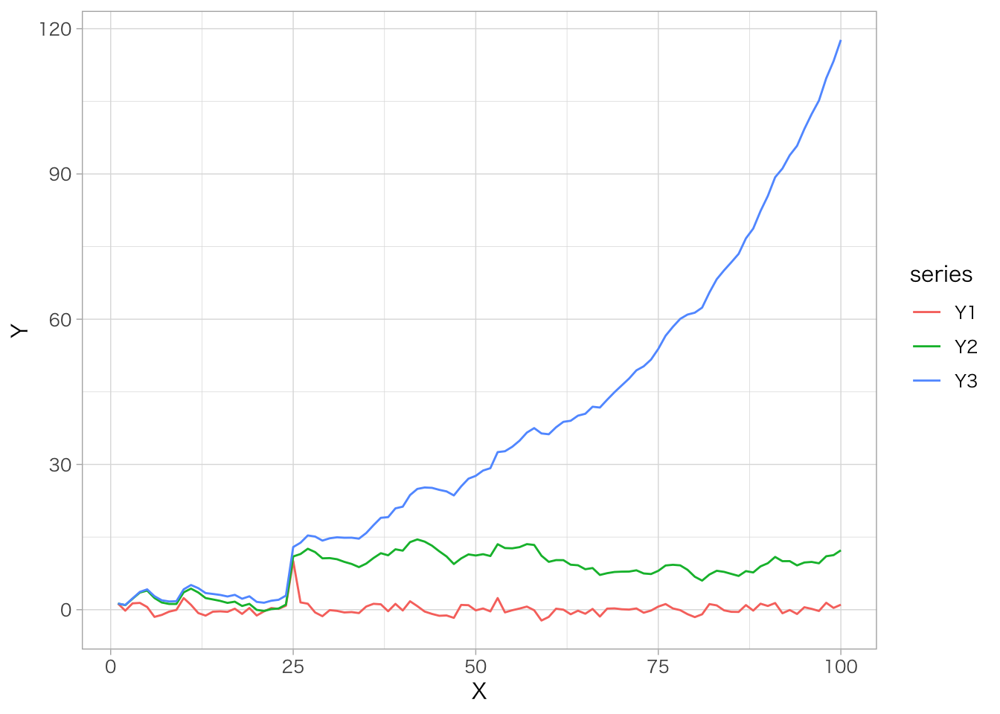
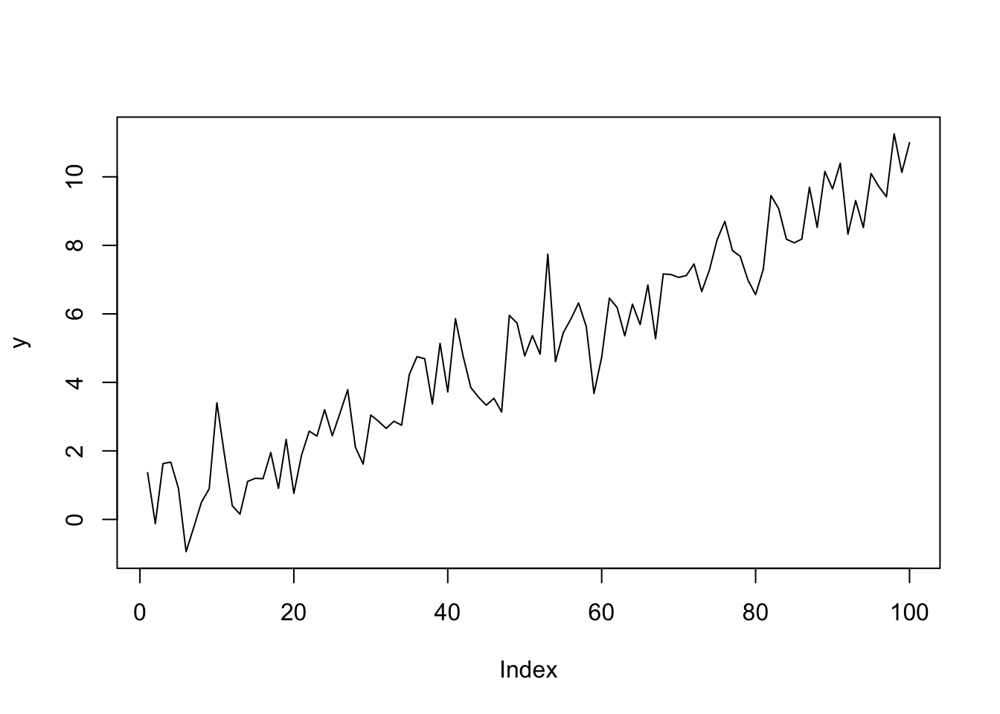
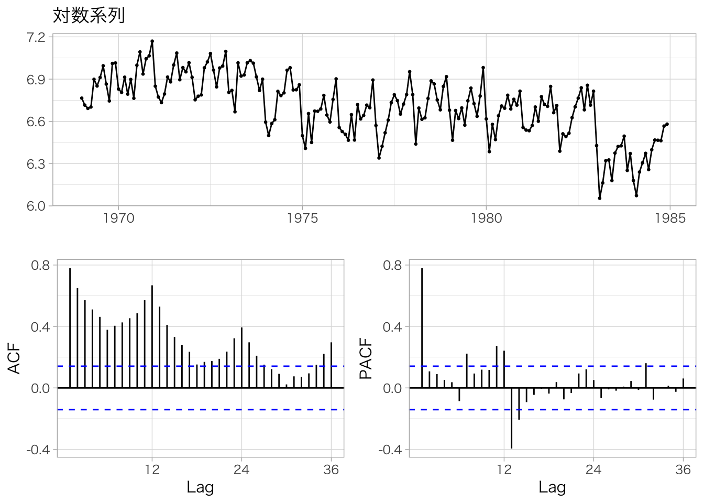
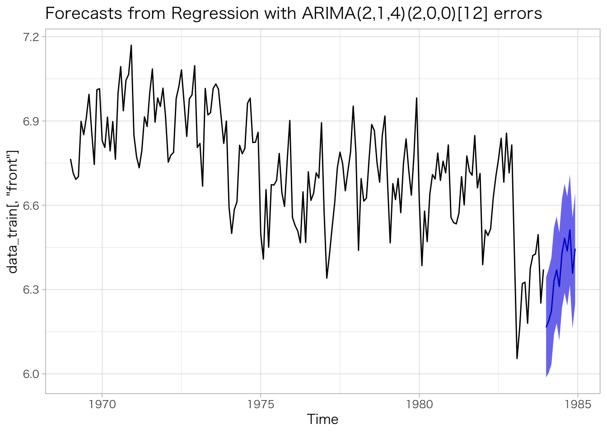
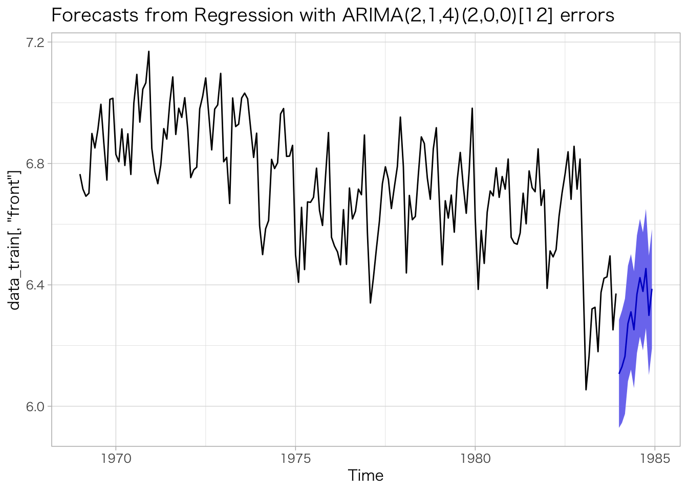
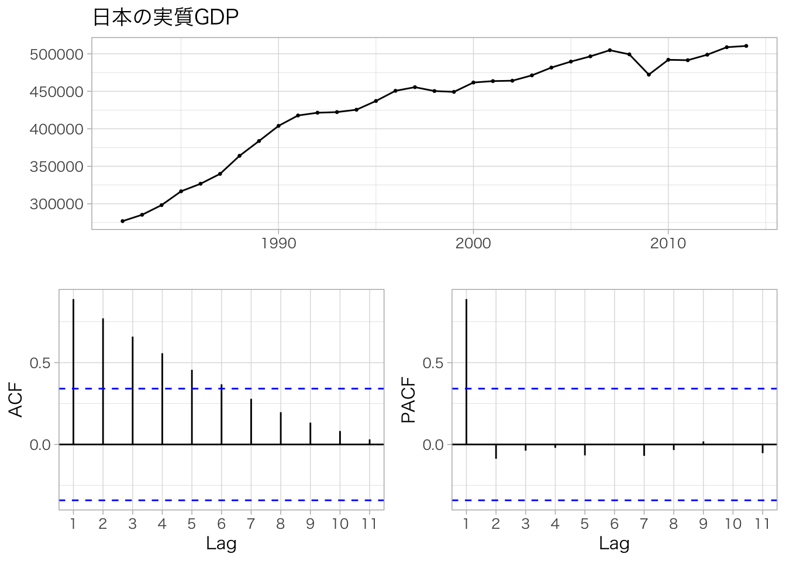
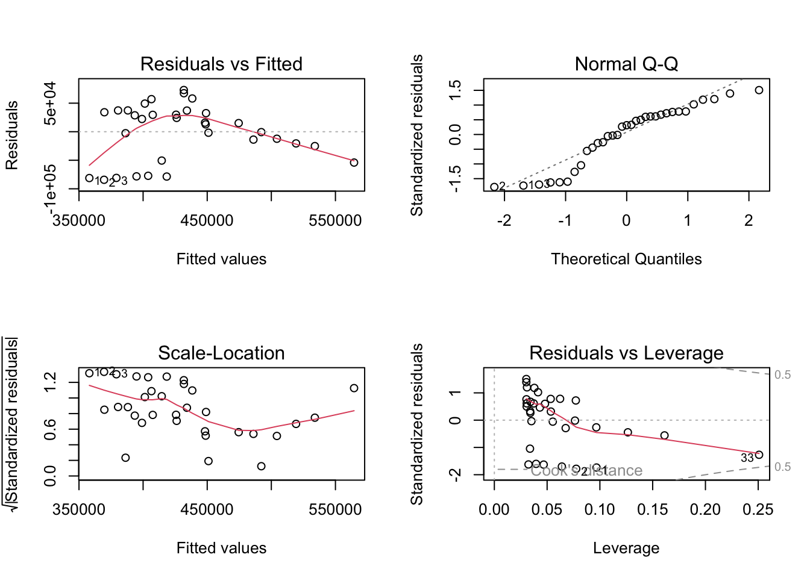
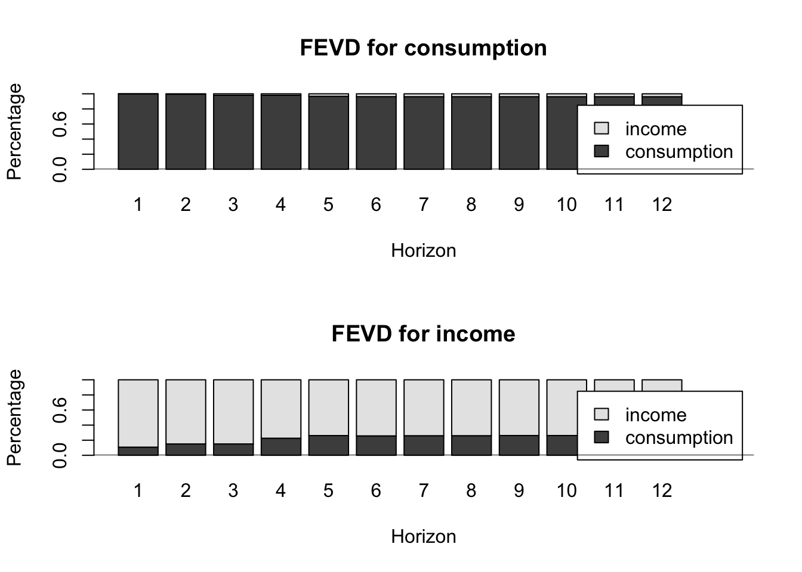

9 時系列分析
第9章「時系列分析」では、時系列データを対象とする分析手法について解説します。
時系列データ（time series data）とは、ある観測対象個体について、複数の時点で情報を観測したデータです。例えば、日本を対象に10年間の四半期別GDPの値を収集したデータが、時系列データに該当します。これに対し、複数の観測対象個体について単一の時点で情報を観測したデータを横断面データ（cross section data）と言います。
時系列分析は、時系列データを用い、観測時点間のデータの関係性（データの並び順や前後関係に関する性質）を明らかにしたり、過去のデータの特徴から将来の値を予測したりすることを目的としています。
なお、この章の説明は、エンダース（2019）、北岡 他（2013）、西山 他（2019）、ニールセン（2021）、馬場（2018）、宮尾（2006）、村尾（2019）、横内・青木（2014）を参考にしています。詳細は各参考文献を参照してください。
9.1 第9章の準備
9.1.1 パッケージのインポート
library(estimatr)
library(forecast)
library(fpp)
library(ggfortify)
library(ggplot2)
library(magrittr)
library(tidyverse)
library(tseries)
library(vars)
library(urca)9.1.2 外部データセットの取得
この章では、西山 他（2019）のデータセットを使用します。西山 他（2019）のサポートウェブサイトからデータファイルを取得し、各自の実行環境のワーキングディレクトリ直下にdata_nishiyamaフォルダを作成して、その中に格納してください。
9.2 定常性
時系列分析の目的は時系列データの特徴を明らかにし、将来の予測に役立てることです。そのためには、分析対象である時系列データの特徴が時間を通じて安定している必要があります。時系列データの安定性を担保する前提条件を、定常性（stationarity）と言います。
9.2.1 定常性の定義
本書では、定常性を次のように「平均\(E(Y_t)\)、分散\(\mathit{Var}(Y_t)\)、自己共分散\(\mathit{Cov}(Y_t, Y_{t-p})\)が時間\(t\)を通じて変わらないこと」と定義します。このような性質をもつ時系列データを定常過程（stationary process）と言います。
\[ \begin{aligned} & E(Y_t) = \mu \lt \infty \\ & \mathit{Var}(Y_t) = E[(Y_t - \mu)^2] = \sigma^2 \lt \infty \\ & \mathit{Cov}(Y_t, Y_{t-s}) = E[(Y_t - \mu)(Y_{t-s} - \mu)] = \gamma_s, \quad s \gt 0 \end{aligned} \]
特に、原系列に何ら変換を加えない状態で定常である時系列データをレベル定常過程と呼びます。レベル定常過程のデータは、ある水準の周りで安定的に推移し、一定の幅をもって変動します。
なお、定常性にはいくつかの定義があり、本書では「弱定常」や「共分散定常」と呼ばれる定常性の定義を採用しています。定常性の詳細については、ニールセン（2021）P.77、西山 他（2019）P.476、村尾（2019）P.36、横内・青木（2014）P.82を参照してください。
9.2.2 ホワイトノイズ
定常な時系列データの中で、最も簡単かつ重要な系列がホワイトノイズ（white noise）です。ホワイトノイズは、「平均が0、分散がある一定の値、自己共分散が0」が成立する時系列データと定義され、ここでは\(u_t\)と表します。ホワイトノイズの厳密な定義については、村尾（2019）P.32を参照してください。
\[ \begin{aligned} & E(u_t) = 0 \\ & \mathit{Var}(u_t) = E(u_t u_t) = \sigma^2 \lt \infty \\ & \mathit{Cov}(u_t, u_s) = E(u_t, u_s) = 0, \quad t \ne s \end{aligned} \]
例えば、平均が0の正規分布（標準正規分布など）に従う時系列データはホワイトノイズの一種です。ホワイトノイズを生成する場合は、rnorm()関数などを用いて正規乱数を生成し、ホワイトノイズとして利用することが一般的です。
# 標準正規分布に従うサンプルサイズ400の乱数を生成し、折れ線グラフをプロット
rnorm(n = 400, mean = 0, sd = 1) %>%
plot(type = "l")9.3 非定常過程
定常性を満たさない時系列データを非定常過程（non-stationary process）と言います。
ここでは、定常過程と非定常過程を区別する方法である単位根や、代表的な非定常過程の例である階差定常過程（和分過程）とトレンド定常過程について解説します。
9.3.1 単位根
時系列データの安定性を示す定常性とコインの裏表の関係にある概念が、単位根（unit root）です。時系列データが定常か非定常かを判断するうえでは、単位根の有無が重要です。
ある時系列データ\(Y_t\)の当期の値\(Y_t\)と1期前の値\(Y_{t-1}\)について、次のような関係を考えます。なお、\(u_t\)はホワイトノイズです。
\[ Y_t = \rho Y_{t-1} + u_t \]
ここで、ある時に変数\(u_t\)に生じたショックがその後の時系列データ\(Y_t\)に与える波及効果は、データの時間を通じた影響力を表す係数\(\rho\)の絶対値\(|\rho|\)が取りうる範囲によって、次の3つに分類できます。
\(|\rho| \lt 1\)のケース
データの時間を通じた影響力が1より小さく、変数\(u_t\)に生じたショックは時間の経過に伴って減衰します。すなわち、波及効果は過渡的・一時的であり、このケースは定常過程になります。
\(|\rho| = 1\)のケース
データの時間を通じた影響力が1であり、変数\(u_t\)に生じたショックは時間の経過に伴って減衰することなく一定で永遠に続きます。すなわち、波及効果は恒久的であり、このケースは非定常過程になります。このように\(|\rho| = 1\)となる\(\rho\)を単位根と言います。このケースはランダムウォーク（random walk）とも呼ばれます。
\(|\rho| \gt 1\)のケース
データの時間を通じた影響力が1より大きく、変数\(u_t\)に生じたショックは時間の経過に伴って拡大します。すなわち、波及効果は爆発的（発散）であり、このケースも非定常過程になります。
本書では2のケースと3のケースが成立するとき、すなわち\(|\rho| \ge 1\)の場合に、当該データが単位根過程（unit root process）であると呼びます。単位根過程は非定常過程の十分条件です。また、単位根過程はこの後に示す階差定常過程（和分過程）と同義です。
ケース1〜3のデータ例をRで作成して図示すると、次のようになります。
定常過程のケース1（\(Y^1_t = 0.1 \times Y^1_{t-1} + u_t\)）では\(Y=0\)から離れてもすぐに回帰し、\(Y=0\)の周りで安定的に変動しています。一方、ケース2（\(Y^2_t = Y^2_{t-1} + u_t\)）ではデータがすぐ\(Y=0\)に戻らずに一定期間プラスやマイナスの領域で推移し続け、不安定な千鳥足的変動になっています。最後のケース3（\(Y^3_t = 1.03 \times Y^3_{t-1} + u_t\)）ではデータが\(Y=0\)に戻ることなく、加速度的に\(Y=0\)から離れていきます。
# 時系列データを格納する要素数100の数値ベクトル
y1 <- vector(mode = "numeric", length = 100)
y2 <- vector(mode = "numeric", length = 100)
y3 <- vector(mode = "numeric", length = 100)
# 要素数100のホワイトノイズ（標準正規乱数）
set.seed(0)
u <- rnorm(n = 100, mean = 0, sd = 1)
# y1〜y3の初期値（t=1）にu[1]を代入しておく
y1[1] <- u[1]
y2[1] <- u[1]
y3[1] <- u[1]
# forループでt=2以降のデータを作成
for (t in 2:100) {
y1[t] <- 0.1 * y1[t-1] + u[t] # ケース1
y2[t] <- 1.0 * y2[t-1] + u[t] # ケース2
y3[t] <- 1.03 * y3[t-1] + u[t] # ケース3
}
# 折れ線グラフをプロット
tibble::tibble(
X = 1:100,
Y1 = y1,
Y2 = y2,
Y3 = y3
) %>%
tidyr::pivot_longer(cols = -X, values_to = "Y", names_to = "series") %>%
ggplot(mapping = aes(x = X, y = Y, color = series)) +
geom_line()
上の例において、\(t=25\)時点で一時的なショックを発生させると、次のような結果になります。ケース1ではショックが次第に消失し\(Y=0\)に回帰します。一方、ケース2ではショックが消失せずに残り、ショック発生後に水準がシフトします。ケース3ではショックが増幅され、ショックがない場合に比べ増加ペースが加速します。
# 時系列データを格納する要素数100の数値ベクトル
y1 <- vector(mode = "numeric", length = 100)
y2 <- vector(mode = "numeric", length = 100)
y3 <- vector(mode = "numeric", length = 100)
# 要素数100のホワイトノイズ（標準正規乱数）
set.seed(0)
u <- rnorm(n = 100, mean = 0, sd = 1)
# y1〜y3の初期値（t=1）にu[1]を代入しておく
y1[1] <- u[1]
y2[1] <- u[1]
y3[1] <- u[1]
# forループでt=2以降のデータを作成。t=25にshockが発生
for (t in 2:100) {
if (t == 25) {shock <- 10} else {shock <- 0}
y1[t] <- 0.1 * y1[t-1] + u[t] + shock # ケース1
y2[t] <- 1.0 * y2[t-1] + u[t] + shock # ケース2
y3[t] <- 1.03 * y3[t-1] + u[t] + shock # ケース3
}
# 折れ線グラフをプロット
tibble::tibble(
X = 1:100,
Y1 = y1,
Y2 = y2,
Y3 = y3
) %>%
tidyr::pivot_longer(cols = -X, values_to = "Y", names_to = "series") %>%
ggplot(mapping = aes(x = X, y = Y, color = series)) +
geom_line()9.3.2 階差定常過程・和分過程
非定常過程のデータは平均や分散といった性質が時間を通じて変化するため、そのままでは定常過程のデータと同様の分析を行うことができません。しかし、一定の処置を行なって定常過程に変換（定常化）すれば、定常過程のデータと同じように扱うことができます。
そうした特定の方法で定常化できる非定常過程の代表例として、原系列の階差を取ることで定常になる階差定常過程（和分過程）と、タイムトレンドを除去することで定常になるトレンド定常過程があります。
階差定常過程（difference stationary）は、原系列の階差を取ることで定常になる非定常過程であり、\(|\rho| \ge 1\)のケースに該当します。
階差定常過程は「何回階差を取れば定常過程になるか」が重要です。非定常過程\(Y_t\)が1次の階差変換で定常になるとき、\(Y_t\)は1次の和分過程（integrated process）であるといい、\(Y_t \sim I(1)\)と表記します。同様に2次の階差変換で定常になる場合は2次の和分過程と呼び、\(Y_t \sim I(2)\)と表記します。なお、原系列のままで定常なレベル定常過程は\(I(0)\)過程に分類されます。
経済・金融分野では一般的に多くの時系列データが\(I(0)\)過程もしくは\(I(1)\)過程であり、\(I(2)\)過程はきわめて稀です。したがって実務的には\(I(0)\)過程と\(I(1)\)過程を見分けることが重要です。
9.3.3 ランダムウォーク
階差定常過程の代表例がランダムウォークです。ランダムウォークは\(Y_t = c + Y_{t-1} + u_t\)の形を取ります。\(c\)はドリフト項といい、ランダムウォークなどの\(I(1)\)過程ではタイムトレンドを表現します（村尾（2019）P.66）。
次の例はドリフト項がない最も基本的なランダムウォーク\(Y_t = Y_{t-1} + u_t\)であり、\(Y=0\)の周りで不安定な千鳥足的変動になっています。
# 時系列データを格納する要素数100の数値ベクトル
y <- vector(mode = "numeric", length = 100)
# 要素数100のホワイトノイズ（標準正規乱数）
set.seed(0)
u <- rnorm(n = 100, mean = 0, sd = 1)
# yの初期値（t=1）にu[1]を代入しておく
y[1] <- u[1]
# forループでt=2以降のデータを作成
for (t in 2:100) {y[t] <- y[t-1] + u[t]}
# 折れ線グラフにプロット
plot(y, type = "l")
一方、次の例はドリフト項があるランダムウォーク\(Y_t = c + Y_{t-1} + u_t\)であり、タイムトレンド（ここでは\(c=0.2\)）の周りで不安定な千鳥足的変動になっています。一見すると次に示すトレンド定常過程と似ていますが、ランダムウォークはタイムトレンドを除去（ディトレンド）しても非定常過程のままであり、それだけでは定常過程に変換できません。
# 時系列データを格納する要素数100の数値ベクトル
y <- vector(mode = "numeric", length = 100)
# 要素数100のホワイトノイズ（標準正規乱数）
set.seed(0)
u <- rnorm(n = 100, mean = 0, sd = 1)
# yの初期値（t=1）にu[1]を代入しておく
y[1] <- u[1]
# forループでt=2以降のデータを作成
for (t in 2:100) {y[t] <- 0.2 + y[t-1] + u[t]}
# 折れ線グラフにプロット
plot(y, type = "l")
9.3.4 トレンド定常過程
トレンド定常過程（trend stationary）は、タイムトレンド（時間のみの関数）を取り除くことによって定常になる非定常過程です。タイムトレンドを除去するには、1階の階差変換を行なったり、線形トレンドを当てはめてトレンドラインからの乖離幅を求めたりする方法があります。
トレンド定常過程は、レベル定常過程にタイムトレンド項を加えた構造をしています。平均値が時間を通じて一定でないため、厳密には定常性の条件を満たしませんが、タイムトレンドの周りで一定の幅をもって安定的に変動するため、定常過程に近い性質があります。
トレンド定常過程のデータを扱う際の注意点は次のとおりです。
単位根の有無だけでは、定常過程とトレンド定常過程を区別できません。定常過程とトレンド定常過程はどちらも単位根をもたず、ともに\(I(0)\)過程に分類されます。定常過程とトレンド定常過程を見分けるには、データを図示してトレンドの有無をチェックするか、次に示すADF検定フローで「トレンド項がある\(I(0)\)過程」であることを確認する必要があります。
トレンド定常過程のデータに定常性を前提とする時系列分析手法は使えません。トレンド定常過程は単位根を持たない\(I(0)\)過程である点が定常過程と共通していますが、平均値が一定でなく定常性の条件を満たしていないため、後述するボックス＝ジェンキンス法のARMAモデルのように、定常性を前提とする時系列分析手法を使うことはできず、階差変換を行うARIMAモデルを用いる必要があります。
1階の階差変換による定常化だけでは、階差定常過程（1次の和分過程）とトレンド定常過程を区別できません。1階の階差変換はタイムトレンドを除去する手段でもあるため、1階の階差変換により階差定常過程（1次の和分過程）とトレンド定常過程をどちらも定常化することができます。一方、それ以外のタイムトレンド除去方法（例えば線形トレンドの当てはめなど）を階差定常過程データに用いても定常化することはできません。\(I(1)\)過程データと\(I(0)\)過程データは、後述する共和分の有無の確認などで取り扱いが異なるため、次に示すADF検定フローを通じて区別する必要があります。
最も単純なトレンド定常過程の例が、ホワイトノイズ\(u_t\)にタイムトレンド項\(\delta t\)を加えた\(Y_t = \delta t + u_t\)です。ここでは例として\(\delta = 0.1\)とします。
# 時系列データを格納する要素数100の数値ベクトル
y <- vector(mode = "numeric", length = 100)
# 要素数100のホワイトノイズ（標準正規乱数）
set.seed(0)
u <- rnorm(n = 100, mean = 0, sd = 1)
# forループでタイムトレンド項1〜100のデータを作成
for (t in 1:100) {y[t] <- 0.1 * t + u[t]}
# 折れ線グラフにプロット
plot(y, type = "l")
また、\(|\rho| \lt 1\)のケースのレベル定常過程データにタイムトレンド項を加えた\(Y_t = \rho Y_{t-1} + \delta t + u_t \; (|\rho| \lt 1)\)もトレンド定常過程になります。ここでは例として\(\rho = 0.8\)、\(\delta = 0.1\)とします。
# 時系列データを格納する要素数100の数値ベクトル
y <- vector(mode = "numeric", length = 100)
# 要素数100のホワイトノイズ（標準正規乱数）
set.seed(0)
u <- rnorm(n = 100, mean = 0, sd = 1)
# yの初期値（t=1）にu[1]を代入しておく
y[1] <- u[1]
# forループでt=2以降のデータを作成
for (t in 2:100) {y[t] <- 0.8 * y[t-1] + 0.1 * t + u[t]}
# 折れ線グラフにプロット
plot(y, type = "l")
上記式にドリフト項\(c\)を加えた\(Y_t = c + \rho Y_{t-1} + \delta t + u_t \; (|\rho| \lt 1)\)も、トレンド定常過程になります。ここでは例として\(c = 5\)とします。トレンド定常過程におけるドリフト項\(c\)は初期時点の一時的なショックを表現し、ショックの消化に伴いトレンド定常過程全体が\(Y=0\)からレベルシフトします。ショックの消化に要する期間は\(Y_{t-1}\)の係数\(\rho\)に、レベルシフトの幅はドリフト項\(c\)と\(Y_{t-1}\)の係数\(\rho\)両方に依存します。
# 時系列データを格納する要素数100の数値ベクトル
y <- vector(mode = "numeric", length = 100)
# 要素数100のホワイトノイズ（標準正規乱数）
set.seed(0)
u <- rnorm(n = 100, mean = 0, sd = 1)
# yの初期値（t=1）にu[1]を代入しておく
y[1] <- u[1]
# forループでt=2以降のデータを作成
for (t in 2:100) {y[t] <- 5 + 0.8 * y[t-1] + 0.1 * t + u[t]}
# 折れ線グラフにプロット
plot(y, type = "l")9.4 単位根検定（ADF検定）
単位根が分析対象の時系列データにあるかどうかを判断するための方法が、単位根検定（unit root test）です。単位根検定にはいくつかの種類がありますが、ここでは最も一般的な拡張ディッキー＝フラー検定（Augmented Dickey-Fuller test、ADF検定）を用います。ADF検定の最終的な目的は、単位根の有無をもとに、分析対象である時系列データの和分次数（\(I(0)\)、\(I(1)\)、\(I(2)\)など）を判断することです。
ADF検定では、分析対象の時系列データが定数項やタイムトレンド項をもつ可能性を考慮し、次の3種類のモデルについて「単位根がある（\(\rho = 1\)）」ことを帰無仮説とする検定を行います。ここで、定数項は\(\beta_1\)、タイムトレンド項は\(\beta_2t\)です。また、\(\sum^{p-1}_{s=1}{\gamma_sY_{t-s}}\)はラグ次数\(p\)の系列相関の影響を制御（除去）する役割があります。
trendモデル
trendモデルは定数項\(\beta_1\)とタイムトレンド項\(\beta_2t\)の両方を含む回帰モデルです。
\[ \Delta{Y_t} = \beta_1 + \beta_2t + (\rho - 1)Y_{t-1} + \sum^{p-1}_{s=1}{\gamma_sY_{t-s}} + u_t \]
driftモデル
driftモデルは定数項\(\beta_1\)を含む回帰モデルです。
\[ \Delta{Y_t} = \beta_1 + (\rho - 1)Y_{t-1} + \sum^{p-1}_{s=1}{\gamma_sY_{t-s}} + u_t \]
noneモデル
noneモデルは定数項もタイムトレンド項も含まない回帰モデルです。
\[ \Delta{Y_t} = (\rho - 1)Y_{t-1} + \sum^{p-1}_{s=1}{\gamma_sY_{t-s}} + u_t \]
ADF検定の具体的なフローは次のとおりです。
まず、時系列データの原系列に対し、trendモデル、driftモデル、noneモデルの順番で「単位根がある（\(\rho = 1\)）」ことを帰無仮説とする検定を行います。帰無仮説が棄却できればそこでADF検定が終了し、時系列データが\(I(0)\)過程であると判断します。
一方、3つのモデル全てにおいて帰無仮説が棄却できなければ、時系列データを階差変換し、再びtrendモデル、driftモデル、noneモデルの順番で検定を繰り返します。1次の階差変換で帰無仮説が棄却できれば時系列データは\(I(1)\)過程、2次の階差変換で帰無仮説が棄却できれば時系列データは\(I(2)\)過程と判断します。
なお、上記のフローは単純化したもので、実際には3つのモデルそれぞれについて複数の帰無仮説を検定し、その結果によって手順が変わる枝分かれのフロー構造になっています。ADF検定フローの詳細については、村尾（2019）P.137を参照してください。
9.4.1 ADF検定フロー自作関数
上記のように、ADF検定を用いた和分次数の判断はシステマチックに実施することができます。本書では、ADF検定フローを分析対象の時系列データに自動で適用する自作関数adf_test_flow()を定義します。
adf_test_flow()自作関数の引数は次のとおりです。
y：ADF検定を適用する時系列データ。数値型ベクトルもしくはts形式データを指定します。lag_criterion：ラグ次数の選択基準。"AIC"、"BIC"、"Fixed"の3つのうち1つを指定します。"AIC"もしくは"BIC"を指定すると、それぞれ赤池情報量規準（Akaike Information Criterion）とベイズ情報量規準（Bayesian Information Criterion）に基づき最適なラグ次数が自動で選択されます（このときlags_max引数に指定した値が自動で選択されるラグ次数の上限になります）。"Fixed"を指定する場合は、適用するラグ次数をlags_fixed引数に手動で指定します。lags_max：ラグ次数の最大値（正の整数、デフォルト値は12）。lag_criterion引数に"AIC"か"BIC"を指定した場合に使用します。lags_fixed：ラグ次数（正の整数、デフォルト値は1）。lag_criterion引数に"Fixed"を指定した場合に使用します。sig_level：有意水準。0.01、0.05、0.1の3つのうち1つを指定します。
これらの引数を設定してadf_test_flow()自作関数を実行すると、ADF検定フローの結果を記載したtibble形式のデータフレームが出力されます。trendモデル3種類、driftモデル3種類、noneモデル1種類の合計7種類のADF検定について、yに指定した時系列データが\(I(0)\)過程、\(I(1)\)過程、\(I(2)\)過程のどれに従うかが判断できるまで階差次数を増やして検定を繰り返し、各検定の結果に基づく判断経路を「＊」で示します。最後に「＊」が記載されている箇所が最終的な判断になります。
library(docstring)
# 時系列データに対しADF検定フローを自動で適用する関数
adf_test_flow <- function(y, lag_criterion = c("AIC", "BIC", "Fixed"), lags_max = 12, lags_fixed = 1, sig_level = c(0.01, 0.05, 0.1)) {
#' Automatic Augmented Dickey-Fuller Unit Root Test Flow
#'
#' @description
#' This function automatically performs the test flow of the Augmented Dickey-Fuller (ADF) unit root test. Written by Naoki Hattori.
#'
#' @param y Numeric vector or ts. Time series data for ADF test.
#' @param lag_criterion Character. Specifies how the lag order is set. "AIC" for Akaike Information Criterion, "BIC" for Bayesian Information Criterion. The maximum number of lags considered is set by lags_max. "Fixed" for manually set by lags_fixed.
#' @param lags_max Integer. Specifies maximum number of lags considered when choose "AIC" or "BIC" for lag_criterion. Default is 12.
#' @param lags_fixed Integer. Specifies the lag order manually when choose "Fixed" for lag_criterion. Default is 1.
#' @param sig_level Numeric. Significance level, either 0.01, 0.05, 0.1.
# 引数sig_levelをurca::ur_df()関数用に文字列へ変換
sig_level_str <- str_c(sig_level * 100, "pct")
# 出力用tibble
res <- tibble::tibble() %>%
dplyr::mutate(`フロー` = NA_real_,
`階差次数` = NA_real_,
`モデル` = NA_character_,
`ラグ次数` = NA_real_,
`帰無仮説` = NA_character_,
`検定統計量` = NA_character_,
`棄却点の分布` = NA_character_,
`棄却点` = NA_real_,
`検定値` = NA_real_,
`結果` = NA_character_,
`判断` = NA_character_,
`判断経路` = NA_character_,
)
# フローカウンタ
i <- 0
# 判断経路記入用ベクトル（最大21要素＝7フロー × 3ループ）
flow_vec <- rep(FALSE, times = 21)
flow_vec[1] <- TRUE
#flow_vec[c(1, 8, 15)] <- TRUE
# 判断経路記入可否フラグ
flow_cont_flag <- TRUE
# ラグ次数の指定
if (lag_criterion == "Fixed") {
lags <- lags_fixed
} else {
lags <- lags_max
}
# 階差次数dのループ（0〜2次）
for (d in 0:2) {
# データの階差変換
if (d >= 1) {y <- diff(y, lag = 1)}
# 正規分布の棄却点
norm_cval <- qnorm(p = sig_level, lower.tail = TRUE)
# ADF検定
urdf_trend <- urca::ur.df(y, type = "trend", lags = lags, selectlags = lag_criterion)
urdf_drift <- urca::ur.df(y, type = "drift", lags = lags, selectlags = lag_criterion)
urdf_none <- urca::ur.df(y, type = "none", lags = lags, selectlags = lag_criterion)
# ループ継続判断用ベクトル
continue_vec <- rep(FALSE, 3)
# ADF検定フロー1 trendモデル H0：ρ - 1 = 0
i <- i + 1
res %<>% tibble::add_row(`フロー` = i,
`階差次数` = d,
`モデル` = "trend 第1検定",
`ラグ次数` = nrow(urdf_trend@testreg$coefficients) - 3,
`帰無仮説` = "単位根あり",
`検定統計量` = "tau3",
`棄却点の分布` = "tau3",
`棄却点` = urdf_trend@cval["tau3", sig_level_str],
`検定値` = urdf_trend@teststat[, "tau3"],
`判断経路` = if_else(flow_vec[i], "＊", "")
)
if (urdf_trend@teststat[, "tau3"] < urdf_trend@cval["tau3", sig_level_str]) {
res$結果[i] <- "帰無仮説を棄却"
res$判断[i] <- str_c("単位根なし：I(", d, ")過程")
if (flow_vec[i]) {flow_cont_flag <- FALSE}
} else {
res$結果[i] <- "帰無仮説を棄却できない"
res$判断[i] <- str_c("単位根の判断保留：フロー", 2 + 7 * d, "へ")
if (flow_cont_flag) {flow_vec[i + 1] <- TRUE}
}
# ADF検定フロー2 trendモデル H0：β2 = 0 and ρ - 1 = 0
i <- i + 1
res %<>% tibble::add_row(`フロー` = i,
`階差次数` = d,
`モデル` = "trend 複合検定",
`ラグ次数` = nrow(urdf_trend@testreg$coefficients) - 3,
`帰無仮説` = "トレンド項なし＆単位根あり",
`検定統計量` = "phi3",
`棄却点の分布` = "phi3",
`棄却点` = urdf_trend@cval["phi3", sig_level_str],
`検定値` = urdf_trend@teststat[, "phi3"],
`判断経路` = if_else(flow_vec[i], "＊", "")
)
if (urdf_trend@teststat[, "phi3"] > urdf_trend@cval["phi3", sig_level_str]) {
res$結果[i] <- "複合帰無仮説を棄却"
res$判断[i] <- str_c("トレンド項あり：フロー", 3 + 7 * d, "へ")
if (flow_cont_flag) {flow_vec[i + 1] <- TRUE}
} else {
res$結果[i] <- "複合帰無仮説を棄却できない"
res$判断[i] <- str_c("トレンド項なし：フロー", 4 + 7 * d, "へ")
if (flow_cont_flag) {flow_vec[i + 2] <- TRUE}
}
# ADF検定フロー3 trendモデル H0：ρ - 1 = 0
i <- i + 1
res %<>% tibble::add_row(`フロー` = i,
`階差次数` = d,
`モデル` = "trend 第2検定",
`ラグ次数` = nrow(urdf_trend@testreg$coefficients) - 3,
`帰無仮説` = "単位根あり",
`検定統計量` = "tau3",
`棄却点の分布` = "正規分布",
`棄却点` = norm_cval,
`検定値` = urdf_trend@teststat[, "tau3"],
`判断経路` = if_else(flow_vec[i], "＊", "")
)
if (urdf_trend@teststat[, "tau3"] < norm_cval) {
res$結果[i] <- "帰無仮説を棄却"
res$判断[i] <- str_c("単位根なし：I(", d, ")過程")
if (flow_vec[i]) {flow_cont_flag <- FALSE}
} else {
res$結果[i] <- "帰無仮説を棄却できない"
res$判断[i] <- "階差変換し再検定"
if (flow_cont_flag & (d <= 1)) {flow_vec[(d + 1) * 7 + 1]}
continue_vec[1] <- TRUE
}
# ADF検定フロー4 driftモデル H0：ρ - 1 = 0
i <- i + 1
res %<>% tibble::add_row(`フロー` = i,
`階差次数` = d,
`モデル` = "drift 第1検定",
`ラグ次数` = nrow(urdf_drift@testreg$coefficients) - 2,
`帰無仮説` = "単位根あり",
`検定統計量` = "tau2",
`棄却点の分布` = "tau2",
`棄却点` = urdf_drift@cval["tau2", sig_level_str],
`検定値` = urdf_drift@teststat[, "tau2"],
`判断経路` = if_else(flow_vec[i], "＊", ""),
)
if (urdf_drift@teststat[, "tau2"] < urdf_drift@cval["tau2", sig_level_str]) {
res$結果[i] <- "帰無仮説を棄却"
res$判断[i] <- str_c("単位根なし：I(", d, ")過程")
if (flow_vec[i]) {flow_cont_flag <- FALSE}
} else {
res$結果[i] <- "帰無仮説を棄却できない"
res$判断[i] <- str_c("単位根の判断保留：フロー", 5 + 7 * d, "へ")
if (flow_cont_flag) {flow_vec[i + 1] <-TRUE}
}
# ADF検定フロー5 driftモデル H0：β1 = 0 and ρ - 1 = 0
i <- i + 1
res %<>% tibble::add_row(`フロー` = i,
`階差次数` = d,
`モデル` = "drift 複合検定",
`ラグ次数` = nrow(urdf_drift@testreg$coefficients) - 2,
`帰無仮説` = "定数項なし＆単位根あり",
`検定統計量` = "phi1",
`棄却点の分布` = "phi1",
`棄却点` = urdf_drift@cval["phi1", sig_level_str],
`検定値` = urdf_drift@teststat[, "phi1"],
`判断経路` = if_else(flow_vec[i], "＊", "")
)
if (urdf_drift@teststat[, "phi1"] > urdf_drift@cval["phi1", sig_level_str]) {
res$結果[i] <- "複合帰無仮説を棄却"
res$判断[i] <- str_c("定数項あり：フロー", 6 + 7 * d, "へ")
if (flow_cont_flag) {flow_vec[i + 1] <- TRUE}
} else {
res$結果[i] <- "複合帰無仮説を棄却できない"
res$判断[i] <- str_c("定数項なし：フロー", 7 + 7 * d, "へ")
if (flow_cont_flag) {flow_vec[i + 2] <- TRUE}
}
# ADF検定フロー6 driftモデル H0：ρ - 1 = 0
i <- i + 1
res %<>% tibble::add_row(`フロー` = i,
`階差次数` = d,
`モデル` = "drift 第2検定",
`ラグ次数` = nrow(urdf_drift@testreg$coefficients) - 2,
`帰無仮説` = "単位根あり",
`検定統計量` = "tau2",
`棄却点の分布` = "正規分布",
`棄却点` = norm_cval,
`検定値` = urdf_drift@teststat[, "tau2"],
`判断経路` = if_else(flow_vec[i], "＊", "")
)
if (urdf_drift@teststat[, "tau2"] < norm_cval) {
res$結果[i] <- "帰無仮説を棄却"
res$判断[i] <- str_c("単位根なし：I(", d, ")過程")
if (flow_vec[i]) {flow_cont_flag <- FALSE}
} else {
res$結果[i] <- "帰無仮説を棄却できない"
res$判断[i] <- "階差変換し再検定"
if (flow_cont_flag & (d <= 1)) {flow_vec[(d + 1) * 7 + 1] <- TRUE}
continue_vec[2] <- TRUE
}
# ADF検定フロー7 noneモデル H0：ρ - 1 = 0
i <- i + 1
res %<>% tibble::add_row(`フロー` = i,
`階差次数` = d,
`モデル` = "none",
`ラグ次数` = nrow(urdf_none@testreg$coefficients) - 1,
`帰無仮説` = "単位根あり",
`検定統計量` = "tau1",
`棄却点の分布` = "tau1",
`棄却点` = urdf_none@cval["tau1", sig_level_str],
`検定値` = urdf_none@teststat[, "tau1"],
`判断経路` = if_else(flow_vec[i], "＊", "")
)
if (urdf_none@teststat[, "tau1"] < urdf_none@cval["tau1", sig_level_str]) {
res$結果[i] <- "帰無仮説を棄却"
res$判断[i] <- str_c("単位根なし：I(", d, ")過程")
if (flow_vec[i]) {flow_cont_flag <- FALSE}
} else {
res$結果[i] <- "帰無仮説を棄却できない"
res$判断[i] <- "階差変換し再検定"
if (flow_cont_flag & (d <= 1)) {flow_vec[(d + 1) * 7 + 1] <- TRUE}
continue_vec[3] <- TRUE
}
# ループ継続を判断（continue_vecの中に一つでもTRUEがあればbreakしない）
if (!any(continue_vec)) {break}
}
# 結果
return(res %>%
dplyr::select(-`検定統計量`, -`棄却点の分布`)
)
}
# docstring::docstring(adf_test_flow)9.4.2 実例：ADF検定フロー
定義した自作関数adf_test_flow()を用い、村尾（2019）「6.7 拡張ディッキー＝フラー検定の例」（P.141）及び、「6.10 Rによる拡張ディッキー＝フラー検定」（P.147）の例を再現します。
村尾（2019）6.7及び6.10では、varsパッケージのCanadaデータセットに含まれるカナダの実質労働生産性（prod）データに対してADF検定フローを適用しています。データ頻度は四半期、期間は1980年1-3月期〜2000年10-12月期です。
# Canadaデータセットを呼び出し
data(Canada)
# 実質労働生産性データを変数yに格納しプロット
y <- Canada[, "prod"]
plot(y)ここでは、ラグ次数選択基準のlag_criterionに、赤池情報量規準を意味する"AIC"を指定します。
adf_test_flow()自作関数を実行した結果、実質労働生産性の原系列（階差次数＝0）では単位根の存在が示唆され、1次の階差系列では単位根がないことが確認できました。したがって実質労働生産性は\(I(1)\)過程であると判断できます。
# yにadf_test_flow()関数を適用
adf_prod <- adf_test_flow(y = y, # 検定対象の時系列データ
lag_criterion = "AIC", # ラグ次数選択基準
lags_max = 10, # AICで自動選択する最大ラグ次数
sig_level = 0.05 # 有意水準
)
# 結果をコンソールに出力
# 実際に使用する際は、View(adf_prod) で別ウィンドウに結果を表示する方が結果が確認しやすい
adf_prod9.5 系列相関・自己相関
時系列データ\(Y\)について、現在の値\(Y_t\)と過去の値\(Y_{t-1}\)の間の相関を系列相関（serial correlation）もしくは自己相関（autocorrelation）と言います。
多くのマクロ経済データでは、正の系列相関（前期が正であれば今期も正である可能性が高い）が観察されます。系列相関がないデータは何らかのショックで平均値から乖離してもすぐにまた平均値へ戻りますが、正の系列相関があるデータは一度平均値を離れると戻るまでに一定期間を要する傾向があります。マクロ経済の活動が活発になる期間と停滞する期間が交互に繰り返される「景気循環」の現象は、マクロ時系列データ上では正の系列相関として表現されます（西山 他（2019）P.471）。
系列相関の有無やその構造を確認することは、分析対象である時系列データのモデリングやラグ次数の選択を行う上で重要です。また、最小2乗法（OLS）では誤差項に系列相関があると最小2条推定量の望ましい性質が得られないため、誤差項に対し系列相関の検定が行われます。これは後述するベクトル自己回帰（VAR）モデルでも同様です。
9.5.1 自己相関（ACF）
ラグ次数\(p\)の（標本）自己相関係数\(\hat{\rho}_p\)は、標本平均\(\bar{Y} = (1/T)\sum^{T}_{t=1}{Y_t}\)として、次のように計算できます。
\[ \hat{\rho}_{p} = \frac{\hat{\gamma}_{p}}{\hat{\gamma}_{0}} = \frac{\sum^{T}_{t=p+1}{(Y_t-\bar{Y})(Y_{t-p}-\bar{Y})}}{\sum^{T}_{t=1}{(Y_t-\bar{Y})^2}} \]
コレログラム（自己相関プロット）は、横軸にラグ次数\(p\)、縦軸に自己相関係数の値をプロットした図で、stats::acf()関数で作成します。ACFはAuto Correlation Function（自己相関関数）を意味します。
コレログラム内に表示されている波線は「自己相関係数が0である」との帰無仮説をラグ次数\(p = 1\)から順番に逐次検定するための95％信頼区間を示しています。いずれかのラグ次数\(p\)において自己相関係数の値が信頼区間の外側にあれば、系列相関があると判断できます。
ここでは、西山 他（2019）P.478の図10-14で使用されている日本のGDPギャップ（内閣府、1980〜2016年）のデータでコレログラムを作成します。
# XLSXデータを読み込み
data <- readxl::read_excel(path = "data_nishiyama/ch10/Fig_12_GDPgap_quarterly.xlsx", # ファイルパス（拡張子が必要、URLは不可）
sheet = NULL, # シートインデックス／シート名
col_names = c("year", "quarter", "date", "cao", "boj"), # ヘッダー（列名データ）の有無／列名指定
col_types = NULL, # 各列の型の指定（c：文字列型、d：数値型、D：日付型、l：論理値型）
skip = 1 # 読み込み時に上からスキップする行数
)
data %<>%
dplyr::select(date, cao, boj) %>%
dplyr::mutate(date = lubridate::date(zoo::as.yearqtr(date, format = "%YQ%q"))) %>%
dplyr::filter(date <= "2016-12-31")stats::acf()関数でコレログラムを作成すると、ラグ次数が5次以下の低次の自己相関係数が有意であることが確認できます。このように、低次ラグの自己相関係数が正であり、ラグ次数1次をピークに単調に減少する性質は、正の系列相関がある典型的なマクロ経済変数のコレログラムの例です。
しかし、これをもって、5四半期前までのGDPギャップが全て当該四半期のGDPギャップに関係しているとは判断できません。自己相関係数の計算では、ラグの積み重ねによる間接的な関係が含まれているためです。そうした間接的な影響を排除して、過去のデータと当月のデータの直接的な関係を調べる方法が、次の偏自己相関です。
stats::acf(data$cao, plot = TRUE)9.5.2 偏自己相関（PACF）
偏自己相関プロットを作成するには、stats::pacf()関数を使用します。PACFはPartial Auto Correlation Function（偏自己相関関数）を意味します。
自己相関プロットと同様に、日本のGDPギャップ（内閣府、1980〜2016年）のデータで偏自己相関プロットを作成すると、ラグ次数1次の偏自己相関係数が有意である一方、2〜5次の偏自己相関係数は有意ではなくなりました。この結果は、当該四半期のGDPギャップと関係しているのは1四半期前のGDPギャップのみであることを示しています。
stats::pacf(data$cao, plot = TRUE)
9.5.3 リュン＝ボックス検定
自己相関プロットや偏自己相関プロットは系列相関の有無を視覚的に判断できる便利な方法ですが、プロット上に表示される95％信頼区間は逐次検定用であり、自己相関の数が大きくなると多重検定の問題（t検定を複数回行うと設定された有意水準5％よりも高い頻度で第1種の過誤が発生すること）が生じます。つまり、実際には系列相関がないにも関わらず、どこかのラグ次数で帰無仮説（自己相関係数が0）を棄却してしまう確率が増加します（西山 他（2019））。
この問題を避けるには「複数の自己相関係数が0である」という結合帰無仮説
\[ H_0 : \rho_1 = \rho_2 = \cdots = \rho_m = 0 \]
を一度に検定する必要があります。対立仮説は「少なくとも一つの自己相関係数が0ではない」です。この結合帰無仮説の検定が、リュン＝ボックス検定（Ljung-Box test）です。なお、過去には「ダービン＝ワトソン比」で系列相関の有無を判断する方法が用いられていましたが、現在ではリュン＝ボックス検定を用いるのが一般的です（西山 他（2019）P.484）。
リュン＝ボックス検定を行うにはstats::Box.test()関数を使用し、type引数に"Ljung-Box"を、lag引数にラグ次数を指定します。ここでは、偏自己相関プロット（PACF）の結果に基づきラグ次数に1を指定します。
実行すると、X-squaredに修正Q統計量、p-valueにp値が出力されます。この例ではp値が5％を下回り、ラグ次数が1のとき「系列相関がない」という帰無仮説が5％の有意水準で棄却されます。すなわち、日本のGDPギャップはラグ次数が1次のとき系列相関を持つと判断できます。
stats::Box.test(data$cao, # 帰無仮説「自己相関なし」を検定する系列
lag = 1, # ラグ次数
type = "Ljung-Box"
)##
## Box-Ljung test
##
## data: data$cao
## X-squared = 105.01, df = 1, p-value < 2.2e-16一方、rnorm()関数で標準正規分布に従うホワイトノイズを生成してリュン＝ボックス検定を実行すると、p値が5％を上回り「系列相関がない」との帰無仮説が5％の有意水準で棄却されません。この結果は、ホワイトノイズには有意な系列相関が確認できないことを意味しています。なお、これは帰無仮説の「系列相関がない」を採択しているわけではなく、統計的に明確な系列相関があるとは言えない、ということです。
stats::Box.test(rnorm(n = 400, mean = 0, sd = 1), # 帰無仮説「自己相関なし」を検定する系列
lag = 1, # ラグ次数
type = "Ljung-Box"
)##
## Box-Ljung test
##
## data: rnorm(n = 400, mean = 0, sd = 1)
## X-squared = 0.012777, df = 1, p-value = 0.919.6 ボックス＝ジェンキンス法
ボックス＝ジェンキンス法（Box-Jenkins method）は、ARMAモデルやARIMAモデルといった最も基本的な時系列分析の手法です。
ボックス＝ジェンキンス法には、原系列のままで定常な「レベル定常データ」に適用できるARMAモデルと、階差変換によって定常になる「トレンド定常過程」や「階差定常過程」（単位根過程、和分過程）に適用するARIMAモデルがあります。
9.6.1 ARMAモデル
ARMAモデルには、ARモデル、MAモデル、ARモデルとMAモデルを組み合わせたARMAモデルがあります。ARモデルとMAモデルはARMAモデルの一部です。ARMAモデルを適用可能な時系列データは、原系列のままで定常な「レベル定常過程」データです。
ARモデル
自己回帰（Autoregressive、AR）モデルは、過去の自分のデータを説明変数とする回帰モデルです。\(p\)時点前までのデータを使う自己回帰モデルを\(\mathit{AR}(p)\)と表記します。
\[ Y_t = c + \phi_1Y_{t-1} + \phi_2Y_{t-2} + \phi_3Y_{t-3} + \dots + \phi_pY_{t-p} + u_t \]
なお、\(u_t\)は平均が0、分散が\(\sigma^2\)の正規分布\(N(0,\sigma^2)\)に従うホワイトノイズ（平均が0、分散がある一定の値、自己共分散が0）です。
MAモデル
移動平均（Moving Average、MA）モデルは、過去の\(q\)時点前までの誤差項\(u_t\)を説明変数とする回帰モデルで、\(\mathit{MA}(q)\)と表記します。
\[ Y_t = c + \theta_1u_{t-1} + \theta_2u_{t-2} + \theta_3u_{t-3} + \dots + \theta_qu_{t-q} + u_t \]
ARMAモデル
自己回帰移動平均（Autoregressive Moving Average、ARMA）モデルは、ARモデルとMAモデルを組み合わせたモデルです。\(p\)次のARモデルと\(q\)次のMAモデルを組み合わせたARMAモデルを\(\mathit{ARMA}(p,q)\)と表記します。
\[ \small \begin{aligned} Y_t &= c + \phi_1Y_{t-1} + \phi_2Y_{t-2} + \phi_3Y_{t-3} + \cdots + \phi_pY_{t-p} + \theta_1u_{t-1} + \theta_2u_{t-2} + \theta_3u_{t-3} + \cdots + \theta_qu_{t-q} + u_t \\ &= c + \sum^p_{i=1}(\phi_iY_{t-i}) + \sum^p_{j=1}(\theta_ju_{t-j}) + u_t \end{aligned} \]
AR・MAモデルの比較
時系列データの特徴を観察することで、ARモデルとMAモデルのどちらを適用すべきか判断することができます。ここでは例として、\(\mathit{AR}(1)\)過程に従うデータ\(Y^{\mathit{AR}}_t = 0.7Y^{\mathit{AR}}_{t-1} + u_t\)、\(\mathit{MA}(1)\)過程に従うデータ\(Y^{\mathit{MA}}_t = 0.7u_{t-1} + u_t\)、\(\mathit{ARMA}(1,1)\)過程に従うデータ\(Y^{\mathit{ARMA}}_t=0.7Y^{\mathit{ARMA}}_{t-1} + 0.7u_{t-1} + u_t\)を生成し、折れ線グラフと自己相関・偏自己相関プロットを作成します。
プロットした結果を見ると、次のような特徴があることが確認できます（馬場（2018）P.46、村尾（2019）P.63、Nielsen（2021）P.180）。
- AR過程（ラグ次数\(p\)）：自己相関（ACF）が緩やかに減衰 ＆ 偏自己相関（PACF）がラグ\(p+1\)以降はゼロ
- MA過程（ラグ次数\(q\)）：自己相関（ACF）がラグ\(q+1\)以降はゼロ ＆ 偏自己相関（PACF）が緩やかに減衰
- ARMA過程（ラグ次数\(p,q\)）：自己相関（ACF）、偏自己相関（PACF）どちらも緩やかに減衰（プロットからはラグ次数が決定できない）
#stats::arima.sim()関数でts形式のサンプルデータを生成
y_ar <- stats::arima.sim(model = list(ar = c(0.7)), n = 100)
y_ma <- stats::arima.sim(model = list(ma = c(0.7)), n = 100)
y_arma <- stats::arima.sim(model = list(ar = c(0.7), ma = c(0.7)), n = 100)
forecast::ggtsdisplay(y_ar, main = "AR(1)過程")
forecast::ggtsdisplay(y_ma, main = "MA(1)過程")forecast::ggtsdisplay(y_arma, main = "ARMA(1)過程")9.6.2 ARIMAモデル
ARIMAモデルは、データの階差をとってARMAモデルを適用する手法です。基本になるARIMAモデルに加え、季節変動があるデータに用いるSARIMAモデルや、外生変数を組み込むARIMAXモデルなどがあります。
ARIMAモデルを適用する時系列データは、階差変換によって定常化できる「トレンド定常過程」や「階差定常過程（単位根過程、和分過程）」です。
ARIMAモデル
自己回帰和分移動平均（Autoregressive Integrated Moving Average、ARIMA）モデルは、時系列データを階差変換してARMAモデルを適用します。\(d\)階の階差をとって\(\mathit{ARMA}(p,q)\)を適用するARIMAモデルを、\(\mathit{ARIMA}(p,d,q)\)と表記します。
ここで、ラグ演算子（lag operator）\(L\)を\(LY_t = Y_{t-1}\)、階差演算子（difference operator）\(\Delta\)を\(\Delta Y_t = Y_t - Y_{t-1}\)と定義します。例えば2次のラグは\(L(LY_t) = L^2Y_t = Y_{t-2}\)、2階の階差は\(\Delta(\Delta Y_t) = \Delta^2 Y_t = \Delta(Y_t - Y_{t-1}) = (Y_t - Y_{t-1}) - (Y_{t-1} - Y_{t-2}) = Y_t - 2Y_{t-1} + Y_{t-2}\)になります。
この表記法を用いると、\(\mathit{ARIMA}(p,d,q)\)は、
\[ \Delta^d Y_t = \sum^p_{i=1}(\phi_iL^i\Delta^d Y_t) + \sum^q_{j=1}(\theta_jL^ju_t) + u_t \]
と表記でき、これを変形すると次のように定式化できます。
\[ \bigl( 1-\sum^p_{i=1}(\phi_iL^i) \bigr) \Delta^d Y_t = \bigl( 1+\sum^q_{j=1}(\theta_jL^j) \bigr) u_t \]
SARIMAモデル
季節性ARIMA（Seasonal ARIMA、SARIMA）モデルは、ARIMAモデルに季節成分を入れたモデルです。
例えば月次の時系列データの場合、通常のARIMAでは当月と1カ月前、2カ月前、3カ月前・・・の関係を\(\mathit{ARIMA}(p,d,q)\)でモデル化しますが、SARIMAモデルではそれに加えて、当月と1年前の同月、2年前の同月、3年前の同月・・・の関係を季節性の次数\((P,D,Q)\)でモデル化します。
1周期（年間）が\(s\)のデータ（月次データであれば\(s=12\)）について、ARIMAの次数\((p,d,q)\)、季節性の次数\((P,D,Q)\)をモデル化したSARIMAモデルを、\(\mathit{SARIMA}(p,d,q)(P,D,Q)[s]\)と表記します。
ここで、1周期が\(s\)である時系列データについて季節階差演算子\(\Delta_s\)を\(\Delta_s Y_t = Y_t - Y_{t-s}\)と定義します。例えば2階の季節階差は\(\Delta_s(\Delta_s Y_t) = \Delta_s^2 Y_t = \Delta_s(Y_t - Y_{t-s}) = (Y_t - Y_{t-s}) - (Y_{t-s} - Y_{t-2s}) = Y_t - 2Y_{t-s} + Y_{t-2s}\)になります。
この表記法を用いると、\(\mathit{SARIMA}(p,d,q)(P,D,Q)[s]\)は次のように定式化できます。
\[ \bigl( 1-\sum^p_{i=1}(\phi_iL^i) \bigr) \bigl( 1-\sum^P_{I=1}(\Phi_IL^{sI}) \bigr) \Delta^d \Delta^D_s Y_t = \bigl( 1+\sum^q_{j=1}(\theta_jL^j) \bigr) \bigl( 1+\sum^Q_{J=1}(\Theta_JL^{sJ}) \bigr) u_t \]
ARIMAXモデル
外生変数付きARIMA（ARIMA with eXogenous variables、ARIMAX）モデルは、ARIMAに外生変数を加えたモデルです。
単変量時系列モデルであるARIMAモデルに回帰の要素を導入したものであり、主にイベント効果、曜日・祝日効果、異常値の補正などを考慮するために用いられます。
ここで、分析対象の非説明変数（目的変数、応答変数ともいう）を\(Y_t\)、外性変数として導入する説明変数を\(X_t\)とします。\(r\)個の説明変数があり、時点\(t\)における\(k\)番目の説明変数を\(X_{k,t}\)と表記すると、\(Y_t\)を階差変換しない\(\mathit{ARIMAX}(p,0,q)\)モデルは次のように定式化できます。
\[ Y_t = c + \sum^p_{i=1}(\phi_iY_{t-i}) + \sum^q_{j=1}(\theta_iu_{t-j}) + \sum^r_{k=1}(\beta_kX_{k,t}) + u_t \]
9.6.3 ボックス＝ジェンキンス法の分析フロー
ボックス＝ジェンキンス法は、次のような一連のフローに基づいて分析を実施します。
探索的データ分析
データの折れ線グラフや自己相関・偏自己相関プロットを作成し、季節性やトレンドといったデータの特徴を把握します。
データ変換
データの特徴に応じてデータの変換を行います。特に、変動幅が徐々に拡大していくデータでは対数変換を、増加トレンドと変動幅の拡大が同時に見られるデータでは対数階差（変化率）変換などを行います。
単位根検定
ADF検定を行い、データの定常性を確認します。原系列のままで定常なレベル定常過程か、単位根はないがトレンドをもつトレンド定常過程か、単位根をもつ階差定常過程（和分過程）か判断します。階差定常過程（和分過程）の場合は、何階の階差変換で定常になるか（和分次数）を確認します。
データ分割
モデルの予測精度を評価するため、データを訓練データとテストデータに分割します。
一般的に、計量経済学の回帰分析では全てのデータを対象にモデルの推定が行われます。分析の目的がモデルの推定そのもの、すなわちデータの背景にあるメカニズムの把握にあればそれで構いませんが、分析の目的が将来予測の場合は、全てのデータを対象にモデルを推定すると未知の値に対する予測精度を評価することができません。
ボックス＝ジェンキンス法の目的はほとんどの場合将来予測であることから、分割した訓練データでモデルを推定し、残しておいた未知のテストデータ（）で予測精度を評価します。これは特に教師あり機械学習において一般的な分析手順であり、ホールドアウト法とも呼ばれます。
モデル同定・推定
ARIMAモデルの同定と推定を行います。同定とは\(\mathit{ARIMA}(p,d,q)\)のラグ・階差次数\(p,d,q\)といったモデルの構造を決めることを言います（機械学習でいうパイパーパラメータの決定）。推定とは、モデルの構造を決めた後に係数を求めることを指します。RではARIMAモデルの同定・推定を自動で実施する関数を用います。
なお、モデルを同定する際の指標の一つに尤度（likelihood）があります。尤度とは「パラメータが与えられた時に、手持ちのデータが得られる確率」であり、手持ちのデータに対するモデルの当てはまりの良さを定量化した指標です。通常、尤度は小さな値になるため、対数変換した対数尤度（log likelihood）が用いられます。なお、この尤度（対数尤度）を最大化するようにパラメータを決める方法を最尤推定法と言います。
パラメータの数（ARIMAモデルの場合はラグ次数の\(p,q\)）を増やしてモデルを複雑化するほど尤度が大きくなるため、モデルを同定する際にはパラメータの数に対し一定の制約が必要です。その制約が赤池情報量規準（AIC）です。AICは「パラメータを増加させた以上に尤度が改善しているか」を示す指標であり、小さいほどモデルとして優れていることを意味します。
残差チェック
モデルを推定した結果として得られる残差について、系列無相関の検定（リュン＝ボックス検定）と、正規分布の検定（ジャック＝ベラ検定）を行います。ARIMAモデルを正しく推定した場合は残差がホワイトノイズになるため、系列無相関の検定では残差系列に自己相関が見られないこと、異常値がないことを確認します。また、時系列モデルの残差項として正規分布に従うホワイトノイズを仮定しているため、正規分布の検定では残差系列が正規分布と異なっていないことを確認します。
予測精度評価
分割しておいたテストデータで予測値を作成し、実績と比較して予測精度を評価します。評価指標にはRMSE（Root Mean Square Error）などが用いられます。加えて、過去の平均値や前期の値を予測値として用いるナイーブ予測（ARIMAなどの複雑なモデルを使わない予測）の精度を上回ることを確認します。
9.6.4 実例：ボックス＝ジェンキンス法
ここではボックス＝ジェンキンス法を実際のデータに適用した例として、馬場（2018）第2部7章「RによるARIMAモデル」（P.95〜116）の実例を再現します。
1. 探索的データ分析
RのSeatbeltsデータセットに含まれる英国の交通事故死傷者数（前席）の月次時系列データfrontを読み込み、forecastパッケージのggtsdisplay()関数で折れ線グラフと自己相関・偏自己相関プロットを作成します。
折れ線グラフに明らかな周期性が見られます。自己相関プロット（ACF）で12・24・36カ月ラグに大きな自己相関があること、偏自己相関プロット（PACF）で12カ月ラグの前後に大きな自己相関があることから、1年周期の変動があると判断できます。
また、時間を通じて値が取る範囲が変化していることから、単位根をもつことが示唆されます。
front <- Seatbelts[, "front"]
forecast::ggtsdisplay(front, main = "原系列")2. データ変換
個数や人数といったデータは対数変換するとうまくモデル化できる傾向があることから、frontをlog()関数で対数変換したデータについても同様にggtsdisplay()関数でプロットします。
front_log <- log(front)
forecast::ggtsdisplay(front_log, main = "対数系列")原系列（対数変換した系列も含む）は単位根を持っている可能性があるため、対数系列をdiff()関数で差分をとって対数差分系列に変換し、定常化できるか確認します。
対数差分系列は長期にわたって平均値が変化せず、単位根が無くなっている可能性が示唆されます。短期の自己相関（ACF）は減りましたが、12・24・36カ月ラグではプラスの、6・18・30カ月ラグではマイナスの自己相関が残っており、対数差分系列にも周期性があることが確認できます。
front_log_diff <- diff(front_log)
forecast::ggtsdisplay(front_log_diff, main = "対数差分系列")
12カ月単位の自己相関があるため、季節成分をもっていると判断できます。そこで、forecastパッケージのggsubseriesplot()関数を用いて、原系列を月ごとに分けたグラフを作成します。
12月が最も交通事故死亡者数が多く、2月が最も少ない傾向があることが確認できます。
ggsubseriesplot(front)季節成分の影響を除去するため、先ほど作成した対数差分系列にさらに季節差分（ここでは12カ月前差）をとり、プロットします。季節階差はdiff()関数のlag引数に周期（ここでは12）を指定して計算します。
自己相関プロット（ACF）、偏自己相関プロット（PACF）ともに12カ月単位の自己相関が残っており、季節階差をとっても季節成分の影響を全て除去することはできませんでした。
front_log_diff_seasdiff <- diff(front_log_diff, lag = 12)
forecast::ggtsdisplay(front_log_diff_seasdiff, main = "対数差分系列の季節階差系列")3. 単位根検定
折れ線グラフのプロットから原系列が単位根を持っていることはほぼ明らかですが、念のためadf_test_flow()自作関数でfront単位根検定と和分次数の確認を行います。
原系列（階差次数0）に対しADF検定を適用したフロー1〜7では「単位根あり」の帰無仮説を棄却できず、最終的に1階の階差系列に対しtrend第1検定を行ったフロー8で\(I(1)\)過程であると判断されました。これは折れ線グラフのプロットと整合的な結果です。
adf_test_flow(y = front, # 検定対象の時系列データ
lag_criterion = "AIC", # ラグ次数選択基準
lags_max = 12, # AICで自動選択する最大ラグ次数
sig_level = 0.05 # 有意水準
)4. データ分割
モデルの予測精度を評価するため、データを訓練データとテストデータに分割します。
まず、RのSeatbeltsデータセットから、前席における死傷者数（front）、ガソリン価格（PetrolPrice）、前席のシートベルト着用を義務付ける法律の施行有無を表すフラグ（law）を抽出し、対数変換したデータを作成します。
Seatbelts_log <- Seatbelts[, c("front", "PetrolPrice", "law")]
Seatbelts_log[, "front"] <- log(Seatbelts_log[, "front"])
Seatbelts_log[, "PetrolPrice"] <- log(Seatbelts_log[, "PetrolPrice"])データ期間（1969年1月〜1984年12月）のうち最後の1年（1984年）をテストデータ、それ以前を訓練データとして分割します。ts形式のデータを分割するにはstats::window()関数を使用してstart引数とend引数に時点を指定します。詳細は、第8章の「ts形式データ」を参照してください。
なお、tibble形式などデータフレーム形式のデータを分割する場合は、dplyr::slice()関数で行インデックスを指定するか、データフレームに含まれる日付などの時点情報を条件にしてdplyr::filter()関数で行をフィルタします。詳細は、第4章の「行のスライスとサンプリング」と「行のフィルタ」を参照してください。
# 訓練データ（1983年12月以前）
data_train <- stats::window(Seatbelts_log, end = c(1983, 12))
# テストデータ（1984年1月以降）
data_test <- stats::window(Seatbelts_log, start = c(1984, 1))5. モデル同定・推定
分割した訓練データを用い、モデルの同定・推定を行います。
まず、forecastパッケージのArima()関数を用いて手動でモデルを同定します。ここでは暫定的に、モデルを\(\mathit{SARIMA}(1,1,1)(1,0,0)\)と同定してパラメータを推定します。
モデルの推定結果の係数を見ると、外生変数のPetrolPriceとlawの係数がともにマイナスになっています。これは、ガソリン価格が上がるか、シートベルト着用義務化法が施行されると交通事故死傷者数が減少することを意味しています。
library(forecast)
model_sarimax <- Arima(y = data_train[, "front"], # 分析対象のデータ
order = c(1, 1, 1), # ラグ・階差次数(p,d,q)
seasonal = list(order = c(1, 0, 0)), # 季節成分のラグ・階差次数(P,D,Q)
xreg = data_train[, c("PetrolPrice", "law")] # 外生変数
)
model_sarimax## Series: data_train[, "front"]
## Regression with ARIMA(1,1,1)(1,0,0)[12] errors
##
## Coefficients:
## ar1 ma1 sar1 PetrolPrice law
## 0.2589 -0.9503 0.6877 -0.3464 -0.3719
## s.e. 0.0826 0.0303 0.0548 0.0955 0.0467
##
## sigma^2 = 0.009052: log likelihood = 165.33
## AIC=-318.66 AICc=-318.18 BIC=-299.54次に、forecastパッケージのauto.arima()関数を用いて自動でモデルを同定します。実行すると数十秒計算が行われ（PCの性能により変わります）、その後結果が出力されます。
auto.arima()関数では\(\mathit{SARIMA}(p,d,q)(P,D,Q)\)の6つのラグ・階差次数を全て自動で選択することができますが、階差次数（和分次数）はADF検定で事前に確認できるため、引数dに直接指定します。ここでは、先に実施したADF検定の結果に基づきd = 1を指定します。また、1階の階差変換で単位根がなくなり定常化できることから、季節成分の階差次数DはD = 0を指定します。
auto.arima()関数を実行した結果、\(\mathit{SARIMA}(2,1,4)(2,0,0)[12]\)が選択されました。パラメータの推定結果を見ると、外生変数のPetrolPriceとlawの係数はやはり両方マイナスになっています。また、モデル選択基準であるAICは-326.9と先ほど手動で同定・推定した\(\mathit{SARIMA}(1,1,1)(1,0,0)\)の-318.7より小さく、自動選択のモデルが優れていることを意味しています。
library(forecast)
model_sarimax_auto <- auto.arima(y = data_train[, "front"], # 分析対象のデータ
xreg = data_train[, c("PetrolPrice", "law")], # 外生変数
ic = "aic", # モデル選択に使用する情報量規準
d = 1, # 階差次数dを指定
D = 0, # 季節成分の階差次数Dを指定
max.order = 10, # SARIMA(p,d,q)(P,D,Q)におけるラグ次数の合計p+q+P+Qの最大値
stepwise = FALSE, # TRUEにするとステップワイズ法を使用して計算を省略
approximation = FALSE, #
parallel = TRUE, # TRUEにすると並列化演算で高速化
num.cores = 4 # 並列化演算に使用するCPUのコア数（PCの環境に合わせて指定）
)
model_sarimax_auto## Series: data_train[, "front"]
## Regression with ARIMA(2,1,4)(2,0,0)[12] errors
##
## Coefficients:
## ar1 ar2 ma1 ma2 ma3 ma4 sar1 sar2
## -0.4325 -0.8034 -0.2811 0.4488 -0.7833 -0.1932 0.4910 0.2800
## s.e. 0.1156 0.0880 0.1337 0.0713 0.0656 0.0961 0.0808 0.0861
## PetrolPrice law
## -0.4129 -0.3776
## s.e. 0.0864 0.0458
##
## sigma^2 = 0.00824: log likelihood = 174.45
## AIC=-326.9 AICc=-325.31 BIC=-291.836. 残差チェック
モデルの同定・推定ができたら、残差系列に自己相関が見られないこと、正規分布と異なっていないことを確認します。
まず、リュン＝ボックス検定で残差に有意な自己相関がないことを確認します。リュン＝ボックス検定を行うにはforecastパッケージのcheckresiduals()関数やstatsパッケージのBox.test()関数を使用します。checkresiduals()関数はリュン＝ボックス検定の結果に加えて残差の折れ線グラフ、自己相関プロット（ACF）、ヒストグラムが出力されるので便利です。
どちらの結果もp値が有意水準の0.05を上回っており、残差に有意な自己相関が見られないことが確認できます。
forecast::checkresiduals(model_sarimax_auto)##
## Ljung-Box test
##
## data: Residuals from Regression with ARIMA(2,1,4)(2,0,0)[12] errors
## Q* = 15.685, df = 16, p-value = 0.4752
##
## Model df: 8. Total lags used: 24stats::Box.test(model_sarimax_auto$residuals, # 帰無仮説「自己相関なし」を検定する系列
lag = 24, # ラグ次数
type = "Ljung-Box"
)##
## Box-Ljung test
##
## data: model_sarimax_auto$residuals
## X-squared = 15.685, df = 24, p-value = 0.8991次に、ジャック＝ベラ検定で残差の正規性を確認します。ジャック＝ベラ検定を行うにはtseriesパッケージのjarque.bera.test()関数を使用します。
jarque.bera.test()関数の実行結果を見ると、p値が有意水準の0.05を上回り、正規分布と有意に異なっていないと判断できます。これは、先ほどcheckresiduals()関数で出力された残差のヒストグラムの見た目とも整合的です。
tseries::jarque.bera.test(model_sarimax_auto$residuals)##
## Jarque Bera Test
##
## data: model_sarimax_auto$residuals
## X-squared = 0.99073, df = 2, p-value = 0.60937. 予測精度評価
最後にモデルの予測精度評価として、テストデータを使った予測値のRMSEを計算し、ナイーブ予測の精度を上回ることを確認します。
まず、forecastパッケージのforecast()関数でテストデータを使って予測値を作成します。
library(forecast)
forecast_sarimax_auto <- forecast(model_sarimax_auto, # 推定したモデルオブジェクト
xreg = data_test[, c("PetrolPrice", "law")], # 外生変数
h = 12, # 何期先まで予測するか
level = 95 # 出力する予測値の信頼区間。複数出力するときはc(95, 70)などとベクトルで指定
)
forecast_sarimax_auto## Point Forecast Lo 95 Hi 95
## Jan 1984 6.106557 5.928631 6.284482
## Feb 1984 6.140590 5.955513 6.325668
## Mar 1984 6.171630 5.981673 6.361587
## Apr 1984 6.281025 6.090856 6.471194
## May 1984 6.321275 6.131059 6.511490
## Jun 1984 6.262684 6.070323 6.455044
## Jul 1984 6.379276 6.185295 6.573257
## Aug 1984 6.434001 6.240020 6.627983
## Sep 1984 6.391382 6.196907 6.585856
## Oct 1984 6.458118 6.261655 6.654582
## Nov 1984 6.305571 6.108808 6.502333
## Dec 1984 6.392778 6.195893 6.589662予測結果をプロットするには、ggplot2パッケージのautoplot()関数に予測オブジェクトを指定して実行します。テストデータを使った予測期間は、予測値に加えてforecast()関数で出力した信頼区間（ここでは95％）も図示されています。
ggplot2::autoplot(forecast_sarimax_auto)予測値のRMSE（Root Mean Squared Error）は、forecastパッケージのaccuracy()関数で計算できます。訓練データ（Training set）のRMSEは0.088、テストデータ（Test set）のRMSEは0.104と、テストデータの予測精度（テストスコア）が訓練データの予測精度（訓練スコア）に比べやや悪いことが確認できます。
forecast::accuracy(forecast_sarimax_auto, # 予測オブジェクト
x = data_test[, "front"] # テストデータの目的変数
)## ME RMSE MAE MPE MAPE MASE
## Training set 0.0005185015 0.08795943 0.07069291 -0.007384246 1.052949 0.6429185
## Test set 0.0607077026 0.10353372 0.07280132 0.933283584 1.132013 0.6620935
## ACF1 Theil's U
## Training set -0.0001765518 NA
## Test set 0.1767095028 1.087542ここではテストデータの外生変数を使って予測値を計算しましたが、実際にこのモデルを運用して将来予測を行う場合は外生変数のPetrolPriceが将来どのような値をとるか不明なため、予測対象期間のPetrolPriceの値を何らか想定する必要があります（lawは法律の施行フラグであり1983年2月以降は1の値をとり続けます）。
そこで、予測対象期間のPetrolPriceの簡易的な想定として、訓練データにおけるPetrolPriceの平均値と最後の値を用い、frontの予測値を計算してRMSEを求めます。
PetrolPriceの訓練データの平均値を用いて計算したfrontの予測値のRMSEは0.083になります。
# テストデータのPetrolPriceを訓練データの平均値で置換
data_test_exmean <- data_test %>%
data.frame() %>%
dplyr::mutate(PetrolPrice = mean(data_train[, "PetrolPrice"])) %>%
ts(frequency = 12, start = c(1984, 1))
# 予測値を計算
forecast_sarimax_auto_exmean <- forecast(model_sarimax_auto, # 推定したモデルオブジェクト
xreg = data_test_exmean[, c("PetrolPrice", "law")], # 外生変数
h = 12, # 何期先まで予測するか
level = 95 # 出力する予測値の信頼区間。複数出力するときはc(95, 70)などとベクトルで指定
)
ggplot2::autoplot(forecast_sarimax_auto_exmean)
# RMSEを計算
forecast::accuracy(forecast_sarimax_auto_exmean, # 予測オブジェクト
x = data_test[, "front"] # テストデータの目的変数
)## ME RMSE MAE MPE MAPE
## Training set 0.0005185015 0.08795943 0.07069291 -0.007384246 1.0529490
## Test set 0.0099561964 0.08337008 0.05793756 0.135357382 0.9038067
## MASE ACF1 Theil's U
## Training set 0.6429185 -0.0001765518 NA
## Test set 0.5269147 0.1681499910 0.8978384PetrolPriceの訓練データの最後の値を用いて計算したfrontの予測値のRMSEは0.108になります。
# テストデータのPetrolPriceを訓練データの最後の値で置換
data_test_exlatest <- data_test %>%
data.frame() %>%
dplyr::mutate(PetrolPrice = tail(data_train[, "PetrolPrice"], n = 1)) %>%
ts(frequency = 12, start = c(1984, 1))
# 予測値を計算
forecast_sarimax_auto_exlatest <- forecast(model_sarimax_auto, # 推定したモデルオブジェクト
xreg = data_test_exlatest[, c("PetrolPrice", "law")], # 外生変数
h = 12, # 何期先まで予測するか
level = 95 # 出力する予測値の信頼区間。複数出力するときはc(95, 70)などとベクトルで指定
)
ggplot2::autoplot(forecast_sarimax_auto_exlatest)
# RMSEを計算
forecast::accuracy(forecast_sarimax_auto_exlatest, # 予測オブジェクト
x = data_test[, "front"] # テストデータの目的変数
)## ME RMSE MAE MPE MAPE MASE
## Training set 0.0005185015 0.08795943 0.07069291 -0.007384246 1.052949 0.6429185
## Test set 0.0686420839 0.10753223 0.07817732 1.057960774 1.214970 0.7109857
## ACF1 Theil's U
## Training set -0.0001765518 NA
## Test set 0.1681499910 1.131791最後に、予測精度の比較対象としてナイーブ予測による予測値を計算します。ここではナイーブ予測として、過去の平均値を予測値として用いるモデルと、前時点の値（訓練データの最後の値）を予測値として用いるモデルの2つを考え、RMSEを計算します。
過去の平均値による予測はforecastパッケージのmeanf()関数を、前時点の値による予測は同じくforecastパッケージのrwf()関数を使用します。
ナイーブ予測では、過去の平均値による予測モデルのテストデータRMSEは0.395、前時点の値による予測モデルのテストデータRMSEは0.150になりました。それに比べると\(\mathit{SARIMA}(2,1,4)(2,0,0)[12]\)モデルでは、PetrolPriceの訓練データの平均値を用いて計算した予測値のRMSEが0.083、同様にPetrolPriceの訓練データの最後の値を用いて計算した予測値のRMSEが0.108と、どちらもナイーブ予測モデルのRMSEより良好であり、\(\mathit{SARIMA}(2,1,4)(2,0,0)[12]\)モデルによる予測に付加価値があることが確認できます。
# 過去の平均値による予測
forecast_mean <- forecast::meanf(y = data_train[, "front"], # 訓練データの目的変数
h = 12, # 何期先まで予測するか
level = 95 # 出力する予測値の信頼区間。複数出力するときはc(95, 70)などとベクトルで指定
)
ggplot2::autoplot(forecast_mean)
forecast::accuracy(forecast_mean, # 予測オブジェクト
x = data_test[, "front"] # テストデータの目的変数
)## ME RMSE MAE MPE MAPE MASE
## Training set 0.0000000 0.2022141 0.1596050 -0.09183688 2.387333 1.451532
## Test set -0.3655411 0.3949872 0.3655411 -5.80245549 5.802455 3.324423
## ACF1 Theil's U
## Training set 0.7279029 NA
## Test set 0.6688670 4.007374# 前時点の値（訓練データの最後の値）による予測
forecast_latest <- forecast::rwf(y = data_train[, "front"], # 訓練データの目的変数
h = 12, # 何期先まで予測するか
level = 95 # 出力する予測値の信頼区間。複数出力するときはc(95, 70)などとベクトルで指定
)
ggplot2::autoplot(forecast_latest)forecast::accuracy(forecast_latest, # 予測オブジェクト
x = data_test[, "front"] # テストデータの目的変数
)## ME RMSE MAE MPE MAPE MASE
## Training set -0.002197917 0.1471474 0.1174161 -0.05778118 1.755195 1.067844
## Test set -0.007163588 0.1498196 0.1262996 -0.16838730 1.994628 1.148635
## ACF1 Theil's U
## Training set -0.209498 NA
## Test set 0.668867 1.525489以上で、ボックス＝ジェンキンス法による分析の流れは終了です。
9.7 共和分
9.7.1 見せかけの回帰
2つの無関係な\(I(1)\)過程データを用いて回帰分析を行うと、データ間に関係がないにも関わらず回帰係数のt値や決定係数が大きくなり、「2つのデータに関係がある」と誤って判断してしまうことがあります。これを見せかけの回帰（spurious regression）と言います。
見せかけの回帰を判断するポイントの一つは、回帰分析の結果として得られる残差の系列相関に関する診断です。見せかけの回帰では残差が大きな系列相関を持つ症状があります。偏自己相関プロットやリュン＝ボックス検定で残差が系列相関を持つことが確認できれば、見せかけの回帰であることを疑うべきです。
9.7.2 共和分関係
一方、見せかけの回帰とは異なり、複数の\(I(1)\)過程のデータの間に意味のある関係を見出すことができる場合があります。そうした関係を共和分（cointegration）と言います。
共和分は、\(I(1)\)過程の2つのデータ\(Y_t \sim I(1)\)と\(X_t \sim I(1)\)の線型結合が\(I(0)\)過程に従うこと、すなわち、
\[ \beta_1 Y_t + \beta_2 X_t \sim I(0) \]
を満たす\(\beta_1\)と\(\beta_2\)が存在することと定義されます。これは、次の回帰式
\[ Y_t = \mu + \theta X_t + u_t \]
を最小2乗法（OLS）で推定して得られる残差\(\hat{u}_t = Y_t - \hat{\mu} - \hat{\theta} X_t\)が\(I(0)\)過程に従うことを意味します。したがって、見せかけの回帰と共和分は「残差が\(I(1)\)過程であれば見せかけの回帰」、「残差が\(I(0)\)過程であれば共和分」と区別できます。
9.7.3 エングル＝グレンジャー検定
見せかけの回帰では回帰残差が単位根をもつ\(I(1)\)過程、共和分関係では回帰残差が定常（\(I(0)\)過程）になるため、残差に単位根検定を行なって「単位根あり」の帰無仮説を棄却できなければ「見せかけの回帰」、「単位根あり」の帰無仮説を棄却できれば「共和分関係」であると判断できます。
このように、回帰残差に単位根検定を適用して「見せかけの回帰」か「共和分関係」かを判断する方法を、エングル＝グレンジャー検定（Engle-Granger test）と言います。
Rでは、エングル＝グレンジャー検定を一般化したフィリップ＝オーリアリス検定（Phillips-Ouliaris test、PO 検定）が用いられます（馬場（2018）P.142）。PO検定の帰無仮説は「共和分なし」（回帰残差が単位根をもつ）、対立仮説は「共和分あり」（回帰残差が単位根をもたない）です。
9.7.4 実例：見せかけの回帰
次の例は、西山 他（2019）P.592の「実証例12.3 南極のペンギンの数と日本のGDP」を参考に、日本の実質GDPデータを南極のペンギンの数データに回帰したものです。データ頻度は年次であり、期間は1982〜2014年です。
# XLSXデータを読み込み
data <- readxl::read_excel(path = "data_nishiyama/ch12/Fig_2_penguin.xlsx", # ファイルパス（拡張子が必要、URLは不可）
sheet = "Figure", # シートインデックス／シート名
col_names = c("date", "gdp", "penguin"), # ヘッダー（列名データ）の有無／列名指定
col_types = NULL, # 各列の型の指定（c：文字列型、d：数値型、D：日付型、l：論理値型）
skip = 1 # 読み込み時に上からスキップする行数
)
# ts()関数でtibble形式のデータをts形式に変換
data_ts <- ts(data %>% dplyr::select(-date),
start = min(data$date),
end = max(data$date),
frequency = 1
)forecast::ggtsdisplay()関数で折れ線グラフと自己相関・偏自己相関プロットを図示します。
forecast::ggtsdisplay(data_ts[, "gdp"], main = "日本の実質GDP")
forecast::ggtsdisplay(data_ts[, "penguin"], main = "南極のペンギン数")
まず、実質GDPデータとペンギン数データそれぞれについてadf_test_flow()自作関数で単位根検定を行うと、どちらも\(I(1)\)過程と判断できます。
# 日本の実質GDPデータのの単位根検定
adf_gdp <- adf_test_flow(y = data$gdp, # 検定対象の時系列データ
lag_criterion = "AIC", # ラグ次数選択基準
lags_max = 10, # AICで自動選択する最大ラグ次数
sig_level = 0.05 # 有意水準
)
adf_gdp# ペンギン数データの単位根検定
adf_penguin <- adf_test_flow(y = data$penguin, # 検定対象の時系列データ
lag_criterion = "AIC", # ラグ次数選択基準
lags_max = 10, # AICで自動選択する最大ラグ次数
sig_level = 0.05 # 有意水準
)
adf_penguin次に、実質GDPをペンギン数に回帰すると、両者には関係がないと考えられるにも関わらず、ペンギン数の回帰係数は5％の有意水準で有意に正であり、自由度修正済み決定係数は0.50とまずまずの大きさになっています。
# stats::lm()関数でgdpをpenguinに回帰
model_lm <- stats::lm(formula = gdp ~ penguin,
data = data
)
# 回帰した結果を出力
summary(model_lm)##
## Call:
## stats::lm(formula = gdp ~ penguin, data = data)
##
## Residuals:
## Min 1Q Median 3Q Max
## -84219 -25167 15091 34099 73038
##
## Coefficients:
## Estimate Std. Error t value Pr(>|t|)
## (Intercept) 2.232e+05 3.706e+04 6.022 1.15e-06 ***
## penguin 5.745e+01 9.958e+00 5.770 2.37e-06 ***
## ---
## Signif. codes: 0 '***' 0.001 '**' 0.01 '*' 0.05 '.' 0.1 ' ' 1
##
## Residual standard error: 49190 on 31 degrees of freedom
## Multiple R-squared: 0.5178, Adjusted R-squared: 0.5022
## F-statistic: 33.29 on 1 and 31 DF, p-value: 2.367e-06# ホワイトの標準誤差で係数の仮設検定を実施
lmtest::coeftest(model_lm,
vcov. = sandwich::vcovHC(model_lm, type = "HC1"))##
## t test of coefficients:
##
## Estimate Std. Error t value Pr(>|t|)
## (Intercept) 2.2319e+05 3.9867e+04 5.5985 3.862e-06 ***
## penguin 5.7452e+01 9.7492e+00 5.8930 1.664e-06 ***
## ---
## Signif. codes: 0 '***' 0.001 '**' 0.01 '*' 0.05 '.' 0.1 ' ' 1回帰分析の結果を回帰診断プロットで視覚的に検証します。Residuals vs Fittedでは予測値に対し残差が一様に分布しておらず、残差に系列相関があることが示唆されます。
# 回帰診断プロット
par(mfrow = c(2, 2))
model_lm %>% plot()
確認のために残差系列の偏自己相関プロット（PACF）を作成すると、ラグ次数1次の偏自己相関係数が有意に正であり、正の系列相関があることがわかります。
また、リュン＝ボックス検定（ラグ次数1次）の結果を見るとp値が0.05を下回り、5％の有意水準で残差が系列相関をもつと判断できます。これらの残差に関する診断は、日本の実質GDPと南極のペンギン数の関係が見せかけの回帰であることを支持しています。
resid <- model_lm$residuals
# 残差の偏自己相関プロット
stats::pacf(resid, plot = TRUE)
# 残差のリュン＝ボックス検定
stats::Box.test(resid, # 帰無仮説「自己相関なし」を検定する系列
lag = 1, # ラグ次数
type = "Ljung-Box"
)##
## Box-Ljung test
##
## data: resid
## X-squared = 22.877, df = 1, p-value = 1.727e-06最後に、フィリップ＝オーリアリス検定で残差の単位根検定を行います。フィリップ＝オーリアリス検定を行うにはurcaパッケージのca.po()関数を使用します。
ca.po()関数の第一引数zには時系列データを行列形式で指定します。このとき、行列の列の順番に注意してください。第1列が回帰分析における非説明変数、第2列が説明変数に該当します。順番が異なるとPO検定の結果が異なる場合があります。
demean引数には、モデルがトレンド項と定数項の両方を含む場合はtrend、定数項のみ含む場合はconstant、トレンド項も定数項も含まない場合はnoneを指定します。
フィリップ＝オーリアリス検定の結果、検定統計量（Value of test-statistic）が2.812であり、有意水準5％の棄却点48.8439より小さいことから、「単位根あり」の帰無仮説を棄却することができません。したがって日本の実質GDPと南極のペンギン数の関係は「共和分関係」ではなく「見せかけの回帰」であることが示唆されます。
# データセットからgdp、penguinの順で選択して行列形式に変換
data_mat <- data %>%
dplyr::select(gdp, penguin
) %>%
as.matrix()
# フィリップ＝オーリアリス検定
urca::ca.po(z = data_mat, # データを格納した行列（非説明変数、説明変数の順）
demean = "trend" # 検定モデル（"trend", "constant", "none"）
) %>%
summary()##
## ########################################
## # Phillips and Ouliaris Unit Root Test #
## ########################################
##
## Test of type Pu
## detrending of series with constant and linear trend
##
##
## Call:
## lm(formula = z[, 1] ~ z[, -1] + trd)
##
## Residuals:
## Min 1Q Median 3Q Max
## -46862 -10721 4466 16883 30395
##
## Coefficients:
## Estimate Std. Error t value Pr(>|t|)
## (Intercept) 393334.303 21530.139 18.269 < 2e-16 ***
## z[, -1] -33.631 8.858 -3.797 0.000666 ***
## trd 9394.786 800.005 11.743 9.56e-13 ***
## ---
## Signif. codes: 0 '***' 0.001 '**' 0.01 '*' 0.05 '.' 0.1 ' ' 1
##
## Residual standard error: 21140 on 30 degrees of freedom
## Multiple R-squared: 0.9138, Adjusted R-squared: 0.9081
## F-statistic: 159.1 on 2 and 30 DF, p-value: < 2.2e-16
##
##
## Value of test-statistic is: 2.812
##
## Critical values of Pu are:
## 10pct 5pct 1pct
## critical values 41.2488 48.8439 65.17149.7.5 実例：共和分
次の例は、西山 他（2019）P.597の「実証例12.4 金利の期間構造と共和分」を参考に、長期金利を短期金利に回帰したものです。データ頻度は月次であり、期間は1986年7月〜1995年9月です。
長期金利と短期金利はともに単位根過程ですが、その差である長短金利スプレッドは、リスク・プレミアムが定数である限り定常であることが示唆されます。この時、長期金利と短期金利の間に共和分関係が存在します。
# XLSXデータを読み込み
data <- readxl::read_excel(path = "data_nishiyama/ch12/Fig_1_longshortspread.xlsx", # ファイルパス（拡張子が必要、URLは不可）
sheet = 1, # シートインデックス／シート名
col_names = c("date", "call", "yield10", "spread"), # ヘッダー（列名データ）の有無／列名指定
col_types = NULL, # 各列の型の指定（c：文字列型、d：数値型、D：日付型、l：論理値型）
skip = 1# 読み込み時に上からスキップする行数
)
# ts()関数でtibble形式のデータをts形式に変換
data_ts <- ts(data %>% dplyr::select(-date),
start = c(1986, 7),
end = c(1995, 9),
frequency = 12
)forecast::ggtsdisplay()関数で折れ線グラフと自己相関・偏自己相関プロットを図示します。
forecast::ggtsdisplay(data_ts[, "call"], main = "短期金利（コールレート）")forecast::ggtsdisplay(data_ts[, "yield10"], main = "長期金利（10年物国債利回り）")
短期金利データと長期金利データそれぞれについてadf_test_flow()自作関数で単位根検定を行うと、どちらも\(I(1)\)過程と判断できます。
# 短期金利データのの単位根検定
adf_call <- adf_test_flow(y = data_ts[, "call"], # 検定対象の時系列データ
lag_criterion = "AIC", # ラグ次数選択基準
lags_max = 12, # AICで自動選択する最大ラグ次数
sig_level = 0.05 # 有意水準
)
adf_call# 長期金利データのの単位根検定
adf_yield10 <- adf_test_flow(y = data_ts[, "yield10"], # 検定対象の時系列データ
lag_criterion = "AIC", # ラグ次数選択基準
lags_max = 12, # AICで自動選択する最大ラグ次数
sig_level = 0.05 # 有意水準
)
adf_yield10次に、長期金利を短期金利に回帰すると、短期金利の回帰係数は5％の有意水準で有意に正であり、自由度修正済み決定係数は0.82と高い水準です。
# stats::lm()関数でgdpをpenguinに回帰
model_lm <- stats::lm(formula = yield10 ~ call,
data = data
)
# 回帰した結果を出力
summary(model_lm)##
## Call:
## stats::lm(formula = yield10 ~ call, data = data)
##
## Residuals:
## Min 1Q Median 3Q Max
## -0.87358 -0.26822 -0.05509 0.28396 1.34519
##
## Coefficients:
## Estimate Std. Error t value Pr(>|t|)
## (Intercept) 3.14184 0.09892 31.76 <2e-16 ***
## call 0.46018 0.02049 22.46 <2e-16 ***
## ---
## Signif. codes: 0 '***' 0.001 '**' 0.01 '*' 0.05 '.' 0.1 ' ' 1
##
## Residual standard error: 0.4242 on 109 degrees of freedom
## Multiple R-squared: 0.8223, Adjusted R-squared: 0.8207
## F-statistic: 504.5 on 1 and 109 DF, p-value: < 2.2e-16# ホワイトの標準誤差で係数の仮設検定を実施
lmtest::coeftest(model_lm,
vcov. = sandwich::vcovHC(model_lm, type = "HC1"))##
## t test of coefficients:
##
## Estimate Std. Error t value Pr(>|t|)
## (Intercept) 3.141838 0.103495 30.357 < 2.2e-16 ***
## call 0.460176 0.021376 21.527 < 2.2e-16 ***
## ---
## Signif. codes: 0 '***' 0.001 '**' 0.01 '*' 0.05 '.' 0.1 ' ' 1残差系列の偏自己相関プロット（PACF）を作成すると、ラグ次数1〜3次の偏自己相関係数が有意であり、系列相関があることがわかります。また、リュン＝ボックス検定（ラグ次数3次）の結果を見るとp値が0.05を下回り、5％の有意水準で残差が系列相関をもつと判断できます。
resid <- model_lm$residuals
# 残差の偏自己相関プロット
stats::pacf(resid, plot = TRUE)# 残差のリュン＝ボックス検定
stats::Box.test(resid, # 帰無仮説「自己相関なし」を検定する系列
lag = 3, # ラグ次数
type = "Ljung-Box"
)##
## Box-Ljung test
##
## data: resid
## X-squared = 90.537, df = 3, p-value < 2.2e-16最後に、フィリップ＝オーリアリス検定で残差の単位根検定を行います。フィリップ＝オーリアリス検定の結果、検定統計量（Value of test-statistic）が57.429であり、有意水準5％の棄却点48.844より大きいことから、「単位根あり」の帰無仮説を棄却します。したがって長期金利と短期金利の関係は「共和分関係」であると判断できます。
# データセットからyield10、callの順に選択して行列形式に変換
data_mat <- data %>%
dplyr::select(yield10, call
) %>%
as.matrix()
# フィリップ＝オーリアリス検定
urca::ca.po(z = data_mat, # データを格納した行列（非説明変数、説明変数の順）
demean = "trend" # 検定モデル（"trend", "constant", "none"）
) %>%
summary()##
## ########################################
## # Phillips and Ouliaris Unit Root Test #
## ########################################
##
## Test of type Pu
## detrending of series with constant and linear trend
##
##
## Call:
## lm(formula = z[, 1] ~ z[, -1] + trd)
##
## Residuals:
## Min 1Q Median 3Q Max
## -0.9572 -0.2585 -0.0572 0.2389 1.2716
##
## Coefficients:
## Estimate Std. Error t value Pr(>|t|)
## (Intercept) 3.275015 0.148358 22.075 <2e-16 ***
## z[, -1] 0.450544 0.021959 20.517 <2e-16 ***
## trd -0.001620 0.001347 -1.203 0.232
## ---
## Signif. codes: 0 '***' 0.001 '**' 0.01 '*' 0.05 '.' 0.1 ' ' 1
##
## Residual standard error: 0.4234 on 108 degrees of freedom
## Multiple R-squared: 0.8247, Adjusted R-squared: 0.8214
## F-statistic: 254 on 2 and 108 DF, p-value: < 2.2e-16
##
##
## Value of test-statistic is: 57.4292
##
## Critical values of Pu are:
## 10pct 5pct 1pct
## critical values 41.2488 48.8439 65.17149.7.6 ヨハンセン検定
変数間の共和分関係を判断するためのもう一つの方法が、ヨハンセン検定（Johansen test）です。エングル＝グレンジャー検定（フィリップ＝オーリアリス検定）が2変数の間の共和分の有無を判断する方法であるのに対し、ヨハンセン検定は2つ以上の多変数の間に共和分関係がいくつ存在するか判断します。
ヨハンセン検定にはトレース検定（trace test）と最大固有値検定（maximum eigenvalue test）の2つの検定方法があります。
トレース検定の帰無仮説\(H_0\)は「変数間に\(r\)個の共和分関係が存在する」、対立仮説\(H_1\)は「変数は全て定常な\(I(0)\)過程である」です。通常は、分析対象の各変数に対して事前に単位根検定を行い、非定常な\(I(1)\)過程の変数がある場合に共和分検定を行うため、トレース検定で対立仮説を採択するケースはないと想定されます。
最大固有値検定の帰無仮説\(H_0\)は「変数間に最大で\(r\)個の共和分関係が存在する」、対立仮説\(H_1\)は「変数間に\(r+1\)個の共和分関係が存在する」です。トレース検定に比べ、最大固有値検定では共和分関係の数をより細かく検討することができます。
ヨハンセン検定の具体的なフローは次のとおりです。
まず、分析対象のデータセットに含まれる各変数について単位根検定を行い、定常な\(I(0)\)変数と非定常な\(I(1)\)変数がそれぞれいくつあるか確認します。データセットに\(I(0)\)変数が\(K_0\)個、\(I(1)\)変数が\(K_1\)個含まれるとすると、ヨハンセン検定で検出される共和分関係の数の最小値は\(K_0\)、最大値は\(K_0+K_1-1\)になります。
次に、ヨハンセン検定に必要な事前情報としてラグ次数\(p\)を確認します。ラグ次数\(p\)は、次に説明するベクトル自己回帰（VAR）モデルを暫定的に推定して決定します。ラグ次数を選択するための情報量規準には、赤池情報量規準（Akaike Information Criterion、AIC）、赤池最終予測誤差（Akaike’s Final Prediction Error、FPE）、ハナン＝クイン情報量規準（Hannan-Quinn Information Criterion、HQ）、シュワルツのベイズ情報量規準（Schwarz Bayesian Information Criterion、SC）を用います。これら3つの情報量規準が選ぶラグ次数には、\(\mathit{SC} \leq \mathit{HQ} \leq \mathit{AIC} \fallingdotseq \mathit{FPE}\)の関係があります。時系列データのサンプルサイズが大きい場合はSCを、小さい場合はAICかFPEを、どちらか迷う場合はHQを選択してください（村尾（2019）P.117）。
また、同様に事前情報として、共和分関係を表す式に定数項・トレンド項を含むか否かを、想定する共和分関係に基づいて設定します。定数項・トレンド項の有無で検定の棄却点が変化し、結果が変わりうるため、設定には注意を要します。
最後にヨハンセン検定を実行します。帰無仮説における共和分関係の数を\(H_0:r=0\)、\(H_0:r=1\)、\(H_0:r=2\)と一つずつ増やしてトレース検定・最大固有値検定を繰り返し、帰無仮説\(H_0\)が初めて棄却できなくなった時の\(r\)を共和分関係の数と判断します。トレース検定で大まかな共和分関係の数を把握し、最大固有値検定で細かく見て最終的な共和分関係の数を決定します。
なお、ヨハンセン検定の詳細については、村尾（2019）7.3「ヨハンセン検定」（P.153〜）、西山 他（2019）第12章「ヨハンセン検定」（P.608〜）及び「補論」（P.626〜）を参照してください。
9.7.7 ヨハンセン検定フロー自作関数
本書では、ヨハンセン検定フローを分析対象の時系列データセットに自動で適用する自作関数johansen_test_flow()を定義します。
johansen_test_flow()自作関数の引数は次のとおりです。
data：ヨハンセン検定を適用する時系列データセット。数値型データを格納したdata.frame形式（tibble形式を含む）もしくはts形式のデータセットを指定します。lag_criterion：ラグ次数の選択基準。"AIC"、"HQ"、"SC"、"Fixed"のうち1つを指定します。"AIC"、"HQ"、"SC"を指定すると、それぞれ赤池情報量規準（Akaike Information Criterion）、ハナン＝クイン情報量規準（Hannan-Quinn Information Criterion）、シュワルツのベイズ情報量規準（Schwarz Bayesian Information Criterion）に基づき最適なラグ次数が自動で選択されます（このときlags_max引数に指定した値が自動で選択されるラグ次数の上限になります）。"Fixed"を指定する場合は、適用するラグ次数をlags_fixed引数に手動で指定します。lags_max：ラグ次数の最大値（正の整数、デフォルト値は10）。lag_criterion引数に"AIC"、"HQ"、"BIC"を指定した場合に使用します。lags_fixed：ラグ次数（正の整数、デフォルト値は1）。lag_criterion引数に"Fixed"を指定した場合に使用します。var_type：ラグ次数を決定するために事前推定するVARモデルに含む確定項。"const"、"trend"、"both"、"none"のうち1つを指定します。lag_criterion引数に"AIC"、"HQ"、"BIC"を指定した場合に使用します。johansen_spec：ヨハンセン検定において、共和分関係の均衡からの誤差修正が一時的（"transitory"）か、長期的（"longrun"）かを指定します。sig_level：有意水準。0.01、0.05、0.1の3つのうち1つを指定します。
これらの引数を設定してjohansen_test_flow()自作関数を実行すると、共和分関係式にトレンド項を含むモデル、定数項を含むモデル、トレンド項・定数項どちらも含まないモデル、の3種類のヨハンセン検定フローの結果を格納したリストが返ります。
library(docstring)
# 時系列データセットに対しヨハンセン検定フローを自動で適用する関数
johansen_test_flow <- function(data, lag_criterion = c("AIC", "HQ", "SC", "Fixed"), lags_max = 10, var_type = c("const", "trend", "both", "none"), lags_fixed = 1, johansen_spec = c("transitory", "longrun"), sig_level = c(0.01, 0.05, 0.1)) {
#' Automatic Johansen Cointegration Test Flow
#'
#' @description
#' This function automatically performs the test flow of the Johansen cointegration test. Written by Naoki Hattori.
#'
#' @param data Numeric data frame or ts/mts. Time series data set for Johansen test.
#' @param lag_criterion Character. Specifies how the lag order is set. "AIC" for Akaike Information Criterion, "HQ" for Hannan-Quinn Information Criterion, "SC" for Schwarz Bayesian Information Criterion. The maximum number of lags considered is set by lags_max. "Fixed" for manually set by lags_fixed.
#' @param lags_max Integer. Specifies maximum number of lags considered when choose "AIC", "HQ" or "SC" for lag_criterion. Default is 10.
#' @param lags_fixed Integer. Specifies the lag order manually when choose "Fixed" for lag_criterion. Default is 1.
#' @param var_type Character. Type of deterministic regressors to include in Pre-estimated VAR model.
#' @param johansen_spec Character. Determines the specification of the VECM, "transitory" or "longrun".
#' @param sig_level Numeric. Significance level, either 0.01, 0.05, 0.1.
# 引数sig_levelをurca::ur_df()関数用に文字列へ変換
sig_level_str <- str_c(sig_level * 100, "pct")
# ラグ次数を決定
if (lag_criterion %in% c("AIC", "HQ", "SC")) {
# VARモデルを事前推定
model_varselect <- vars::VARselect(y = data, lag.max = lags_max, type = var_type, season = NULL, exogen = NULL)
lags <- model_varselect$selection[str_c(lag_criterion, "(n)")] %>% unname()
} else {
lags <- lags_fixed
}
# 結果を格納するリストを作成
res_list <- list()
# ヨハンセン検定に含む確定項のループ
for (ecdet in c("trend", "const", "none")) {
# ヨハンセン検定
test_trace <- urca::ca.jo(x = data, type = "trace", ecdet = ecdet, K = lags, spec = johansen_spec, season = NULL, dumvar = NULL)
test_eigen <- urca::ca.jo(x = data, type = "eigen", ecdet = ecdet, K = lags, spec = johansen_spec, season = NULL, dumvar = NULL)
# traceテストの結果を格納したtibbleを作成
res_trace <- tibble::tibble(`タイプ` = "trace",
`確定項` = ecdet,
`ラグ次数` = lags,
`共和分関係の数` = test_trace@cval %>% rownames() %>% rev() %>% str_extract("[0-9]") %>% as.integer(),
`棄却点` = test_trace@cval[, sig_level_str] %>% rev() %>% unname(),
`検定値` = test_trace@teststat %>% rev(),
`判断` = NA_character_
)
for (i in 1:dim(res_trace)[1]) {
if (res_trace$検定値[i] >= res_trace$棄却点[i]) {
res_trace$判断[i] <- str_c("H0：共和分関係の数＝", res_trace$共和分関係の数[i], "を棄却")
} else {
res_trace$判断[i] <- str_c("共和分関係の数＝", res_trace$共和分関係の数[i], "と判断")
break
}
}
# eigenテストの結果を格納したtibbleを作成
res_eigen <- tibble::tibble(`タイプ` = "eigen",
`確定項` = ecdet,
`ラグ次数` = lags,
`共和分関係の数` = test_eigen@cval %>% rownames() %>% rev() %>% str_extract("[0-9]") %>% as.integer(),
`棄却点` = test_eigen@cval[, sig_level_str] %>% rev() %>% unname(),
`検定値` = test_eigen@teststat %>% rev(),
`判断` = NA_character_
)
for (i in 1:dim(res_eigen)[1]) {
if (res_eigen$検定値[i] >= res_eigen$棄却点[i]) {
res_eigen$判断[i] <- str_c("H0：共和分関係の数＝", res_eigen$共和分関係の数[i], "を棄却")
} else {
res_eigen$判断[i] <- str_c("共和分関係の数＝", res_eigen$共和分関係の数[i], "と判断")
break
}
}
# traceテストとeigenテストの結果を結合してres_listに格納
eval(parse(text = str_c("res_list <- append(res_list, list(", ecdet, "= rbind(res_trace, res_eigen)))")))
}
return(res_list)
}
# docstring::docstring(johansen_test_flow)9.7.8 実例：ヨハンセン検定
定義した自作関数johansen_test_flow()を用い、村尾（2019）「7.4 ヨハンセン検定の例」（P.158）及び、「7.7 Rによるヨハンセン検定」（P.166）の例を再現します。
村尾（2019）7.4及び7.7では、varsパッケージのCanadaデータセットに含まれるカナダの実質労働生産性（prod、自然対数×100）、雇用者数（e、自然対数×100）、失業率（U、％）、実質賃金（rw、自然対数×100）の4変数（サンプルサイズ84）に対し、ヨハンセン検定を適用しています。なお、Canadaデータセットのデータ頻度は四半期であり、期間は1980年1-3月期〜2000年10-12月期です。
村尾（2019）P.158には、「検定対象の変数は、単位根検定（ADF検定）において、それぞれ\(I(1)\)過程と判断した4個の変数である」との記載がありますが、ADF検定フロー自作関数のadf_test_flow()でADF検定を実施したところ、有意水準5％ではCanadaデータセットの実質賃金rwは\(I(1)\)過程ではなく\(I(0)\)過程と判断できます。すると4変数のうちI(1)過程の変数は3変数であり、共和分関係の数は最大で2になります。
johansen_test_flow()自作関数における事前推定VARモデルのオプションでは、ラグ次数選択基準のlag_criterionにHannan-Quinn情報量規準を意味する"HQ"を、確定項のver_typeにトレンド項と定数項の両方を意味する"both"を指定します。また、ヨハンセン検定のオプションでは、誤差修正スペックを意味するjohansen_specに「一時的」を意味する"transitory"を指定します。なお、村尾（2019）7.4及び7.7では検定の優位水準を10％としていますが、ここでは5％を指定します。
johansen_test_flow()自作関数を実行した結果、trendモデルとnoneモデルでは共和分関係の数が1、constモデルでは2と判断されました（ラグ次数は何も2次）。なお、トレース検定と最大固有値検定の結果はどのモデルにおいても一致しています。村尾（2019）7.4及び7.7ではtrendモデルを採用し、共和分関係の数を1と判断しています。
# Canadaデータセットを呼び出し
data(Canada)
# Canadaにヨハンセン検定フローを適用
jo_canada <- johansen_test_flow(data = Canada, # ヨハンセン検定を行う時系列データセット
lag_criterion = "HQ", # 事前推定VARモデルでラグ次数を決定する情報量規準
lags_max = 10, # 最大ラグ次数
var_type = "both", # 事前推定VARモデルに含む確定項
johansen_spec = "transitory", # 共和分関係の均衡からの乖離が一時的・長期的か（"transitory", "longrun"）
sig_level = 0.05 # 有意水準
)
# 結果をコンソールに表示
jo_canada$trendjo_canada$constjo_canada$none9.8 VARモデル
ベクトル自己回帰（Vector AutoRegression、VAR）モデルは、多変量時系列モデルの一種です。VARモデルでは、将来予測やシミュレーションに加えて、複数の時系列データ間の相互作用を分析することができます。
9.8.1 レベルVARモデル
変数\(Y_{1,t}\)と\(Y_{2,t}\)をモデル化したラグ次数1のVARモデル\(VAR(1)\)は、次のように表すことができます。\(t\)期の変数\(Y_{1,t}\)と\(Y_{2,t}\)が、それぞれ\(t-1\)期の\(Y_{1,t-1}\)と\(Y_{2,t-1}\)によって説明されています。
\[ \begin{aligned} Y_{1,t} &= b_{10} + b_{11,1}Y_{1,t-1} + b_{12,1}Y_{2,t-1} + u_{1,t} \\ Y_{2,t} &= b_{20} + b_{21,1}Y_{1,t-1} + b_{22,1}Y_{2,t-1} + u_{2,t} \end{aligned} \]
誤差項\(u_{1,t}\)と\(u_{2,t}\)は定常なホワイトノイズであり、過去の自身の誤差項とは相関していない（誤差項に系列相関がない）と仮定します。ただし、同時点の誤差項\(u_{1,t}\)、\(u_{2,t}\)の間には相関関係があります（その理由は、後の「構造VARモデル」で明らかになります）。なお、VARモデルでは誤差項（error term）を撹乱項（disturbance term）と呼ぶことがありますが、意味は同じです（村尾（2019）P.90）。
上記のモデルでは、変数\(Y_{1,t}\)と\(Y_{2,t}\)がともに\(I(0)\)過程であることが前提になっています。定常過程の線型結合は必ず定常過程になる（ここでは、\(c_1Y_{1,t} + c_2Y_{2,t} \sim I(0)\)）ため、変数が全て\(I(0)\)過程であればVARモデルの各式の左辺・右辺がどちらも\(I(0)\)になり、VARモデル全体が定常になります（村尾（2019）P.94）。このように、定常な時系列データを原系列のまま用いて構築するVARモデルをレベルVARモデルと言います。
一般的に、\(n\)個の変数を持つラグ次数\(p\)のVARモデルを\(\mathit{VAR}(p)\)と表記します。
\[ \boldsymbol{Y}_t = \boldsymbol{B_0} + \boldsymbol{B}_1\boldsymbol{Y}_{t-1} + \cdots + \boldsymbol{B}_{p}\boldsymbol{Y}_{t-p} + \boldsymbol{u}_t \]
ここで、\(\boldsymbol{Y}_t\)は\(n\)個の変数ベクトル、\(\boldsymbol{B_0}\)は\(n \times 1\)の定数ベクトル、\(\boldsymbol{B}_1\)〜\(\boldsymbol{B}_p\)は\(n \times n\)個の係数行列、\(\boldsymbol{u}_t\)は\(n\)個の誤差項ベクトルです。
このレベルVARモデル\(VAR(p)\)が定常になるには、\(\boldsymbol{Y}_t\)の\(n\)個の変数が全て定常であることが必要です。
9.8.2 階差VARモデル
レベルVARモデルでは全ての変数が定常であることを前提としていましたが、次に変数\(Y_{1,t}\)と\(Y_{2,t}\)が非定常な\(I(1)\)過程のケースを考えます。
1つの変数が\(I(1)\)のケース
このケースでは、変数そのものが\(I(1)\)であることに加え、変数の線型結合\(c_1Y_{1,t} + c_2Y_{2,t}\)も必ず\(I(1)\)過程になります。
全ての変数が\(I(1)\)過程のケース
このケースでは、変数\(Y_{1,t}\)と\(Y_{2,t}\)がどちらも\(I(1)\)過程であり、さらに両者の間に共和分の関係がない場合（すなわち「見せかけの回帰」の場合）には変数の線形結合\(c_1Y_{1,t} + c_2Y_{2,t}\)も\(I(1)\)過程になります。
VARモデルの各式の項に一つでも\(I(1)\)過程の項があれば、VARモデル全体が非定常になります。非定常なVARモデルには標準的な推定法が使えないため、VARモデル全体を定常化する必要があります（村尾（2019）P.101）。
上記の2つのケースでVARモデルを定常化するには、ボックス＝ジェンキンス法におけるARMAモデルとARIMAモデルの関係と同様に、変数を階差変換します。変数を階差変換すると、変数\(Y_{1,t}\)、\(Y_{2,t}\)に加えて、線形結合\(c_1\Delta{Y_{1,t}} + c_2\Delta{Y_{2,t}}\)が\(I(0)\)になり、VARモデル全体が定常になります（村尾（2019）P.96）。このように、時系列データを階差変換して構築するVARモデルを階差VARモデルと言います。
9.8.3 VECモデル
変数\(Y_{1,t}\)と\(Y_{2,t}\)がどちらも\(I(1)\)過程であり、かつ両者が共和分の関係にある場合は、変数の線型結合\(c_1Y_{1,t} + c_2Y_{2,t}\)が\(I(0)\)過程になります。こうした共和分の関係は、変数\(Y_{1,t}\)と\(Y_{2,t}\)の間に経済学的な均衡関係が成立していると解釈できます。
このとき、変数\(Y_{1,t}\)と\(Y_{2,t}\)それぞれは\(I(1)\)変数なので、レベルVARモデルはモデル全体が定常になりません。しかし、定常性を確保するために階差変換して階差VARモデルを構築すると、共和分による均衡関係の情報が失われてしまいます。
このようなケースにおいて、共和分の関係を活かしつつモデルを定常化する方法が、ベクトル誤差修正（Vector Error Correction、VEC）モデルです（村尾（2019）P.101）。
まず、\(n\)個の変数を持つラグ次数2のVARモデル：\(\mathit{VAR}(2)\)を考えます。
\[ \boldsymbol{Y}_t = \boldsymbol{B}_1\boldsymbol{Y}_{t-1} + \boldsymbol{B}_{2}\boldsymbol{Y}_{t-2} + \boldsymbol{u}_t \]
この両辺から\(\boldsymbol{Y}_{t-1}\)を引いて式を整理すると、
\[ \Delta \boldsymbol{Y}_t = \boldsymbol{\Pi}\boldsymbol{Y}_{t-1} + \boldsymbol{\Gamma}_{1}\Delta\boldsymbol{Y}_{t-1} + \boldsymbol{u}_t \]
となります。なお、\(\boldsymbol{\Pi} = - \boldsymbol{I}_n + \boldsymbol{B}_1 + \boldsymbol{B}_2\)、\(\boldsymbol{\Gamma}_1 = - \boldsymbol{B}_2\)であり、また\(\boldsymbol{I}_n\)は\(n \times n\)の単位行列です。
ここで、変数ベクトルを階差変換した\(\boldsymbol{Y}_t\)と\(\boldsymbol{Y}_{t-1}\)は\(I(0)\)であり、レベル型の線形結合\(\boldsymbol{\Pi}\boldsymbol{Y}_{t-1}\)も\(I(0)\)になります。したがって、このモデル全体で定常化が達成されています。
さらに、係数行列\(\boldsymbol{\Pi}\)が\(\boldsymbol{\Pi} = \boldsymbol{\alpha}\boldsymbol{\beta'}\)に分解できるため、上の式は次のように書き換えることができ、
\[ \Delta \boldsymbol{Y}_t = \boldsymbol{\alpha}\boldsymbol{\beta'}\boldsymbol{Y}_{t-1} + \boldsymbol{\Gamma}_{1}\Delta\boldsymbol{Y}_{t-1} + \boldsymbol{u}_t \]
これをベクトル誤差修正（VEC）モデルと呼びます。
この場合はラグ次数1のVECモデルのため、\(\mathit{VEC}(1)\)と表記します。このように、非定常なラグ次数2のレベルVARモデル：\(\mathit{VAR}(2) \sim I(1)\)を、共和分関係を利用することで、定常なラグ次数1次のVECモデル：\(\mathit{VEC}(1) \sim I(0)\)に変換することができます。
ベクトル誤差修正モデルには3つの要素があります。
\(\boldsymbol{\beta'}\boldsymbol{Y}_{t-1}\)：誤差修正項（error correction term）は、共和分関係で表される均衡関係からの一時的な乖離を表していると解釈できます。
\(\boldsymbol{\beta}\)：共和分行列（cointegration matrix）は、\(n\)個の内生変数から共和分関係（均衡関係）を選び出す役割があります。
\(\boldsymbol{\alpha}\)：調整行列（adjusting matrix）は、一時的な乖離が均衡へ向かうスピードを表しています。
9.8.4 構造VARモデル
ここまで検討してきたVARモデルは、右辺が定数項、内生変数のラグ項、誤差項のみで構成されており、右辺に内生変数の同時点（ここではt時点）の項が含まれていません。このようにモデルを内生変数について解き、内生変数の変動を先決変数（内生変数のラグ項および外生変数）のみで表す次のようなモデルを、誘導型（reduced form）モデルと呼びます（エンダース（2019）P.263）。
「レベルVARモデル」に記載したとおり、誘導VARモデルの誤差項\(u_{1,t}\)、\(u_{2,t}\)は互いに相関しています。従って、誘導VARモデルの誤差項\(u_{1,t}\)、\(u_{2,t}\)は変数\(Y_{1,t}\)、\(Y_{2,t}\)の純粋なショックではなく、経済学的に意味を持ちません。
\[ \begin{aligned} Y_{1,t} &= b_{11,1}Y_{1,t-1} + b_{12,1}Y_{2,t-1} + u_{1,t} \\ Y_{2,t} &= b_{21,1}Y_{1,t-1} + b_{22,1}Y_{2,t-1} + u_{2,t} \end{aligned} \]
一方、モデルを内生変数について解く前は、右辺に内生変数の同時点の項が含まれています。これは変数が過去の値からだけでなく同時点の値からも影響を受けることを意味しており、経済構造の実態を表していると考えられます（例えば拡張的財政政策による同時点のGDP押し上げなど）。このように、変数間の理論的な相互関係を明示した次のようなモデルを、構造型（structured form）モデルもしくは構造VARモデル（Structural VAR、SVAR）と呼びます。
構造VARモデルの誤差項\(\epsilon_{1,t}\)、\(\epsilon_{2,t}\)は、誘導VARモデルの誤差項と異なり、互いに相関していません。構造VARモデルの誤差項\(\epsilon_{1,t}\)、\(\epsilon_{2,t}\)は変数\(Y_{1,t}\)、\(Y_{2,t}\)の純粋なショックであり、経済学的に意味を持っています。そのため、構造VARモデルの誤差項は構造ショック（structural shock）とも呼ばれます。
\[ \begin{aligned} Y_{1,t} &= a_{12,0}Y_{2,t} + a_{11,1}Y_{1,t-1} + a_{12,1}Y_{2,t-1} + \epsilon_{1,t} \\ Y_{2,t} &= a_{21,0}Y_{1,t} + a_{21,1}Y_{1,t-1} + a_{22,1}Y_{2,t-1} + \epsilon_{2,t} \end{aligned} \]
VARモデルを予測にのみ用いる場合は、誘導VARモデルを推定すればOKです。一方で、VARモデルを経済構造の分析に用いる場合、すなわち、各変数に生じたショックがモデルを通じて将来の変数にどのように影響するか知りたい場合は、構造VARモデルを推定する必要があります（エンダース（2019）P.299）。
しかし、ここで問題が生じます。誘導VARモデルはOLSで直接推定できますが、構造VARモデルは右辺にある同時点の内生変数の項と誤差項が相関しており、直接推定することができません。したがって、構造VARモデルを推定するためには、構造VARモデルを内生変数について解いて誘導VARモデルに変換し、誘導VARモデルの推定結果を用いて元の構造的VARモデルのパラメータを再現する必要があります。このように誘導VARモデルから構造VARモデルのパラメータを再現することを、識別（identification）と呼びます（エンダース（2019）P.276）。
例として、次の構造VARモデル、
\[ \begin{aligned} Y_{1,t} &= a_{12,0}Y_{2,t} + a_{11,1}Y_{1,t-1} + a_{12,1}Y_{2,t-1} + \epsilon_{1,t} \\ Y_{2,t} &= a_{21,0}Y_{1,t} + a_{21,1}Y_{1,t-1} + a_{22,1}Y_{2,t-1} + \epsilon_{2,t} \end{aligned} \]
を\(Y_{1,t}\)、\(Y_{2,t}\)について解くと、
\[ \begin{aligned} Y_{1,t} &= \frac{(a_{11,1}+a_{12,0}a_{21,1})Y_{1,t-1} + (a_{12,1}+a_{12,0}a_{22,1})Y_{2,t-1} + \epsilon_{1,t} + a_{12,0}\epsilon_{2,t}}{1-a_{12,0}a_{21,0}} \\ Y_{2,t} &= \frac{(a_{21,1}+a_{21,0}a_{11,1})Y_{1,t-1} + (a_{22,1}+a_{21,0}a_{12,1})Y_{2,t-1} + a_{21,0}\epsilon_{1,t} + \epsilon_{2,t}}{1-a_{12,0}a_{21,0}} \end{aligned} \]
の誘導VARモデルに変換できます。ここで、誘導VARモデルの誤差項\(u_{1,t}\)、\(u_{2,t}\)は、
\[ u_{1, t} = \frac{\epsilon_{1,t} + a_{12,0}\epsilon_{2,t}}{1-a_{12,0}a_{21,0}}, \quad u_{2, t} = \frac{a_{21,0}\epsilon_{1,t} + \epsilon_{2,t}}{1-a_{12,0}a_{21,0}} \]
であり、構造VARモデルの誤差項\(\epsilon_{1,t}\)、\(\epsilon_{2,t}\)の線型結合（加重平均）になっています。これが、誘導VARモデルの誤差項\(u_{1,t}\)、\(u_{2,t}\)が互いに相関している理由です。
変換した誘導VARモデルを、
\[ \begin{aligned} Y_{1,t} &= b_{11,1}Y_{1,t-1} + b_{12,1}Y_{2,t-1} + u_{1,t} \\ Y_{2,t} &= b_{21,1}Y_{1,t-1} + b_{22,1}Y_{2,t-1} + u_{2,t} \end{aligned} \]
に書き直すと、誘導VARモデルで推定できるパラメータは、係数\(b_{11,1}\)、\(b_{12,1}\)、\(b_{21,1}\)、\(b_{22,1}\)、誤差項の分散\(\mathit{Var}(u_{1, t})\)、\(\mathit{Var}(u_{2, t})\)、誤差項の共分散\(\mathit{Cov}(u_{1,t},\, u_{2,t})\)の合計7個です。一方で、変換前の構造VARモデルの未知パラメータは、係数\(a_{12,0}\)、\(a_{11,1}\)、\(a_{12,1}\)、\(a_{21,0}\)、\(a_{21,1}\)、\(a_{22,1}\)、誤差項（構造ショック）の分散\(\sigma^2_{Y_1}\)、\(\sigma^2_{Y_2}\)の合計8個です（構造VARモデルの誤差項は互いに相関していないので共分散は常にゼロです）。誘導VARモデルで推定できるパラメータ数（7 個）は構造VARモデルの未知パラメータ数（8個）より少なく、この状態では誘導VARモデルから構造VARモデルを再現（識別）することはできません。したがって、誘導VARモデルから構造VARモデルを識別するには、構造VARモデルに何らかの制約を課す必要があります。
一般的に、\(n\)種類の変数があるVARモデルについて、推定した誘導VARモデルから構造VARモデルを識別するためには、構造モデルに\(n(n-1)/2\)個の制約を課す必要があります（エンダース（2019）P.301）。上記の例では変数が\(Y_{1,t}\)と\(Y_{2,t}\)の2種類のため、\(n(n-1)/2=1\)となり、制約を1つ課す必要があることが分かります。変数が2〜10種類の場合に必要になる制約の数は次のとおりです。
for (n in 2:10) {
const <- n * (n - 1) / 2
cat(str_c("変数：", stringr::str_pad(n, width = 2), "種類 制約：", stringr::str_pad(const, width = 2), "個\n"))
}## 変数： 2種類 制約： 1個
## 変数： 3種類 制約： 3個
## 変数： 4種類 制約： 6個
## 変数： 5種類 制約：10個
## 変数： 6種類 制約：15個
## 変数： 7種類 制約：21個
## 変数： 8種類 制約：28個
## 変数： 9種類 制約：36個
## 変数：10種類 制約：45個短期制約：再帰的制約
構造VARモデルの制約として最もよく用いられるのは、変数の順序に応じて機械的に制約を課す再帰的制約（recursive restriction）です（エンダース（2019）P.276、村尾（2019）P.197）。再帰的制約はコレスキー分解（Choleski decomposition）による識別とも呼ばれます。また、再帰的制約は変数の同時点間の関係に制約を課すことから、短期制約（short-run restriction）もしくは同時点制約とも呼ばれます（宮尾（2006）P.22、北岡 他（2013）P.70、西山 他（2019）P.612）。
次のような、未知パラメータが18個（係数15個、誤差項の分散3個）ある3変数1次ラグの構造VARを考えます。
\[ \begin{aligned} Y_{1,t} &= a_{12,0}Y_{2,t} + a_{13,0}Y_{3,t} + a_{11,1}Y_{1,t-1} + a_{12,1}Y_{2,t-1} + a_{13,1}Y_{3,t-1} + \epsilon_{1,t} \\ Y_{2,t} &= a_{21,0}Y_{1,t} + a_{23,0}Y_{3,t} + a_{21,1}Y_{1,t-1} + a_{22,1}Y_{2,t-1} + a_{23,1}Y_{3,t-1} + \epsilon_{2,t} \\ Y_{3,t} &= a_{31,0}Y_{1,t} + a_{32,0}Y_{2,t} + a_{31,1}Y_{1,t-1} + a_{32,1}Y_{2,t-1} + a_{33,1}Y_{3,t-1} + \epsilon_{3,t} \end{aligned} \]
ここで、第1式の\(Y_{2,t}\)の係数\(a_{12,0}\)と\(Y_{3,t}\)の係数\(a_{13,0}\)、第2式の\(Y_{3,t}\)の係数\(a_{23,0}\)について、\(a_{12,0} = 0\)、\(a_{13,0} = 0\)、\(a_{23,0} = 0\)という3つの制約を置くと、構造VARモデルの未知パラメータは15個になります。
一方、この構造VARモデルを誘導VARモデル、
\[ \begin{aligned} Y_{1,t} &= b_{11,1}Y_{1,t-1} + b_{12,1}Y_{2,t-1} + b_{13,1}Y_{3,t-1} + u_{1,t} \\ Y_{2,t} &= b_{21,1}Y_{1,t-1} + b_{22,1}Y_{2,t-1} + b_{23,1}Y_{3,t-1} + u_{2,t} \\ Y_{3,t} &= b_{31,1}Y_{1,t-1} + b_{32,1}Y_{2,t-1} + b_{33,1}Y_{3,t-1} + u_{3,t} \end{aligned} \]
に変換すると、推定できるパラメータは15個（係数9個、誤差項の分散3個、誤差項の共分散3個）です。したがって、構造VARモデルに3つの制約を課すと、誘導VARモデルで推定した15個のパラメータから構造VARモデルの15個の未知パラメータが全て求められるようになります。このように、構造VARモデルを識別するために必要十分な数の制約を課すことを丁度識別（just identified）もしくは適度識別と言います（エンダース（2019）P.276、村尾（2019）P.200）。
ここで、構造VARモデルの係数に課した3つの制約について考えると、\(a_{12,0} = 0\)と\(a_{13,0} = 0\)の制約は、\(Y_{1}\)が同時点の\(Y_{2}\)と\(Y_{3}\)から影響を受けないと想定していることを意味します。また、\(a_{23,0} = 0\)は、\(Y_{2}\)が同時点の\(Y_{3}\)から影響を受けないと想定していることを意味します。一方、その他の係数にはゼロ制約を課していないため、\(Y_{3}\)は同時点の\(Y_{1}\)、\(Y_{2}\)から影響を受け、\(Y_{2}\)は同時点の\(Y_{1}\)から影響を受けることが許容されています。
すなわち、誘導VARモデルから構造VARモデルを識別するために再帰的制約を課すことは、「順序が先の変数（ここでは\(Y_{1}\)）ほど外生性が強く（他変数に影響するが自分は他変数の影響を受けない）、順序が後の変数（ここでは\(Y_{3}\)）ほど内生性が強い（他変数の影響を受けるが自分は他変数に影響しない）」と暗黙理に仮定していることを意味します。実際のデータがこの仮定通りであれば問題ありませんが、仮定と異なっていれば、構造VARモデルを誤って識別することになります。こうした再帰的制約における変数の順序の問題は、この後のインパルス応答分析において大きな課題になります。
短期制約：非再帰的制約
こうした機械的な再帰的制約に対し、変数の順序に依存しない柔軟な制約は非再帰的制約（nonrecursive restriction）と呼ばれます（宮尾（2006）P.23、エンダース（2019）P.302、村尾（2019）P.203）。非再帰的制約も変数の同時点間の関係に制約を課す点では再帰的制約と同じであり、短期制約（short-run restriction）の一種です。
再帰的制約で用いたものと同じ、3変数1次ラグの構造VARモデルを考えます。ただし、構造VARモデルの誤差項\(\epsilon_{i,t}\)は\(\epsilon_{i,t} = \sigma_i \epsilon^{SD}_{i,t}\)に変形します。\(\sigma_i\)は誤差項\(\epsilon_{i,t}\)の標準偏差、\(\epsilon^{SD}_{i,t}\)は平均0、分散1になるよう標準化した標準化構造誤差項です。
この構造VARモデルの右辺にある\(Y_{1,t}\)、\(Y_{2,t}\)、\(Y_{3,t}\)の項をそれぞれ左辺に移項し、行列形式で表示すると、
\[ \small \begin{bmatrix} 1 & -a_{12,0} & -a_{13,0} \\ -a_{21,0} & 1 & -a_{23,0} \\ -a_{31,0} & -a_{32,0} & 1 \end{bmatrix} \begin{bmatrix} Y_{1,t} \\ Y_{2,t} \\ Y_{3,t} \end{bmatrix} = \begin{bmatrix} a_{11,1} & a_{12,1} & a_{13,1} \\ a_{21,1} & a_{22,1} & a_{23,1} \\ a_{31,1} & a_{32,1} & a_{33,1} \end{bmatrix} \begin{bmatrix} Y_{1,t-1} \\ Y_{2,t-1} \\ Y_{3,t-1} \end{bmatrix} + \begin{bmatrix} \sigma_{1} & 0 & 0 \\ 0 & \sigma_{2} & 0 \\ 0 & 0 & \sigma_{3} \end{bmatrix} \begin{bmatrix} \epsilon^{SD}_{1,t} \\ \epsilon^{SD}_{2,t} \\ \epsilon^{SD}_{3,t} \end{bmatrix} \]
となり、ここで、
\[ \small \boldsymbol{A} = \begin{bmatrix} 1 & -a_{12,0} & -a_{13,0} \\ -a_{21,0} & 1 & -a_{23,0} \\ -a_{31,0} & -a_{32,0} & 1 \end{bmatrix} , \quad \boldsymbol{A}_1 = \begin{bmatrix} a_{11,1} & a_{12,1} & a_{13,1} \\ a_{21,1} & a_{22,1} & a_{23,1} \\ a_{31,1} & a_{32,1} & a_{33,1} \end{bmatrix} , \quad \boldsymbol{B} = \begin{bmatrix} \sigma_{1} & 0 & 0 \\ 0 & \sigma_{2} & 0 \\ 0 & 0 & \sigma_{3} \end{bmatrix} \]
とすると、構造VARモデルは次のように表すことができます。\(\boldsymbol{Y}_t\)と\(\boldsymbol{Y}_{t-1}\)は3個の変数ベクトルです。
\[ \boldsymbol{A} \boldsymbol{Y}_t = \boldsymbol{A}_1 \boldsymbol{Y}_{t-1} + \boldsymbol{B} \boldsymbol{\epsilon}^{SD}_t \]
この構造VARモデルに対し、両辺に行列\(\boldsymbol{A}\)の逆行列\(\boldsymbol{A}^{-1}\)を掛けると、次のように誘導VARモデルに変換することができます。
\[ \boldsymbol{Y}_t = \boldsymbol{A}^{-1} \boldsymbol{A}_1 \boldsymbol{Y}_{t-1} + \boldsymbol{A}^{-1} \boldsymbol{B} \boldsymbol{\epsilon}^{SD}_t \]
ここで、誘導誤差項ベクトル\(\boldsymbol{u}_t\)は\(\boldsymbol{A}^{-1} \boldsymbol{B} \boldsymbol{\epsilon}^{SD}_t\)に相当します。したがって、識別すべき（標準化）構造誤差項ベクトル\(\boldsymbol{\epsilon}^{SD}_t\)は、誘導誤差項ベクトル\(\boldsymbol{u}_t\)を使って\(\boldsymbol{\epsilon}^{SD}\_t = \boldsymbol{B}^{-1} \boldsymbol{A} \boldsymbol{u}\_t\)と表すことができます。
いま、推定した誘導誤差項ベクトル\(\boldsymbol{u}_t\)から（標準化）構造誤差項ベクトル\(\boldsymbol{\epsilon}_t\)を識別するには、3変数VARの場合\(3(3-1)/2 = 3\)個の制約が必要になります。
再帰的制約では\(a_{12,0} = 0\)、\(a_{13,0} = 0\)、\(a_{23,0} = 0\)の制約を置きました。これは次のように、行列\(\boldsymbol{A}\)の右上三角部分を0と置いたことを意味します。
\[ \boldsymbol{A} = \begin{bmatrix} 1 & 0 & 0 \\ -a_{21,0} & 1 & 0 \\ -a_{31,0} & -a_{32,0} & 1 \end{bmatrix} \]
このとき、構造VARモデルにおける変数\(Y_{1,t}\)、\(Y_{2,t}\)、\(Y_{3,t}\)の同時点の関係は次のようになります。
\[ \begin{aligned} Y_{1,t} &= \epsilon_{1,t} \\ Y_{2,t} &= a_{21,0} Y_{1,t} + \epsilon_{2,t} \\ Y_{3,t} &= a_{31,0} Y_{1,t} + a_{32,0} Y_{2,t} + \epsilon_{3,t} \end{aligned} \]
一方、非再帰的制約では想定する経済構造に基づいて、対角要素以外の場所に柔軟に制約を設定します。例えば、
\[ \boldsymbol{A} = \begin{bmatrix} 1 & -a_{12,0} & 0 \\ 0 & 1 & -a_{23,0} \\ -a_{31,0} & 0 & 1 \end{bmatrix} \]
とすると、構造VARモデルにおける変数\(Y_{1,t}\)、\(Y_{2,t}\)、\(Y_{3,t}\)の同時点の関係は、
\[ \begin{aligned} Y_{1,t} &= a_{12,0} Y_{2,t} + \epsilon_{1,t} \\ Y_{2,t} &= a_{23,0} Y_{3,t} + \epsilon_{2,t} \\ Y_{3,t} &= a_{31,0} Y_{1,t} + \epsilon_{3,t} \end{aligned} \]
となり、再帰的制約とは異なる構造を想定することができます。
非再帰的制約の一例に、Sims (1986)による6変量VARモデルがあります（詳細はエンダース（2019）P.313を参照してください。ただしエンダース（2019）では本書でいう行列\(\boldsymbol{A}\)を行列\(\boldsymbol{B}\)を記載している点に注意してください）。モデルには変数が、短期金利（\(r\)）、貨幣供給量M1（\(m\)）、実質GNP（\(y\)）、GNPデフレータ（\(p\)）、失業率（\(u\)）、実質企業固定投資（\(i\)）の順序で含まれています。Sims (1986)では行列\(\boldsymbol{A}\)に対し、
\[ \boldsymbol{A} = \begin{bmatrix} 1 & -a_{12,0} & 0 & 0 & 0 & 0 \\ -a_{21,0} & 1 & -a_{23,0} & -a_{24,0} & 0 & 0 \\ -a_{31,0} & 0 & 1 & 0 & 0 & -a_{36,0} \\ -a_{41,0} & 0 & -a_{43,0} & 1 & 0 & -a_{46,0} \\ -a_{51,0} & 0 & -a_{53,0} & -a_{54,0} & 1 & -a_{56,0} \\ 0 & 0 & 0 & 0 & 0 & 1 \end{bmatrix} \]
の制約が課されています。これは、変数間の同時点の関係を、
\[ \begin{aligned} r_t &= a_{12,0} m_t + \epsilon_{r,t} \\ m_t &= a_{21,0} r_t + a_{23,} y_t + a_{24,0} p_t + \epsilon_{m,t} \\ y_t &= a_{31,0} r_t + a_{36,0} i_t + \epsilon_{y,t} \\ p_t &= a_{41,0} r_t + a_{43,0} y_t + a_{46,0} i_t + \epsilon_{p,t} \\ u_t &= a_{51,0} r_t + a_{53,0} y_t + a_{54,0} p_t + a_{56,0} i_t + \epsilon_{p,t} \\ i_t &= \epsilon_{i,t} \end{aligned} \]
と想定していることを意味します。なお、6変数VARモデルで識別に必要な制約の数は\(6(6-1)/2 = 15\)個ですが、Sims (1986)は経済理論との整合性を重視し、\(\boldsymbol{A}\)行列に17個の制約を課しています。このように、必要以上の制約を課すことを過剰識別（overidentified）と言います。
長期制約
長期制約（long-run restriction）は、構造ショックが特定の変数に及ぼす累積的な効果が、長期的にみてゼロになるという制約です（宮尾（2006）P.24、北岡 他（2019）P.75、西山 他（2019）P.621）。長期制約は、金融政策や財政政策が実質GDPに対する長期的な効果をもたない、といった経済理論を表現するための制約として用いられます。
長期制約では、VARモデルを過去の誤差項の和で表すVMA表現（vector moving average representation）を用います。VARモデルがARモデルの多変数版であるのと同様に、MAモデルの多変数に拡張したものがVMA表現です。
\(n\)個の変数をもつラグ次数\(p\)の構造VARモデル\(\mathit{VAR}(p)\)は、右辺のラグ項に逐次代入を繰り返すことで、誤差項の無限大期までのラグで説明される\(\mathit{VMA}(\infty)\)モデル、
\[ \boldsymbol{Y}_t = \boldsymbol{D}_0 \boldsymbol{\epsilon}_t + \boldsymbol{D}_1 \boldsymbol{\epsilon}_{t-1} + \boldsymbol{D}_2 \boldsymbol{\epsilon}_{t-2} + \cdots \]
と表すことができます（宮尾（2006）P.19）。\(\boldsymbol{Y}_t\)は\(n\)個の変数ベクトル、\(\boldsymbol{D}_j\)は\(n \times n\)の係数行列、\(\boldsymbol{\epsilon}_{t-j}\)は\(n\)個の構造誤差項ベクトルです。例えば2変数であれば次のようになります。
\[ \small \begin{bmatrix} Y_{1,t} \\ Y_{2,t} \end{bmatrix} = \begin{bmatrix} d_{11,0} & d_{12,0} \\ d_{21,0} & d_{22,0} \end{bmatrix} \begin{bmatrix} \epsilon_{1,t} \\ \epsilon_{2,t} \end{bmatrix} + \begin{bmatrix} d_{11,1} & d_{12,1} \\ d_{21,1} & d_{22,1} \end{bmatrix} \begin{bmatrix} \epsilon_{1,t-1} \\ \epsilon_{2,t-1} \end{bmatrix} + \begin{bmatrix} d_{11,2} & d_{12,2} \\ d_{21,2} & d_{22,2} \end{bmatrix} \begin{bmatrix} \epsilon_{1,t-2} \\ \epsilon_{2,t-2} \end{bmatrix} + \cdots \]
ここで、表記を簡単にするために、ラグオペレータ\(L\)を導入します。ラグオペレータ\(L\)は\(LY_t = Y_{t-1}\)、\(L^pY_t = Y_{t-p}\)のようにラグ次数を変数として表す演算子です。特に、ある変数\(x\)を\(L\)の関数をして表すとき、
\[ \begin{aligned} x(L) y_t &= (x_0 + x_1 L + x_2 L^2 + \cdots) y_t \\ &= x_0 y_t + x_1 y_{t-1} + x_2 y_{t-2} + \cdots \end{aligned} \]
であることを意味します。このラグオペレータ\(L\)を用いると、上の2変数VMAモデルは次のように表すことができます。
\[ \begin{aligned} \begin{bmatrix} Y_{1,t} \\ Y_{2,t} \end{bmatrix} &= \begin{bmatrix} d_{11}(L) & d_{12}(L) \\ d_{21}(L) & d_{22}(L) \end{bmatrix} \begin{bmatrix} \epsilon_{1,t} \\ \epsilon_{2,t} \end{bmatrix} \\ \\ \boldsymbol{Y}_t &= \boldsymbol{D}(L) \boldsymbol{\epsilon}_t \end{aligned} \]
このモデルにおいて、変数\(Y_2\)の構造誤差項\(\epsilon_2\)に生じた構造ショックが、変数\(Y_1\)に対し長期的に影響を及ぼさないと想定します（例えば\(Y_2\)が金融政策、\(Y_1\)が実質GDP）。\(\epsilon_2\)の\(Y_1\)に対する効果を表す係数\(d_{12}(L)\)に\(L=1\)を代入すると、
\[ \begin{aligned} d_{12}(1) &= d_{12,0} + d_{12,1} + d_{12,2} + \cdots \\ &= \sum^{\infty}_{j=0}{d_{12,j}} \end{aligned} \]
となり、\(d_{12}(1)\)は\(\epsilon_2\)の\(Y_1\)に対する毎期の効果を長期にわたり全て合計したものに相当するため、係数行列\(\boldsymbol{D}(L)\)を、
\[ D(1) = \begin{bmatrix} d_{11}(1) & 0 \\ d_{21}(1) & d_{22}(1) \end{bmatrix} \]
とすると、想定した長期制約を課すことができます。
9.8.5 構造VECモデル
VARモデルと同様に、ベクトル誤差修正（VEC）モデルでも、経済構造に基づく制約を課して誘導型モデルから構造型モデルを識別することができます。これを構造ベクトル誤差修正（Structural VEC、SVEC）モデルと言います。
VECモデルの節で導出したラグ次数1の誘導VECモデル\(\mathit{VEC}(1)\)、
\[ \Delta \boldsymbol{Y}_t = \boldsymbol{\alpha}\boldsymbol{\beta'}\boldsymbol{Y}_{t-1} + \boldsymbol{\Gamma}_{1}\Delta\boldsymbol{Y}_{t-1} + \boldsymbol{u}_t \]
に対応する構造VECモデルは、
\[ \Delta \boldsymbol{Y}_t = \boldsymbol{\alpha}\boldsymbol{\beta'}\boldsymbol{Y}_{t-1} + \boldsymbol{\Gamma}_{1}\Delta\boldsymbol{Y}_{t-1} + \boldsymbol{B}\boldsymbol{\epsilon}^{SD}_t \]
です。\(\boldsymbol{u}_t\)は要素数\(n\)の誘導誤差項ベクトル、\(\boldsymbol{\epsilon}^{SD}_t\)は要素数\(n\)の標準化構造誤差項ベクトル、\(\boldsymbol{B}\)は対角要素が構造誤差項の標準偏差\(\sigma_i\)、非対角要素が0の\(n \times n\)の行列です。誘導VECモデルと構造VECモデルは同じものを表しているため、誘導誤差項ベクトルと標準化構造誤差項ベクトルの間には次の関係が成立します。
\[ \boldsymbol{u}_t = \boldsymbol{B}\boldsymbol{\epsilon}^{SD}_t \]
ここで、\(\mathit{MA}(\infty)\)モデルを短期変動と長期変動に2分割するベバリッジ＝ネルソン分解表現（Beveridge-Nelson decomposition、B-N分解）を用いると、誘導VECモデルは、
\[ \boldsymbol{Y}_t = \Xi \boldsymbol{B} \sum^{t}_{i=1}{\epsilon^{SD}_i} + \sum^{\infty}_{j=1}{\Xi^*_j \boldsymbol{B} \epsilon^{SD}_{t-j}} + \boldsymbol{Y}^*_0 \]
と表すことができます。\(\Xi\)は共和分関係に対し直交関係にある\(n \times n\)の行列、\(\Xi^*\)は共和分関係を表現する\(n \times n\)の行列、\(\boldsymbol{Y}^*_0\)は\(\boldsymbol{Y}_t\)の初期値に依存する項です。
このBeveridge-Nelson分解表現の各項が意味するのは次のとおりです。
\(\Xi \boldsymbol{B} \sum^{t}_{i=1}{\epsilon^{SD}_i}\)：共和分関係にない\(I(1)\)過程の、現在（\(t\)期）までの変動の合計に相当し、\(\boldsymbol{Y}_t\)の恒久的な動きを表します。この項を共通トレンド項（common trend terms）と呼日ます。構造ショック\(\epsilon^{SD}_t\)の恒久的な波及効果は行列\(\Xi \boldsymbol{B}\)によって決まり、\(\Xi \boldsymbol{B}\)を長期インパクト行列と呼びます。
\(\sum^{\infty}_{j=1}{\Xi^*_j \boldsymbol{B} \epsilon^{SD}_{t-j}}\)：共和分関係にある\(I(0)\)過程の変動に相当し、\(\boldsymbol{Y}_t\)の過渡的な動きを表します。構造ショック\(\epsilon^{SD}_t\)の過渡的な波及効果は行列\(\boldsymbol{B}\)によって決まり、\(\boldsymbol{B}\)を短期インパクト行列と呼びます。
構造VECモデルでは、長期インパクト行列\(\Xi \boldsymbol{B}\)に加える制約が長期的な制約、短期インパクト行列\(\boldsymbol{B}\)に加える制約が短期的な制約になります。\(n\)種類の変数をもつ誘導VECモデルから構造VECモデルを識別するには、VARモデルと同様に、\(n(n-1)/2\)個の制約を課す必要があります。
構造VECモデルの制約
村尾（2019）は構造VECモデルに\(n(n-1)/2\)個の制約を課すための方法論を提案しています（P.212）。
共和分関係を表現する長期制約
共和分関係が\(r\)個の場合、\(r\)個の変数に関する長期的な均衡関係があると考えられることから、長期インパクト行列\(\Xi \boldsymbol{B}\)にゼロからなる列を最大\(r\)列だけ設けます。\(r\)列のゼロ制約は\(r(n-r)\)個の独立した制約になるため、残りの必要な制約は\(n(n-1)/2 - r(n-r)\)個です。
恒久的ショックを識別する長期制約
恒久的なショックを識別するために、少なくとも\((n-r)\{(n-r)-1\}/2\)個の制約を長期インパクト行列\(\Xi \boldsymbol{B}\)に加えます。
過渡的ショックを識別する短期制約
過渡的なショックを識別するため、少なくとも\(r(r-1)/2\)個の制約を短期インパクト行列\(\boldsymbol{B}\)に加えます。
1〜3の制約の合計は\(r(n-r) + (n-r)\{(n-r)-1\}/2 + r(r-1)/2 = n(n-1)/2\)になり、適度識別に必要な制約の個数に一致します。
ここでは構造VECモデルにおける制約の例として、労働生産性（\(Y_{1,t}\)）、雇用者数の自然対数（\(Y_{2,t}\)）、失業率（\(Y_{3,t}\)）、実質賃金の自然対数（\(Y_{4,t}\)）、の4変数構造VECモデルを考えます。4個の内生変数は全て\(I(1)\)過程であり、共和分関係は1個であるとします。識別に必要な制約は\(4(4-1)/2=6\)個です。
まず、4変数間に存在する1個の共和分関係が、どの変数に関する均衡を表現しているか考えます。この例では、実質賃金の自然対数\(Y_{4}\)に関する均衡であり、したがって実質賃金方程式（第4方程式）の標準化構造誤差項\(\epsilon^{SD}_4\)は恒久的インパクトをもっていないと想定されることから、長期インパクト行列\(\Xi \boldsymbol{B}\)の第4列の要素を全てゼロにします。これにより、\(1(4-1) = 3\)個の独立な制約を課したことになります。残りの必要な制約数は\(6-3=3\)個です。
\[ \Xi \boldsymbol{B} = \begin{bmatrix} * & * & * & 0 \\ * & * & * & 0 \\ * & * & * & 0 \\ * & * & * & 0 \end{bmatrix} \]
次に、恒久的なショックを識別するために、長期インパクト行列\(\Xi \boldsymbol{B}\)へ制約を追加します。ここでは、労働生産性\(Y_1\)が労働生産性の構造ショック\(\epsilon^{SD}_1\)からのみ恒久的インパクトを受け、他の変数の構造ショック（\(\epsilon^{SD}_2\)、\(\epsilon^{SD}_3\)、\(\epsilon^{SD}_4\)）からは恒久的インパクトを受けないと想定します。この想定は、長期インパクト行列\(\Xi \boldsymbol{B}\)の\((1,2)\)、\((1,3)\)、\((1,4)\)要素をゼロにすることで表現できます。これによる追加的な制約数は\(2\)個であり、残りの必要な制約数は\(1\)個です。
\[ \Xi \boldsymbol{B} = \begin{bmatrix} * & 0 & 0 & 0 \\ * & * & * & 0 \\ * & * & * & 0 \\ * & * & * & 0 \end{bmatrix} \]
最後に、過渡的ショックを識別するために、短期インパクト行列\(\boldsymbol{B}\)へ制約を追加します。ここでは、実質賃金に関する硬直性の理論に基づき、実質賃金\(Y_4\)は同時点における雇用者数の構造ショック\(\epsilon^{SD}_2\)から影響を受けない（雇用者数の増減は同時点の実質賃金に影響しない）と想定します。この想定は、短期インパクト行列\(\boldsymbol{B}\)の\((2,4)\)要素をゼロにすることで表現できます。これによる追加的な制約数は\(1\)個であり、残りの必要な制約数は\(0\)個になります（適度識別）。
\[ \boldsymbol{B} = \begin{bmatrix} * & * & * & * \\ * & * & * & * \\ * & * & * & * \\ * & 0 & * & * \end{bmatrix} \]
9.9 VARモデルに関連する分析
9.9.1 グレンジャー因果性
グレンジャー因果性（Granger causality）は、予測精度の改善という観点から、時系列データの因果関係を評価する手法です（西山 他（2019）P.584）。
グレンジャー因果性では、「原因は結果に先立って起こる」、「原因には結果に関するユニークな情報が含まれている」という2つのアイデアをもとにして、背景の経済理論を必要とせずに時系列データのみから因果関係の有無を判断します（村尾（2019）P.369）。
具体例として、ある事象の原因（cause）を表すと考えられる変数\(X_t\)、結果を表すと考えられる変数\(Y_t\)、に関する次のモデルを考えます。
\[ \begin{aligned} Y_t &= \phi_1Y_{t-1} \quad \quad \quad \quad \; + u_{1,t} \\ Y_t &= \phi_1Y_{t-1} + \phi_2X_{t-1} + u_{2,t} \end{aligned} \]
ここで、\(u_1\)は過去の結果変数\(Y_t\)だけを使って\(Y_t\)を予測したときの残差、\(u_2\)は過去の原因変数\(X_t\)も使って\(Y_t\)を予測したときの残差です。この2つの予測誤差の残差平方和（Mean Squared Error、MSE）を比較し、原因変数\(X_t\)を予測に使うことで予測誤差が有意に小さくなったかを検定するのが、グレンジャー因果性検定です。
グレンジャー因果性検定では、原因変数\(X_t\)と結果変数\(Y_t\)を含むVARモデルを構築し、「結果変数の式における原因変数の係数がゼロ」との帰無仮説を検定する方法で行います。したがって、帰無仮説が棄却できれば原因変数\(X_t\)は結果変数\(Y_t\)に対しグレンジャー因果性をもつと判断されます。一方、帰無仮説が棄却できない場合はグレンジャー因果性をもつとは判断できず、結果変数\(Y_t\)は原因変数\(X_t\)に対し外生的であることが示唆されます。
グレンジャー瞬間的因果性
グレンジャー瞬間的因果性（instantaneous Granger causality）は、グレンジャー因果性の発展形です。モデルに変数\(X_t\)の予測値\(X_{t+1}\)を追加した場合に、変数\(Y_{t}\)の予測値\(Y_{t+1}\)の予測誤差（MSE）が小さくなると、変数\(X\)から変数\(Y\)へのグレンジャー瞬間的因果性があると言います。
グレンジャー瞬間的因果性は、同時点における変数の影響を検定したものです。2変数のVARモデルにおいて、グレンジャー瞬間的因果性がないことの必要十分条件は、同時点における残差同士の共分散が0であることが知られています（馬場（2018）P.157）。したがって、2つの変数の間にグレンジャー瞬間的因果性があれば、VARモデルの2つの式の残差同士に関連があるといえます。
グレンジャー瞬間的因果性検定もグレンジャー因果性検定と同様に、「変数\(X\)から変数\(Y\)へのグレンジャー瞬間的因果性がない」との帰無仮説を検定します。帰無仮説が棄却できれば、変数\(X\)は変数\(Y\)に対しグレンジャー瞬間的因果性をもつと判断されます。
ブロック外生性
グレンジャー因果性は、VARモデルにおける変数選択の指針として使用することができます。
いま、2つの変数\(X_t\)と\(Y_t\)からなるVARモデルを構築し、そこに変数\(Z_t\)を新たに加えるか検討しているとします。グレンジャー因果性検定を行い、\(Z_t\)が\(X_t\)か\(Y_t\)の少なくともどちらか一方にグレンジャー因果性をもつと判断できれば、\(Z_t\)はこのVARモデルに加えるべきです（エンダース（2019）P.293）。
一方、\(Z_t\)が\(X_t\)と\(Y_t\)のどちらに対してもグレンジャー因果性をもつと判断できない場合（厳密には、\(X_t\)と\(Y_t\)の式で\(Z_t\)のすべてのラグの係数が0になる場合）、\(Z_t\)はブロック外生的であると言います。こうしたケースでは、\(Z_t\)は将来の\(X_t\)と\(Y_t\)に影響を与えないため、\(Z_t\)はこのVARモデルに加えるべきではありません。
このように、VARモデルにおいて、ある変数が他のどの変数に対してもグレンジャー因果性をもっていないことをブロック外生性（block-exogeneity）と言います。
グレンジャー因果性の注意点
なお、グレンジャー因果性を用いて分析する際は、次の点に注意してください。
グレンジャー因果性検定が使用できるのは、定常な時系列データのみです（馬場（2018）P.147）。
原因と結果の変数両方に影響する第3の変数がある場合は、原因・結果変数のグレンジャー因果性が有意であったとしても、真の因果関係はありません。例えば、原因：津波警報と結果：津波（真の原因は地震）、原因：雷光と結果：雷鳴（真の原因は落雷現象）などです（村尾（2019）P.372）。
VARモデルに他の変数を追加すると、グレンジャー因果性検定の結果が変わります。特に、結果の変数と相関の強い第3の変数をモデルに追加すると、原因の変数のグレンジャー因果性は低下します（村尾（2019）P.372）。
グレンジャー因果性検定の結果をそのまま政策判断に用いるべきではありません。政策手段である原因の変数が内生変数の場合（例えば貨幣供給量や名目金利など）、原因の変数を予測する回帰式の誤差項には政策変化以外の要因が含まれており、純粋な政策ショックの効果を捉えることができません。政策ショックの影響を分析するには、構造VARモデルに基づくインパルス応答を用いる必要があります（西山 他（2019）P.590）。
9.9.2 インパルス応答
インパルス応答（impulse response）は、VARモデルのある変数に急な変動（ショック）が発生した場合に、他の変数へ時間を通じてどのような影響が生じるかを定量的に評価する手法です。
インパルス応答では、「構造VARモデル」に記載したように、誘導VARモデルから構造VARモデルをいかに識別するかが重要になります。インパルス応答を引き起こすショックは変数の独立な構造ショック（構造VARモデルの誤差項）\(\epsilon_{t}\)ですが、構造ショック\(\epsilon_{t}\)は直接推定できず、誘導VARモデルの誤差項\(u_{t}\)の推定値を使って再現（識別）する必要があるためです。識別の際に、どのような制約を構造VARモデルに課すかでインパルス応答の結果が変わるため、制約が経済構造の実態を反映したものか十分検討する必要があります。
3つの変数\(Y_{1,t}\)、\(Y_{2,t}\)、\(Y_{3,t}\)からなるラグ次数1の構造VARモデルを考えます。構造VARモデルは誘導VARモデルと異なり、各式の右辺に左辺と同時点の項が含まれており、経済構造に基づいて変数の同時点間の相互関係を考慮する形状になっています。
\[ \begin{aligned} Y_{1,t} &= a_{10} + a_{12,0}Y_{2,t} + a_{13,0}Y_{3,t} + a_{11,1}Y_{1,t-1} + a_{12,1}Y_{2,t-1} + a_{13,1}Y_{3,t-1} + \epsilon_{1,t} \\ Y_{2,t} &= a_{20} + a_{21,0}Y_{1,t} + a_{23,0}Y_{3,t} + a_{21,1}Y_{1,t-1} + a_{22,1}Y_{2,t-1} + a_{23,1}Y_{3,t-1} + \epsilon_{2,t} \\ Y_{3,t} &= a_{30} + a_{31,0}Y_{1,t} + a_{32,0}Y_{2,t} + a_{31,1}Y_{1,t-1} + a_{32,1}Y_{2,t-1} + a_{33,1}Y_{3,t-1} + \epsilon_{3,t} \end{aligned} \]
右辺にある同時点の項を左辺に移項し、行列表示すると、この構造VARモデルは次のように表すことができます。なお、構造誤差項\(\epsilon_{i,t}\)は、構造誤差項の標準偏差\(\sigma_i\)と、平均0、分散1になるよう標準化した標準化構造誤差項\(\epsilon^{SD}_{i,t}\)に分解しています。
\[ \small \begin{aligned} \begin{bmatrix} 1 & -a_{12,0} & -a_{13,0} \\ -a_{21,0} & 1 & -a_{23,0} \\ -a_{31,0} & -a_{32,0} & 1 \end{bmatrix} \begin{bmatrix} Y_{1,t} \\ Y_{2,t} \\ Y_{3,t} \end{bmatrix} &= \begin{bmatrix} a_{10} \\ a_{20} \\ a_{30} \end{bmatrix} + \begin{bmatrix} a_{11,1} & a_{12,1} & a_{13,1} \\ a_{21,1} & a_{22,1} & a_{23,1} \\ a_{31,1} & a_{32,1} & a_{33,1} \end{bmatrix} \begin{bmatrix} Y_{1,t-1} \\ Y_{2,t-1} \\ Y_{3,t-1} \end{bmatrix} + \begin{bmatrix} \sigma_{1} & 0 & 0 \\ 0 & \sigma_{2} & 0 \\ 0 & 0 & \sigma_{3} \end{bmatrix} \begin{bmatrix} \epsilon^{SD}_{1,t} \\ \epsilon^{SD}_{2,t} \\ \epsilon^{SD}_{3,t} \end{bmatrix} \\ \end{aligned} \]
上の式の各行列・ベクトルを記号に置き換え、式を次のように書き換えます。
\[ \boldsymbol{A} \boldsymbol{Y}_t = \boldsymbol{A}_0 + \boldsymbol{A}_1 \boldsymbol{Y}_{t-1} + \boldsymbol{B} \boldsymbol{\epsilon}^{SD}_t \]
この構造VARモデルの両辺に、\(\boldsymbol{A}\)の逆行列\(\boldsymbol{A}^{-1}\)を乗じると、推計可能な誘導VARモデルに変換することができます。
\[ \boldsymbol{Y}_t = \boldsymbol{A}^{-1} \boldsymbol{A}_0 + \boldsymbol{A}^{-1} \boldsymbol{A}_1 \boldsymbol{Y}_{t-1} + \boldsymbol{A}^{-1} \boldsymbol{B} \boldsymbol{\epsilon}^{SD}_t \]
一方、対応するラグ次数1の誘導VARモデルを、
\[ \begin{aligned} Y_{1,t} &= b_{10} + b_{11,1}Y_{1,t-1} + b_{12,1}Y_{2,t-1} + b_{13,1}Y_{3,t-1} + u_{1,t} \\ Y_{2,t} &= b_{20} + b_{21,1}Y_{1,t-1} + b_{22,1}Y_{2,t-1} + b_{23,1}Y_{3,t-1} + u_{2,t} \\ Y_{3,t} &= b_{30} + b_{31,1}Y_{1,t-1} + b_{32,1}Y_{2,t-1} + b_{33,1}Y_{3,t-1} + u_{3,t} \\ \\ \begin{bmatrix} Y_{1,t} \\ Y_{2,t} \\ Y_{3,t} \end{bmatrix} &= \begin{bmatrix} b_{10} \\ b_{20} \\ b_{30} \end{bmatrix} + \begin{bmatrix} b_{11,1} & b_{12,1} & b_{13,1} \\ b_{21,1} & b_{22,1} & b_{23,1} \\ b_{31,1} & b_{32,1} & b_{33,1} \end{bmatrix} \begin{bmatrix} Y_{1,t-1} \\ Y_{2,t-1} \\ Y_{3,t-1} \end{bmatrix} + \begin{bmatrix} u_{1,t} \\ u_{2,t} \\ u_{3,t} \end{bmatrix} \\ \\ \boldsymbol{Y}_t &= \boldsymbol{B}_0 + \boldsymbol{B}_1 \boldsymbol{Y}_{t-1} + \boldsymbol{u}_t \end{aligned} \]
とすると、各項は次のように対応します。
\[ \boldsymbol{A}^{-1} \boldsymbol{A}_0= \boldsymbol{B}_0, \quad \boldsymbol{A}^{-1} \boldsymbol{A}_1 = \boldsymbol{B}_1, \quad \boldsymbol{A}^{-1} \boldsymbol{B} \boldsymbol{\epsilon}^{SD}_t = \boldsymbol{u}_t \]
ラグ次数1の誘導VARモデル\(\boldsymbol{Y}_t = \boldsymbol{B}_0 + \boldsymbol{B}_1 \boldsymbol{Y}_{t-1} + \boldsymbol{u}_t\)は、右辺の\(\boldsymbol{Y}_{t-1}\)に1期前の式を逐次代入していくと、次のように\(\boldsymbol{Y}_t\)を過去の誘導誤差項の和で表すVMA表現に変換できます（エンダース（2019）P.269、P.278、村尾（2019）P.251）。ここで、\(\overline{\boldsymbol{Y}}\)は\((\boldsymbol{I} + \boldsymbol{A}_1 + \boldsymbol{A}^2_1 + \cdots + \boldsymbol{A}^n_1)\boldsymbol{A}_0\)の極限であり、要素数3の定数ベクトルになります。
\[ \boldsymbol{Y}_t = \overline{\boldsymbol{Y}} + \sum^{\infty}_{s=0}{(\boldsymbol{B}^s_1 \boldsymbol{u}_{t-s})} \]
この式に\(\boldsymbol{u}_t = \boldsymbol{A}^{-1} \boldsymbol{B} \boldsymbol{\epsilon}^{SD}_t\)を代入すると、
\[ \boldsymbol{Y}_t = \overline{\boldsymbol{Y}} + \sum^{\infty}_{s=0}{(\boldsymbol{B}^s_1 \boldsymbol{A}^{-1} \boldsymbol{B} \boldsymbol{\epsilon}^{SD}_{t-s})} \]
となり、これを行列表示すると、
\[ \small \begin{aligned} \begin{bmatrix} Y_{1,t} \\ Y_{2,t} \\ Y_{3,t} \end{bmatrix} &= \begin{bmatrix} \overline{Y_1} \\ \overline{Y_2} \\ \overline{Y_3} \end{bmatrix} + \sum^{\infty}_{s=0} { \begin{bmatrix} b_{11,1} & b_{12,1} & b_{13,1} \\ b_{21,1} & b_{22,1} & b_{23,1} \\ b_{31,1} & b_{32,1} & b_{33,1} \end{bmatrix}^s \begin{bmatrix} 1 & -a_{12,0} & -a_{13,0} \\ -a_{21,0} & 1 & -a_{23,0} \\ -a_{31,0} & -a_{32,0} & 1 \end{bmatrix}^{-1} \begin{bmatrix} \sigma_{1} & 0 & 0 \\ 0 & \sigma_{2} & 0 \\ 0 & 0 & \sigma_{3} \end{bmatrix} \begin{bmatrix} \epsilon^{SD}_{1,t-s} \\ \epsilon^{SD}_{2,t-s} \\ \epsilon^{SD}_{3,t-s} \end{bmatrix} } \end{aligned} \]
となります。この\(3 \times 3\)の係数行列\(\boldsymbol{B}^j_1 \boldsymbol{A}^{-1} \boldsymbol{B}\)をまとめて、
\[ \boldsymbol{IRF}_s = \boldsymbol{B}^s_1 \boldsymbol{A}^{-1} \boldsymbol{B} \]
とします。行列表示すると、
\[ \small \begin{aligned} \begin{bmatrix} \mathit{IRF}_{11}(s) & \mathit{IRF}_{12}(s) & \mathit{IRF}_{13}(s) \\ \mathit{IRF}_{21}(s) & \mathit{IRF}_{22}(s) & \mathit{IRF}_{23}(s) \\ \mathit{IRF}_{31}(s) & \mathit{IRF}_{32}(s) & \mathit{IRF}_{33}(s) \end{bmatrix} &= \begin{bmatrix} b_{11,1} & b_{12,1} & b_{13,1} \\ b_{21,1} & b_{22,1} & b_{23,1} \\ b_{31,1} & b_{32,1} & b_{33,1} \end{bmatrix}^s \begin{bmatrix} 1 & -a_{12,0} & -a_{13,0} \\ -a_{21,0} & 1 & -a_{23,0} \\ -a_{31,0} & -a_{32,0} & 1 \end{bmatrix}^{-1} \begin{bmatrix} \sigma_{1} & 0 & 0 \\ 0 & \sigma_{2} & 0 \\ 0 & 0 & \sigma_{3} \end{bmatrix} \end{aligned} \]
となります。この\(\mathit{IRF}_{ij}(s)\)は、\(t\)期の\(s\)期前（\(t-s\)期）に発生した変数\(Y_{j,t-s}\)の（標準化）構造ショック\(\epsilon^{SD}_{j,t-s}\)が、\(t\)期の変数\(Y_{i,t}\)に及ぼす影響を表します。
このように、\(t-s\)期に変数\(Y_{j,t-s}\)に発生した構造ショック\(\epsilon_{j,t-s}\)が\(t\)期の変数\(Y_{i,t}\)に及ぼす影響を、\(Y_{i,t}\)の\(Y_{j,t-s}\)に対するインパルス応答と呼び、インパルス応答の大きさを表す関数\(\mathit{IRF}_{ij}(s)\)をインパルス応答関数（impulse response function、IRF）と呼びます。インパルス応答関数\(\mathit{IRF}_{ij}(s)\)は衝撃乗数とも呼ばれます（エンダース（2019）P.279）。また、インパルス応答関数を束ねた行列\(\boldsymbol{IRF}_s\)の中の\(\boldsymbol{B^s_1}\)はイノベーション係数行列と呼ばれることがあります（村尾（2019）P.253）。
なお、上記のインパルス応答関数\(\mathit{IRF}_{ij}(s)\)やイノベーション係数行列\(\boldsymbol{B^s_1}\)は、ラグ次数1次のVARモデル\(\mathit{VAR}(1)\)の場合の特殊な列です（そのため、上記のイノベーション係数行列は、誘導VARモデルのラグ次数1次の係数行列\(\boldsymbol{B_1}\)のみで構成されています）。ラグ次数を\(p\)に拡張したインパルス応答関数については、村尾（2019）P.251を参照してください。
さて、ここで問題になるのは、\(\mathit{IRF}_{ij}(s)\)の一部である（構造VARモデルに由来する）行列\(\boldsymbol{A}\)に含まれるパラメータ（\(a_{12,0}\)、\(a_{13,0}\)、\(a_{21,0}\)、\(a_{23,0}\)、\(a_{31,0}\)、\(a_{32,0}\)）が未知であることです。
そこで、これらの構造VARモデルの未知パラメータを、誘導VARモデルの推定結果から求める必要があります。しかし、いま考えている3変数1次ラグの構造VARモデルには合計21個（係数18個、構造誤差項の分散3個）の未知パラメータがある一方、対応する誘導VARモデルには合計18個（係数12個、誘導誤差項の分散・共分散各3個）のパラメータしかなく、そのままでは構造VARモデルの未知パラメータを求めることができません。推定した誘導VARモデルのパラメータから構造VARモデルの未知パラメータを求め（構造VARモデルを識別し）、インパルス応答関数を導出するためには、構造VARモデルのパラメータに少なくとも\(n(n-1)/2\)（\(n\)は変数の種類）個の制約を課す必要があります。したがって、3変数VARモデルであれば、必要な制約は\(3(3-1)/2 = 3\)個です。
構造VARモデルにどのような制約を課すかによって、インパルス応答は次のような種類に分けることができます。
非直交化インパルス応答
最も単純な制約は、行列\(\boldsymbol{A}\)の非対角要素である未知パラメータ（\(a_{12,0}\)、\(a_{13,0}\)、\(a_{21,0}\)、\(a_{23,0}\)、\(a_{31,0}\)、\(a_{32,0}\)）をすべて0にすることです。これは、行列\(\boldsymbol{A}\)を単位行列\(\boldsymbol{I}\)（対角要素が1、非対角要素が0）に置き換えることに相当します。
行列\(\boldsymbol{A}\)の6個の未知パラメータは、構造VARモデルにおいて変数\(Y_{1,t}\)、\(Y_{2,t}\)、\(Y_{3,t}\)の同時点間の関係を表す係数です。したがって、この制約は変数に同時点間の関係がない経済構造を想定していることを意味します。このように同時点無相関の制約を課したインパルス応答は、非直交化インパルス応答（non-orthogonal impulse response）と呼ばれます。EViewsではImpulse DefinitionのDecomposition MethodでResidualを選択すると、同時点無相関の制約を課すことができます。
同時点無相関の制約は非常に強い仮定であり、適用できるモデルが限定されます。例えばGDPと政府支出の変数でVARモデルを構築する場合、政府支出に生じたショック（拡張的財政政策など）は同じ期のGDPに影響するため、同時点無相関の制約を課すことは適切ではありません。
なお、この制約では構造VARモデルの右辺にある同時点の項が消えるため、構造VARモデルは誘導VARモデルに一致し、推定した誘導誤差項\(u_{i,t}\)をそのまま構造誤差項\(\epsilon_{i,t}\)として使用することができます。
行列\(\boldsymbol{A}\)の非対角要素を0とおくと、インパルス応答関数\(\mathit{IRF}_{ij}(s)\)は次のように表すことができます。
\[ \boldsymbol{IRF}_s = \boldsymbol{B}^s_1 \boldsymbol{I}^{-1} \boldsymbol{B} \]
これを行列表示すると、次の式になります。
\[ \small \begin{aligned} \begin{bmatrix} \mathit{IRF}_{11}(s) & \mathit{IRF}_{12}(s) & \mathit{IRF}_{13}(s) \\ \mathit{IRF}_{21}(s) & \mathit{IRF}_{22}(s) & \mathit{IRF}_{23}(s) \\ \mathit{IRF}_{31}(s) & \mathit{IRF}_{32}(s) & \mathit{IRF}_{33}(s) \end{bmatrix} &= \begin{bmatrix} b_{11,1} & b_{12,1} & b_{13,1} \\ b_{21,1} & b_{22,1} & b_{23,1} \\ b_{31,1} & b_{32,1} & b_{33,1} \end{bmatrix}^s \begin{bmatrix} 1 & 0 & 0 \\ 0 & 1 & 0 \\ 0 & 0 & 1 \end{bmatrix}^{-1} \begin{bmatrix} \sigma_{1} & 0 & 0 \\ 0 & \sigma_{2} & 0 \\ 0 & 0 & \sigma_{3} \end{bmatrix} \\ \\ &= \begin{bmatrix} b_{11,1} & b_{12,1} & b_{13,1} \\ b_{21,1} & b_{22,1} & b_{23,1} \\ b_{31,1} & b_{32,1} & b_{33,1} \end{bmatrix}^s \begin{bmatrix} \sigma_{1} & 0 & 0 \\ 0 & \sigma_{2} & 0 \\ 0 & 0 & \sigma_{3} \end{bmatrix} \end{aligned} \]
ここから、例えば、\(Y_{1,t}\)の\(Y_{1,t}\)に対するインパルス応答（\(\epsilon^{SD}_{1,t}\)の変化が\(Y_{1_t}\)に及ぼす影響）は\(\mathit{IRF}_{11}(0) = \sigma_1\)と計算できます（なお、\(s=0\)のとき\(\boldsymbol{B}^s_1 = \boldsymbol{I}\)になります）。一方、\(Y_{1,t}\)の\(Y_{2,t}\)に対するインパルス応答（\(\epsilon^{SD}_{2,t}\)の変化が\(Y_{1_t}\)に及ぼす影響）は\(\mathit{IRF}_{12}(0) = 0\)であり、他の変数に対する同時点のインパルス応答は必ず0になることが確認できます。
直交化インパルス応答
次に、非直交化インパルス応答で想定した「同時点無相関の制約」より柔軟な制約として、「構造VAR」の「短期制約：再帰的制約」（コレスキー分解による識別）と同じ制約を課したインパルス応答を求めます。再帰的制約を課したインパルス応答は、直交化インパルス応答（orthogonal impulse response）と呼ばれます。通常、インパルス応答と言えばこの直交化インパルス応答を指します。EViewsではImpulse DefinitionのDecomposition MethodでCholeskyを選択すると、再帰的制約を課した直交化インパルス応答を求めることができます。
再帰的制約では次のように、行列\(\boldsymbol{A}\)の右上三角部分を0と置く制約を課します。
\[ \boldsymbol{IRF}_s = \boldsymbol{B}^s_1 \boldsymbol{A}^{-1} \boldsymbol{B} \]
行列表記すると次のとおりです。
\[ \small \begin{aligned} \begin{bmatrix} \mathit{IRF}_{11}(s) & \mathit{IRF}_{12}(s) & \mathit{IRF}_{13}(s) \\ \mathit{IRF}_{21}(s) & \mathit{IRF}_{22}(s) & \mathit{IRF}_{23}(s) \\ \mathit{IRF}_{31}(s) & \mathit{IRF}_{32}(s) & \mathit{IRF}_{33}(s) \end{bmatrix} &= \begin{bmatrix} b_{11,1} & b_{12,1} & b_{13,1} \\ b_{21,1} & b_{22,1} & b_{23,1} \\ b_{31,1} & b_{32,1} & b_{33,1} \end{bmatrix}^s \begin{bmatrix} 1 & 0 & 0 \\ -a_{21,0} & 1 & 0 \\ -a_{31,0} & -a_{32,0} & 1 \end{bmatrix}^{-1} \begin{bmatrix} \sigma_{1} & 0 & 0 \\ 0 & \sigma_{2} & 0 \\ 0 & 0 & \sigma_{3} \end{bmatrix} \end{aligned} \]
すると、同時点間（\(s=0\)）のインパルス応答関数は、\(\boldsymbol{A}\)の逆行列の計算結果、
\[ \begin{bmatrix} 1 & 0 & 0 \\ -a_{21,0} & 1 & 0 \\ -a_{31,0} & -a_{32,0} & 1 \end{bmatrix}^{-1} = \begin{bmatrix} 1 & 0 & 0 \\ a_{21,0} & 1 & 0 \\ a_{31,0} + a_{21,0}a_{32,0} & a_{32,0} & 1 \end{bmatrix} \]
を使うと、それぞれ次のように求められます。なお、\(s=0\)のとき\(\boldsymbol{B}^s_1 = \boldsymbol{I}\)になります。
\[ \begin{aligned} \mathit{IRF}_{11}(0) &= \sigma_1 \\ \mathit{IRF}_{12}(0) &= 0 \\ \mathit{IRF}_{13}(0) &= 0 \\ \\ \mathit{IRF}_{21}(0) &= a_{21,0} \sigma_1 \\ \mathit{IRF}_{22}(0) &= \sigma_2 \\ \mathit{IRF}_{23}(0) &= 0 \\ \\ \mathit{IRF}_{31}(0) &= (a_{31,0} + a_{21,0}a_{32,0}) \sigma_1 \\ \mathit{IRF}_{32}(0) &= a_{32,0} \sigma_2 \\ \mathit{IRF}_{33}(0) &= \sigma_3 \end{aligned} \]
ここから分かるように、再帰的制約を課した直交化インパルス応答は、次のように変数の順序によってインパルス応答関数の形状が異なる非対称性があります。
- \(Y_{1,t}\)は同時点の\(Y_{2,t}\)、\(Y_{3,t}\)から影響を受けない（\(\mathit{IRF}_{12}(0)=0\)、\(\mathit{IRF}_{13}(0)=0\)）。
- \(Y_{2,t}\)は同時点の\(Y_{1,t}\)から影響を受けるが（\(\mathit{IRF}_{21}(0) = a_{21,0} \sigma_1\)）、\(Y_{3,t}\)から影響を受けない（\(\mathit{IRF}_{13}(0)=0\)）。
- \(Y_{3,t}\)は同時点の\(Y_{1,t}\)、\(Y_{2,t}\)から影響を受ける（\(\mathit{IRF}_{31}(0) = (a_{31,0} + a_{21,0}a_{32,0}) \sigma_1\)、\(\mathit{IRF}_{32}(0) = a_{32,0} \sigma_2\)）。
これは、「順序が先の変数（ここでは\(Y_{1}\)）ほど外生性が強く（他変数に影響するが自分は他変数の影響を受けない）、順序が後の変数（ここでは\(Y_{3}\)）ほど内生性が強い（他変数の影響を受けるが自分は他変数に影響しない）」と暗黙理に仮定していることを意味します。実際のデータがこの仮定通りであれば問題ありませんが、仮定と異なっていれば、インパルス応答を誤って導出することになります。
直交化インパルス応答における変数の順序付けの影響を確認には、変数の順序を変えて複数のインパルス応答を計算し、結果を比較します。インパルス応答の形状が著しく異なっている場合は、どの順序が経済構造に照らし合わせて適切か判断する必要があります。また、より柔軟な制約として、同時点無相関の制約や再帰的制約以外の制約を構造VARに課したり、変数の順序に左右されない一般化インパルス応答の活用を検討します。
構造VARに基づくインパルス応答
同時点無相関の制約を課した非直交化インパルス応答や、変数の順序に基づき機械的に同時点間の関係を決める直交化インパルス応答が、経済理論に照らし合わせて不自然な結果になる場合は、「構造VARモデル」の「短期制約：非再帰的制約」のように経済理論に基づいた柔軟な制約を課す必要があります。
非再帰的制約の具体例は、「構造VARモデル」の「短期制約：非再帰的制約」を参照してください。制約を考える際は、変数の種類\(n\)に対して、少なくとも\(n(n-1)/2\)個の制約を\(\boldsymbol{A}\)行列に置く必要があることに注意します。
一般化インパルス応答
ここまで紹介した非直交化インパルス応答、直交化インパルス応答、構造VARモデルに基づくインパルス応答は、全て構造VARモデルの同時点の関係を表す係数（行列\(\boldsymbol{A}\)）に特定の制約を課して誘導VARモデルから構造VARモデルを識別し、インパルス応答を計算する仕組みでした。
一般化インパルス応答（generalized impulse response）は、それらとは全く異なり、構造VARモデルに特定の制約を課さずにインパルス応答を計算する手法です（村尾（2019）P.265）。
任意の変数\(Y_{*,t}\)の\(Y_{j,t-s}\)に対するインパルス応答関数を\(\mathit{IRF}_{*j}(s)\)とすると、これまで紹介したインパルス応答関数\(\mathit{IRF}^O_{*j}(s)\)は次のように表すことができます（ラグ次数1次のVARモデル\(VAR(1)\)の場合）。なお、\(\boldsymbol{e}_j\)は変数\(Y_j\)の標準化構造誤差項\(\epsilon^{SD}_j\)の単位ショックを格納した列ベクトルであり、例えば3変数VARモデルにおける\(j=2\)の単位ショックベクトルは\(\boldsymbol{e}_2=(0,1,0)'\)です（村尾（2019）P.261）。
\[ \mathit{IRF}^O_{*j}(s) = \boldsymbol{B}^s_1 \boldsymbol{A}^{-1} \boldsymbol{B} \boldsymbol{e}_j \]
一方、ラグ次数1次のVARモデル\(VAR(1)\)の場合の一般化インパルス応答関数\(\mathit{IRF}^G_{*j}(s)\)は、\(\boldsymbol{A}^{-1} \boldsymbol{B}\)を\(\boldsymbol{\Sigma}_u / \sqrt{\sigma_{jj}}\)で置き換えた形になっています（村尾（2019）P.266）。\(\boldsymbol{\Sigma}_u\)は誘導誤差項\(\boldsymbol{u}_t\)の分散共分散行列、\(\sqrt{\sigma_{jj}}\)は変数\(Y_{j,t}\)の誘導誤差項\(u_{j,t}\)の標準偏差（分散\(\sigma_{jj}\)の平方根）です。
\[ \mathit{IRF}^G_{*j}(s) = \boldsymbol{B}^s_1 \frac{\boldsymbol{\Sigma}_u}{\sqrt{\sigma_{jj}}} \boldsymbol{e}_j \]
誘導誤差項の分散共分散行列\(\boldsymbol{\Sigma}_u\)（3変数の場合）は次の通り、対角要素に誘導誤差項\(u_{i,t}\)の分散\(\sigma_{ii}\)、非対角要素に誘導誤差項\(u_{i,t}\)と\(u_{j,t}\)の共分散\(\sigma_{ij}\)が並ぶ行列です。なお、分母である誘導誤差項の標準偏差\(\sqrt{\sigma_{jj}}\)は、ショック\(\boldsymbol{\Sigma}_u \boldsymbol{e}_j\)の大きさを標準化する役割があります。
\[ \boldsymbol{\Sigma}_u = \begin{bmatrix} \sigma_{11} & \sigma_{12} & \sigma_{13} \\ \sigma_{21} & \sigma_{22} & \sigma_{23} \\ \sigma_{31} & \sigma_{32} & \sigma_{33} \end{bmatrix} \]
要するに一般化インパルス応答は、構造VARモデルに制約を置いて変数の同時点間の関係を（恣意的に）特定化する代わりに、データから推定できる誘導誤差項の同時点間の関係（誘導誤差項の分散共分散行列）をそのまま変数の同時点間の関係として使ってしまおうというアイデアです。
一般化インパルス応答を用いる際には、次の点に注意してください。
一般化インパルス応答は誤差項の正規分布を仮定しているため、誤差項の正規性の検定により、正規分布の仮定が妥当であるか確認する必要があります。
一般化インパルス応答は、直交インパルス応答と異なり、インパルス応答関数の形状が内生変数を並べる順序に依存しません。
第1変数の誤差項にショックを与える場合、一般化インパルス応答と直交化インパルス応答の結果は一致します。
第1変数以外の誤差項にショックを与える場合、一般化インパルス応答と直交化インパルス応答の結果は一致しません。
誘導誤差項の分散共分散行列\(\boldsymbol{\Sigma}_u\)が対角行列の場合（すなわち変数が同時点無相関の場合）、一般化インパルス応答と直交化インパルス応答の結果は一致します。
9.9.3 予測誤差の分散分解
予測誤差の分散分解（forecast error variance decomposition, FEVD）は、ある変数の変動に対して他の変数がどの程度影響しているかを定量的に分析する手法です（西山 他（2019）P.614、エンダース（2019）P.286、村尾（2019）P.339）。インパルス応答と、予測誤差の分散分解は、どちらも経済変数の総合依存関係を調べるための重要な分析手法であり、両者は合わせてイノベーション会計（innovation accounting）と呼ばれます（エンダース（2019）P.288）。
具体的には、\(t+1\)期における変数の実現値を\(Y_{t+1}\)、\(t\)時点の情報をもとに\(t+1\)期の値を予測した値を\(Y_{t+1|t}\)とし、その差である予測誤差を\(Y_{t+1} - Y_{t+1|t}\)としたとき、予測誤差の分散である平均2乗予測誤差（Mean Squared Forecast Error、MSFE）\(E[(Y_{t+1} - Y_{t+1|t})^2]\)に対して、各変数の独立ショックの寄与度を計算します。この寄与度を分散寄与度（Relative Variance Contribution、RVC）と呼びます。
例えば3変数\(Y_{1,t}\)、\(Y_{2,t}\)、\(Y_{3,t}\)のVARモデルにおいて、\(t-s\)期に変数\(Y_{j,t-s}\)に発生した独立ショック\(\epsilon_{j,t-s}\)が\(t\)期の変数\(Y_{i,t}\)に及ぼす影響を、\(Y_{i,t}\)の\(Y_{j,t-s}\)に対するインパルス応答と呼び、関数\(\mathit{IRF}_{ij}(s)\)で表すとします。
ここで、\(h\)期先の変数\(Y_{1,t+h}\)のMSFEに占める\(\epsilon_{2,t}\)の分散寄与度（RVC）は、
\[ \frac{\sum^{h-1}_{s=0}{\mathit{IRF}_{12}(s)^2}}{\sum^{h-1}_{s=0}{\mathit{IRF}{11}(s)^2} + \sum^{h-1}_{s=0}{\mathit{IRF}_{12}(s)^2} + \sum^{h-1}_{s=0}{\mathit{IRF}_{13}(s)^2}} \]
で計算できます。
予測誤差の分散分解（FEVD）を行う上では、次の点に注意してください。
予測誤差の分散分解はインパルス応答関数を用いて計算されるため、インパルス応答と同様に構造誤差項の識別が問題になります。構造VARモデルに誤った制約を課すと、そこから得られる分散分解の結果も現実の経済構造を反映しないものになります。
予測誤差の分散分解では、多くの場合、予測期間が短い場合は自己変数のショックが予測誤差分散の大半を占め、予測期間が長くなるに連れてその他の変数のショックの影響が大きくなっていきます。これは、変数間の同時点の相関関係が大きくないことに起因しています。
9.10 VARモデルの分析フロー
VARモデルは、次のような一連のフローに基づいて分析を実施します。
2. 変数選択
経済理論やグレンジャー因果性検定をもとに、VARモデルに含める変数を選択します。
既存のモデルに新たな変数を加える場合は、グレンジャー因果性検定を実施し、新たな変数が少なくとも一つの既存変数に対しグレンジャー因果性をもてば（「因果性がない」との帰無仮説を棄却できれば）、変数をモデルに追加します（エンダース（2019）P.293）。
ただし、グレンジャー因果性検定の結果はラグ次数の選択に大きく依存します。したがって、グレンジャー因果性検定を使用した変数選択は、次の「ラグ次数の選択」と不可分であり、両者を同時並行で実施するのが良いでしょう。
Rではvarsパッケージのcausality()関数でグレンジャー因果性検定を実施します。
3. ラグ次数の選択
自己回帰（AR）過程のラグ次数\(p\)を選択します。選択したラグ次数\(p\)は、この後に行う単位根検定、共和分検定、モデル推定で使用します。
まず、妥当であると考えられる最長のラグ次数\(p\)を設定します。例えば四半期データ分析において「モデルの動学的な特性を捉えるには3年程度の長さが必要である」と判断される場合、最長のラグは12になります（エンダース（2019）P.289）。
次に、情報量規準を用いて実際にモデルで用いるラグ次数\(p\)を決定します。ラグ次数を選択するための情報量規準には、赤池情報量規準（Akaike Information Criterion、AIC）、赤池最終予測誤差（Akaike’s Final Prediction Error、FPE）、ハナン＝クイン情報量規準（Hannan-Quinn Information Criterion、HQ）、シュワルツのベイズ情報量規準（Schwarz Bayesian Information Criterion、SC）があります。これら3つの情報量規準が選ぶラグ次数には、\(\mathit{SC} \leq \mathit{HQ} \leq \mathit{AIC} \fallingdotseq \mathit{FPE}\)の関係があります。時系列データのサンプルサイズが大きい場合はSCを、小さい場合はAICかFPEを、どちらか迷う場合はHQを選択してください（村尾（2019）P.117）。
ラグ次数\(p\)が小さすぎると、モデルの特定化を誤ってしまう可能性が高まる点に注意してください。ラグ次数の選択で迷う場面があれば、長めのラグ次数にしておくことが無難です（エンダース（2019）P289、P.291）。
RではvarsパッケージのVARselect()関数を用いてVARモデルを暫定的に推定し、あらかじめ決めておいた情報量規準に基づいてラグ次数を選択します。
4. 単位根検定
VAR分析に用いる時系列データそれぞれに対してADF検定を行い、データの定常性を確認します。原系列のままで定常なレベル定常過程（\(I(0)\)）か、単位根をもつ階差定常過程（和分過程、\(I(1)\)）かを判断します。また、定数項やトレンド項の確定項の有無もあわせて確認します。
単位根検定の結果に基づき、適用するモデルが変わります。
- 全ての変数が\(I(0)\)のケース： レベルVARモデルを適用（フロー7へ）
- 1つの変数が\(I(1)\)： 階差VARモデルを適用（フロー7へ）
- 2つ以上の変数が\(I(1)\)： 共和分検定を行い、\(I(1)\)変数間の共和分関係の有無を確認（フロー5へ）
Rでは本書で自作したADF検定フロー関数のadf_test_flow()関数を用いて単位根検定を行います。
5. 共和分検定
単位根検定で2つ以上の\(I(1)\)変数があると判断した場合は、共和分検定を行い、\(I(1)\)変数間に共和分関係があるか判断します。
共和分検定の結果に基づき、適用するモデルが変わります。
- 共和分関係がないケース： 階差VARモデルを適用（フロー7へ）
- 共和分関係があるケース： VECモデルを適用（フロー7へ）
Rでは本書で自作したヨハンセン検定フロー関数のjohansen_test_flow()関数を用いて共和分検定を行います。
6. データ分割
VARモデルを将来予測に用いる場合は、予測精度を評価するため、データを訓練データとテストデータに分割します。
Rでは、ts形式のデータを分割するにはstats::window()関数を使用してstart引数とend引数に時点を指定します。tibble形式などのデータフレーム形式の場合は、dplyr::slice()関数で行インデックスを指定するか、データフレームの列に日付などの時点情報の列が含まれる場合はdplyr::filter()関数で行をフィルタします。詳細は、第8章の「ts形式データ」、第4章の「行のスライスとサンプリング」と「行のフィルタ」を参照してください。
7. 誘導VAR・VECモデルの推定
ここまでに実施した一連の診断的検定（diagnostic test）に基づき、誘導形のレベルVARモデル、階差VARモデル、VECモデルを推定します。
誘導形のレベルVARモデルと階差VARモデルは、varsパッケージのVAR()関数で推定します。階差VARモデルの場合は事前に変数を階差変換しておきます。
一方、誘導形のVECモデルは、urcaパッケージのcajorls()関数で推定します。具体的には、ヨハンセン検定に用いるurcaパッケージのca.jo()関数で共和分ランクを決定したうえで、ca.jo()関数で出力したオブジェクトをurca::cajorls()関数の入力として用い、VECモデルを推定します。
8. 構造VAR・VECモデルの識別
インパルス応答や予測誤差の分散分解を行うには、推定した誘導VAR・VECモデルから構造VAR・VECモデルを識別する必要があります。
構造VARモデルは、varsパッケージのSVAR()関数で推定します。構造VECモデルは同じくvarsパッケージのSVEC()関数で推定することができます。
9. 誤差項の検定
誘導形のVAR・VECモデルが推定できたら、誤差項の推定量である残差系列を用いて、誤差項に系列相関がないか、分散が均一か、正規分布に従っているかを検定します。これらの誤差項の仮定が満たされない場合は、変数の選択やラグ次数の選択を再度行い、モデル推定をやり直す必要があります。
VARモデルの場合は、vars::VAR()関数で出力したオブジェクトを、それぞれの検定用関数に入力します。VECモデルの場合は、urca::ca.jo()関数で出力したアウトプットをvars::vec2var()関数でVARモデルのオブジェクトに変換し、検定用の関数に入力します。
系列無相関
系列無相関の主な検定には、次の4種類があります。
- ボックス＝ピアース検定（Box-Pierce test）、別名：ポルトマント検定（Portmanteau test）
- リュン＝ボックス検定（Ljung-Box test）、別名：修正ポルトマント検定（Adjusted Portmanteau test）
- ブロイシュ＝ゴッドフレイLM検定（Breusch-Godfrey LM test）
- エドガートン＝シュクル検定（Edgerton-Shukur test）
ブロイシュ＝ゴッドフレイLM検定（もしくは、その小標本版のエドガートン＝シュクル検定）が主流です（村尾（2019）P.178）。4つの検定すべてにおいて、帰無仮説は「系列無相関」であり、Rではvarsパッケージのserial.test()関数で4つの検定を実行できます。
10. モデル推定後の分析
推定したモデルを用いて、インパルス応答、予測誤差の分散分解、グレンジャー因果性検定といった追加的な分析を行います。インパルス応答にはvarsパッケージのirf()関数、予測誤差の分散分解にはvarsパッケージのfevd()関数、グレンジャー因果性検定にはvarsパッケージのcausality()関数を用います。
vars::irf()関数とvars::fevd()関数の入力として用いることができるオブジェクトは、誘導VARモデルvars::VAR()、構造VARモデルvars::SVAR()、構造VECモデルvars::SVEC()の出力のみです。urcaパッケージのcajorls()関数で推定した誘導VECモデルのオブジェクトは、そのままではvars::irf()関数やvars::fevd()関数の入力としては使用できないため、あらかじめvarsパッケージのvec2var()関数でオブジェクトを変換しておきます。
なお、vars::causality()関数の入力として用いることができるオブジェクトは、誘導VARモデルvars::VAR()の出力のみです。
9.11 VARモデルの実例
VARモデルに関する様々なパターンの分析フローをRで再現した実例です。
9.11.1 実例：探索的データ分析
varsパッケージのCanadaデータセットに含まれる雇用者数（e、自然対数×100）、実質労働生産性（prod、自然対数×100）、実質賃金（rw、自然対数×100）、失業率（U、％）の4変数に対し、探索的データ分析を行います。データ頻度は四半期、期間は1980年1-3月期〜2000年10-12月期です。
まず、data()関数でCanadaデータセットを呼び出し、forecastパッケージのggtsdisplay()関数で折れ線グラフと自己相関・偏自己相関プロットを作成します。
Canadaデータセットに格納されているデータはts形式データのため、そのままggtsdisplay()関数を適用します。なお、tibble形式などのデータフレーム形式のデータもggtsdisplay()関数の入力として用いることができますが、その場合はggtsdisplay()関数で出力した図表の横軸が日付ではなくインデックスになります。
# Canadaデータセットを呼び出し
data(Canada)
# 変数をプロット
forecast::ggtsdisplay(Canada[, "e"], main = "雇用者数 e")forecast::ggtsdisplay(Canada[, "prod"], main = "実質労働生産性 prod")
forecast::ggtsdisplay(Canada[, "rw"], main = "実質賃金 rw")forecast::ggtsdisplay(Canada[, "U"], main = "失業率 U")VARモデルでは変数間の関係性も重要なので、GGallyパッケージのggpairs()関数でペアプロットを作成します。ggpairs()関数で作成したペアプロットは、対角部分が各変数の折れ線グラフ、上三角部分が2変数間の相関係数、下三角部分が2変数の散布図になります。
ここでは、レベルVARモデル、階差VARモデル双方に対応できるよう、変数のレベル系列と階差系列それぞれについてペアプロットを作成します。階差系列を作成するにはdiff()関数を使用し、階差次数をlag引数に指定します。
# レベル系列のペアプロット
Canada %>%
tibble::as_tibble() %>%
GGally::ggpairs(progress = FALSE)
# 階差系列のペアプロット
Canada %>%
diff(lag = 1) %>%
tibble::as_tibble() %>%
GGally::ggpairs(progress = FALSE)# dplyrを使って階差系列のペアプロットを作成する場合
# Canada %>%
# tibble::as_tibble() %>%
# dplyr::mutate(across(.cols = everything(), .fns = ~ {. - dplyr::lag(.)})) %>%
# tidyr::drop_na() %>%
# GGally::ggpairs(progress = FALSE)9.11.2 実例：変数選択（グレンジャー因果性検定）
村尾（2019）P.379の「15.7 Rによるグレンジャー因果性検定」を再現します。varsパッケージのCanadaデータセットに対しグレンジャー因果性検定を行って、VARモデルに含める変数を選択します。
雇用者数（e、自然対数×100）、実質労働生産性（prod、自然対数×100）、実質賃金（rw、自然対数×100）、失業率（U、％）の4変数について、原因変数を1つずつ選び、他の3変数に対するグレンジャー因果性があるかを確かめます。これら4変数はマクロ経済の時系列変数であり、何も単位根を持っている可能性があるため、レベル系列と階差系列の2パターンでグレンジャー因果性検定を行います。
Rのグレンジャー因果性検定は、まずvarsパッケージのVAR()関数で検定対象になる変数を含むVARモデルを暫定的に推定し、次にcausality()関数へVARモデルを入力して検定を行います。なお、ここではVARモデルのラグ次数pを暫定的に2としておきます。
Canadaデータセットの4変数について、ラグ次数2でレベル系列のグレンジャー因果性検定を次のように実施したところ、全ての検定において有意水準5％で帰無仮説が棄却されました。したがって、どの変数も他の3変数に対しグレンジャー因果性を持っていると判断できます。
# Canadaデータセットを呼び出し
data(Canada)
# Canadaデータセットのレベル系列のVARモデルを暫定的に推定
model_var_canada <- vars::VAR(Canada, # VARモデルを構築するデータセット
p = 2, # ラグ次数
type = "const", # 確定項（"const", "trend", "both", "none"）
exogen = NULL # 外生変数
)
# forループで全ての変数に対しグレンジャー因果性検定を実施
for (x in colnames(Canada)) {
# グレンジャー因果性検定
granger_canada <- vars::causality(model_var_canada, # VARモデルの推計結果
cause = x, # 原因変数（文字列で指定。ベクトルにして2種類以上の原因変数を指定することも可能）
vcov. = NULL, # 共和分行列を指定（デフォルトはNULL）
boot = FALSE, # 棄却点をブートストラップ法で計算する場合はTRUE（デフォルトはFALSE）
boot.runs = 1000 # ブートストラップ法の繰り返し数
)
# グレンジャー因果性検定の結果を出力
# $Instantにするとグレンジャー瞬間的因果性検定の結果が出力される
print(granger_canada$Granger)
}##
## Granger causality H0: e do not Granger-cause prod rw U
##
## data: VAR object model_var_canada
## F-Test = 6.2768, df1 = 6, df2 = 292, p-value = 3.206e-06
##
##
## Granger causality H0: prod do not Granger-cause e rw U
##
## data: VAR object model_var_canada
## F-Test = 2.7811, df1 = 6, df2 = 292, p-value = 0.01205
##
##
## Granger causality H0: rw do not Granger-cause e prod U
##
## data: VAR object model_var_canada
## F-Test = 2.594, df1 = 6, df2 = 292, p-value = 0.01828
##
##
## Granger causality H0: U do not Granger-cause e prod rw
##
## data: VAR object model_var_canada
## F-Test = 2.8116, df1 = 6, df2 = 292, p-value = 0.01126次に、Canadaデータセットの1階階差系列に対し、同様にグレンジャー因果性検定を行います。その結果、原因変数が失業率Uの時だけ有意水準5％で帰無仮説を棄却できませんでした。したがって1階階差系列では、雇用者数e、実質労働生産性prod、実質賃金rwがそれぞれ他の3変数に対しグレンジャー因果性を持つと判断できる一方、失業率Uは他の3変数に対しグレンジャー因果性を持つと判断することはできません。
階差VARモデルを構築する場合に、雇用者数e、実質労働生産性prod、実質賃金rwの予測が重要であり、失業率Uに関心がないのであれば、失業率Uをモデルから除くことを検討すべきです。ここでは失業率Uの予測にも関心があることから、失業率UもVARモデルに含めます。
# Canadaデータセットの1階階差系列のVARモデルを暫定的に推定
model_var_canada_diff <- vars::VAR(diff(Canada, lag = 1), # VARモデルを構築するデータセット
p = 2, # ラグ次数
type = "const", # 確定項（"const", "trend", "both", "none"）
exogen = NULL # 外生変数
)
# forループで全ての変数に対しグレンジャー因果性検定を実施
for (x in colnames(Canada)) {
# グレンジャー因果性検定
granger_canada <- vars::causality(model_var_canada_diff, # VARモデルの推計結果
cause = x, # 原因変数（文字列で指定。ベクトルにして2種類以上の原因変数を指定することも可能）
vcov. = NULL, # 共和分行列を指定（デフォルトはNULL）
boot = FALSE, # 棄却点をブートストラップ法で計算する場合はTRUE（デフォルトはFALSE）
boot.runs = 1000 # ブートストラップ法の繰り返し数
)
# グレンジャー因果性検定の結果を出力
# $Instantにするとグレンジャー瞬間的因果性検定の結果が出力される
print(granger_canada$Granger)
}##
## Granger causality H0: e do not Granger-cause prod rw U
##
## data: VAR object model_var_canada_diff
## F-Test = 5.6853, df1 = 6, df2 = 288, p-value = 1.332e-05
##
##
## Granger causality H0: prod do not Granger-cause e rw U
##
## data: VAR object model_var_canada_diff
## F-Test = 3.3915, df1 = 6, df2 = 288, p-value = 0.003008
##
##
## Granger causality H0: rw do not Granger-cause e prod U
##
## data: VAR object model_var_canada_diff
## F-Test = 2.9202, df1 = 6, df2 = 288, p-value = 0.00883
##
##
## Granger causality H0: U do not Granger-cause e prod rw
##
## data: VAR object model_var_canada_diff
## F-Test = 1.5734, df1 = 6, df2 = 288, p-value = 0.1547なお、ラグ次数を変化させてグレンジャー因果性検定の結果がどう変わるかをforループで確認することができます。次の例は、Canadaデータセットの1階階差系列に対し、VARモデル推定時のラグ次数を1〜12で変化させた結果を出力するコードです。
その結果を見ると、ラグ次数が2〜3のときは失業率Uを除く3変数がグレンジャー因果性を持ちますが、ラグ次数が4〜5次ではGranegr因果性を持つ変数が雇用者数eのみになり、6次以上では全ての変数がグレンジャー因果性を持たないとの結果になりました。この傾向はCanadaデータセットのレベル系列を対象にする場合でも大きく変わらず、ラグ次数が高次になるとグレンジャー因果性が消失することが確認できます。
# グレンジャー因果性検定の結果を格納するtibbleを作成
granger_canada_diff <- tibble::tibble() %>%
dplyr::mutate(lag = NA_real_,
variable = NA_character_,
pvalue = NA_real_,
sig = NA_character_
)
# ラグ次数の候補
lags <- 1:12
# ラグ次数のforループ
for (l in lags) {
# VARモデル推定
model_temp <- vars::VAR(diff(Canada, lag = 1), # VARモデルを構築するデータセット
p = l, # ラグ次数
type = "const", # 確定項（"const", "trend", "both", "none"）
exogen = NULL # 外生変数
)
# 変数のforループ
for (x in colnames(Canada)) {
# グレンジャー因果性検定
granger_temp <- vars::causality(model_temp, # VARモデルの推計結果
cause = x, # 原因変数（文字列で指定。ベクトルにして2種類以上の原因変数を指定することも可能）
vcov. = NULL, # 共和分行列を指定（デフォルトはNULL）
boot = FALSE, # 棄却点をブートストラップ法で計算する場合はTRUE（デフォルトはFALSE）
boot.runs = 1000 # ブートストラップ法の繰り返し数
)
# グレンジャー因果性検定の結果をtibbleに追加
granger_canada_diff %<>%
tibble::add_row(lag = l,
variable = x,
pvalue = granger_temp$Granger$p.value %>% as.numeric(),
sig = case_when(granger_temp$Granger$p.value < 0.05 ~ "＊")
)
}
}
# tibbleを横型に変換して出力
granger_canada_diff %>%
tidyr::pivot_wider(id_cols = "lag", names_from = "variable", names_sep = "_", values_from = c("pvalue", "sig")) %>%
print()## # A tibble: 12 × 9
## lag pvalue_e pvalue_prod pvalue_rw pvalue_U sig_e sig_prod sig_rw sig_U
## <dbl> <dbl> <dbl> <dbl> <dbl> <chr> <chr> <chr> <chr>
## 1 1 0.0000159 0.00781 0.381 0.0540 ＊ ＊ <NA> <NA>
## 2 2 0.0000133 0.00301 0.00883 0.155 ＊ ＊ ＊ <NA>
## 3 3 0.000154 0.0301 0.0133 0.152 ＊ ＊ ＊ <NA>
## 4 4 0.00205 0.0742 0.0854 0.0736 ＊ <NA> <NA> <NA>
## 5 5 0.0163 0.0588 0.0611 0.0762 ＊ <NA> <NA> <NA>
## 6 6 0.121 0.235 0.181 0.200 <NA> <NA> <NA> <NA>
## 7 7 0.269 0.422 0.681 0.390 <NA> <NA> <NA> <NA>
## 8 8 0.473 0.439 0.904 0.336 <NA> <NA> <NA> <NA>
## 9 9 0.574 0.419 0.986 0.216 <NA> <NA> <NA> <NA>
## 10 10 0.723 0.565 0.912 0.280 <NA> <NA> <NA> <NA>
## 11 11 0.889 0.745 0.969 0.295 <NA> <NA> <NA> <NA>
## 12 12 0.786 0.825 0.846 0.307 <NA> <NA> <NA> <NA>9.11.3 実例：ラグ次数選択
村尾（2019）P.118の「5.3 Rによるラグ字数の選択」を再現します。対象はvarsパッケージのCanadaデータセットに含まれる雇用者数（e、自然対数×100）、実質労働生産性（prod、自然対数×100）、実質賃金（rw、自然対数×100）、失業率（U、％）の4変数です。
まず、Canadaデータセットのレベル系列に対してvarsパッケージのVARselect()関数を適用し、情報量規準に基づくラグ次数を計算します。VARselect()関数のtype引数には、モデルに含む確定項を指定します。確定項は、const：定数項のみ、trend：タイムトレンド項のみ、both：定数項とタイムトレンド項の両方、none：確定項なし、の4種類から選択します。
Canadaデータセットのレベル系列に対しVARselect()関数を適用すると、次の結果が得られます。情報量規準により最適なラグ次数が1〜3と異なりますが、ここでは中間的なHQ（Hannan-Quinn Information Criterion）の「2」を暫定的に選択します。最終的なラグ次数の決定は、VAR・VECモデルの推定後に誤差項の仮定に関する検定を行い、選択したラグ次数のもとで誤差項が系列無相関、均一分散、正規分布の仮定を満たしているかを踏まえて判断します。
# Canadaデータセットを呼び出し
data(Canada)
varselect_canada <- vars::VARselect(y = Canada, # 内生変数を含むデータセット
type = "both", # モデルに含む確定項（"const", "trend", "both", "none"）
lag.max = 8 # 検査するラグ次数の最大値
)
print(varselect_canada)## $selection
## AIC(n) HQ(n) SC(n) FPE(n)
## 3 2 1 3
##
## $criteria
## 1 2 3 4 5
## AIC(n) -6.272579064 -6.636669705 -6.771176872 -6.634609210 -6.398132246
## HQ(n) -5.978429449 -6.146420347 -6.084827770 -5.752160366 -5.319583658
## SC(n) -5.536558009 -5.409967947 -5.053794411 -4.426546046 -3.699388378
## FPE(n) 0.001889842 0.001319462 0.001166019 0.001363175 0.001782055
## 6 7 8
## AIC(n) -6.307704843 -6.070727259 -6.06159685
## HQ(n) -5.033056512 -4.599979185 -4.39474903
## SC(n) -3.118280272 -2.390621985 -1.89081087
## FPE(n) 0.002044202 0.002768551 0.00306012また、1次の階差系列についても同様に最適なラグ次数を確認すると、1〜2次となります。ここでも同様にHQの「1」を暫定的に採用します。
varselect_canada <- vars::VARselect(y = diff(Canada, lag = 1),
type = "both",
lag.max = 8
)
print(varselect_canada)## $selection
## AIC(n) HQ(n) SC(n) FPE(n)
## 2 1 1 2
##
## $criteria
## 1 2 3 4 5
## AIC(n) -6.27372428 -6.356374491 -6.175322581 -6.076315440 -5.956187509
## HQ(n) -5.97761306 -5.862855794 -5.484396406 -5.187981786 -4.870446377
## SC(n) -5.53212808 -5.120380830 -4.444931456 -3.851526851 -3.237001456
## FPE(n) 0.00188778 0.001746773 0.002117316 0.002386034 0.002780352
## 6 7 8
## AIC(n) -5.825348974 -5.83585581 -5.800448783
## HQ(n) -4.542200363 -4.35529972 -4.122485215
## SC(n) -2.611765456 -2.12787483 -1.598070337
## FPE(n) 0.003327675 0.00352927 0.0040218549.11.4 実例：ADF検定
定義した自作関数adf_test_flow()を用い、村尾（2019）「6.7 拡張ディッキー＝フラー検定の例」（P.141）及び、「6.10 Rによる拡張ディッキー＝フラー検定」（P.147）の例を再現します。村尾（2019）6.7、6.10では、varsパッケージのCanadaデータセットのうち実質労働生産性（prod、自然対数×100）だけがADF検定の対象になっていますが、ここでは雇用者数（e、自然対数×100）、実質賃金（rw、自然対数×100）、失業率（U、％）に対してもADF検定を行います。
自作関数adf_test_flow()で4変数に対しADF検定を行った結果、次の結果が得られました。なお、ラグ次数選択基準はAIC（Akaike Information Criterion）とし、最大ラグ次数は「実例：ラグ次数選択」で選択した2に設定しています。
- 雇用者数
e：1次の階差系列に対するtrend第1検定で「単位根あり」の帰無仮説を棄却。I(1)過程と判断。 - 実質労働生産性
prod：1次の階差系列に対するtrend第1検定で「単位根あり」の帰無仮説を棄却。I(1)過程と判断。 - 実質賃金
rw：レベル系列に対するtrend第2検定で「単位根あり」の帰無仮説を棄却。I(0)過程と判断。 - 失業率
U：1次の階差系列に対するtrend第1検定で「単位根あり」の帰無仮説を棄却。I(1)過程と判断。
4変数のうち3変数が非定常なI(1)過程、1変数が定常なI(0)過程と判断できました。I(1)過程の変数が2つ以上あるため、分析フローに基けば、この後に共和分検定を実施して、I(1)変数間に共和分の関係があるか確認するのが適切です。
# Canadaデータセットを呼び出し
data(Canada)
# Canadaの変数名に対するforループ
for (y in colnames(Canada)) {
# yにadf_test_flow()関数を適用
test_adf <- adf_test_flow(y = Canada[, y], # 検定対象の時系列データ
lag_criterion = "AIC", # ラグ次数選択基準
lags_max = 2, # AICで自動選択する最大ラグ次数
sig_level = 0.05 # 有意水準
)
# 結果をコンソールに出力
print(y)
test_adf %>%
dplyr::select(`フロー`, `階差次数`, `モデル`, `判断`, `判断経路`) %>%
print()
}## [1] "e"
## # A tibble: 14 × 5
## フロー 階差次数 モデル 判断 判断経路
## <dbl> <dbl> <chr> <chr> <chr>
## 1 1 0 trend 第1検定 単位根の判断保留：フロー2へ "＊"
## 2 2 0 trend 複合検定 トレンド項なし：フロー4へ "＊"
## 3 3 0 trend 第2検定 単位根なし：I(0)過程 ""
## 4 4 0 drift 第1検定 単位根の判断保留：フロー5へ "＊"
## 5 5 0 drift 複合検定 定数項なし：フロー7へ "＊"
## 6 6 0 drift 第2検定 階差変換し再検定 ""
## 7 7 0 none 階差変換し再検定 "＊"
## 8 8 1 trend 第1検定 単位根なし：I(1)過程 "＊"
## 9 9 1 trend 複合検定 トレンド項あり：フロー10へ ""
## 10 10 1 trend 第2検定 単位根なし：I(1)過程 ""
## 11 11 1 drift 第1検定 単位根なし：I(1)過程 ""
## 12 12 1 drift 複合検定 定数項あり：フロー13へ ""
## 13 13 1 drift 第2検定 単位根なし：I(1)過程 ""
## 14 14 1 none 単位根なし：I(1)過程 ""
## [1] "prod"
## # A tibble: 14 × 5
## フロー 階差次数 モデル 判断 判断経路
## <dbl> <dbl> <chr> <chr> <chr>
## 1 1 0 trend 第1検定 単位根の判断保留：フロー2へ "＊"
## 2 2 0 trend 複合検定 トレンド項なし：フロー4へ "＊"
## 3 3 0 trend 第2検定 単位根なし：I(0)過程 ""
## 4 4 0 drift 第1検定 単位根の判断保留：フロー5へ "＊"
## 5 5 0 drift 複合検定 定数項なし：フロー7へ "＊"
## 6 6 0 drift 第2検定 階差変換し再検定 ""
## 7 7 0 none 階差変換し再検定 "＊"
## 8 8 1 trend 第1検定 単位根なし：I(1)過程 "＊"
## 9 9 1 trend 複合検定 トレンド項あり：フロー10へ ""
## 10 10 1 trend 第2検定 単位根なし：I(1)過程 ""
## 11 11 1 drift 第1検定 単位根なし：I(1)過程 ""
## 12 12 1 drift 複合検定 定数項あり：フロー13へ ""
## 13 13 1 drift 第2検定 単位根なし：I(1)過程 ""
## 14 14 1 none 単位根なし：I(1)過程 ""
## [1] "rw"
## # A tibble: 14 × 5
## フロー 階差次数 モデル 判断 判断経路
## <dbl> <dbl> <chr> <chr> <chr>
## 1 1 0 trend 第1検定 単位根の判断保留：フロー2へ "＊"
## 2 2 0 trend 複合検定 トレンド項あり：フロー3へ "＊"
## 3 3 0 trend 第2検定 単位根なし：I(0)過程 "＊"
## 4 4 0 drift 第1検定 単位根なし：I(0)過程 ""
## 5 5 0 drift 複合検定 定数項あり：フロー6へ ""
## 6 6 0 drift 第2検定 単位根なし：I(0)過程 ""
## 7 7 0 none 階差変換し再検定 ""
## 8 8 1 trend 第1検定 単位根なし：I(1)過程 ""
## 9 9 1 trend 複合検定 トレンド項あり：フロー10へ ""
## 10 10 1 trend 第2検定 単位根なし：I(1)過程 ""
## 11 11 1 drift 第1検定 単位根なし：I(1)過程 ""
## 12 12 1 drift 複合検定 定数項あり：フロー13へ ""
## 13 13 1 drift 第2検定 単位根なし：I(1)過程 ""
## 14 14 1 none 単位根なし：I(1)過程 ""
## [1] "U"
## # A tibble: 14 × 5
## フロー 階差次数 モデル 判断 判断経路
## <dbl> <dbl> <chr> <chr> <chr>
## 1 1 0 trend 第1検定 単位根の判断保留：フロー2へ "＊"
## 2 2 0 trend 複合検定 トレンド項なし：フロー4へ "＊"
## 3 3 0 trend 第2検定 単位根なし：I(0)過程 ""
## 4 4 0 drift 第1検定 単位根の判断保留：フロー5へ "＊"
## 5 5 0 drift 複合検定 定数項なし：フロー7へ "＊"
## 6 6 0 drift 第2検定 単位根なし：I(0)過程 ""
## 7 7 0 none 階差変換し再検定 "＊"
## 8 8 1 trend 第1検定 単位根なし：I(1)過程 "＊"
## 9 9 1 trend 複合検定 トレンド項あり：フロー10へ ""
## 10 10 1 trend 第2検定 単位根なし：I(1)過程 ""
## 11 11 1 drift 第1検定 単位根なし：I(1)過程 ""
## 12 12 1 drift 複合検定 定数項あり：フロー13へ ""
## 13 13 1 drift 第2検定 単位根なし：I(1)過程 ""
## 14 14 1 none 単位根なし：I(1)過程 ""9.11.5 実例：ヨハンセン検定
定義した自作関数johansen_test_flow()を用い、村尾（2019）「7.4 ヨハンセン検定の例」（P.158）及び、「7.7 Rによるヨハンセン検定」（P.166）の例を再現します。
村尾（2019）7.4及び7.7では、varsパッケージのCanadaデータセットに含まれるカナダの実質労働生産性（prod、自然対数×100）、雇用者数（e、自然対数×100）、失業率（U、％）、実質賃金（rw、自然対数×100）の4変数（サンプルサイズ84）に対し、ヨハンセン検定を適用しています。
村尾（2019）P.158には、「検定対象の変数は、単位根検定（ADF検定）において、それぞれ\(I(1)\)過程と判断した4個の変数である」との記載がありますが、ADF検定フロー自作関数のadf_test_flow()でADF検定を実施したところ、有意水準5％ではCanadaデータセットの実質賃金rwは\(I(1)\)過程ではなく\(I(0)\)過程と判断できます。すると4変数のうちI(1)過程の変数は3変数であり、共和分関係の数は最大で2になります。
johansen_test_flow()自作関数における事前推定VARモデルのオプションでは、ラグ次数選択基準のlag_criterionにHannan-Quinn情報量規準を意味する"HQ"を、確定項のver_typeにトレンド項と定数項の両方を意味する"both"を指定します。また、ヨハンセン検定のオプションでは、誤差修正スペックを意味するjohansen_specに「一時的」を意味する"transitory"を指定します。なお、村尾（2019）7.4及び7.7では検定の優位水準を10％としていますが、ここでは5％を指定します。
johansen_test_flow()自作関数を実行した結果、trendモデルとnoneモデルでは共和分関係の数が1、constモデルでは2と判断されました（ラグ次数は何も2次）。なお、トレース検定と最大固有値検定の結果はどのモデルにおいても一致しています。村尾（2019）7.4及び7.7ではtrendモデルを採用し、共和分関係の数を1と判断しています。
# Canadaデータセットを呼び出し
data(Canada)
# Canadaにヨハンセン検定フローを適用
jo_canada <- johansen_test_flow(data = Canada, # ヨハンセン検定を行う時系列データセット
lag_criterion = "HQ", # 事前推定VARモデルでラグ次数を決定する情報量規準
lags_max = 10, # 最大ラグ次数
var_type = "both", # 事前推定VARモデルに含む確定項
johansen_spec = "transitory", # 共和分関係の均衡からの乖離が一時的・長期的か（"transitory", "longrun"）
sig_level = 0.05 # 有意水準
)
# 結果をコンソールに表示
jo_canada$trendjo_canada$constjo_canada$none9.11.6 実例：VARモデルの推定
村尾（2019）P.218の「9.8 RによるVARモデルの推定」を再現します。使用するデータは、varsパッケージのCanadaデータセットです。データ頻度は四半期、期間は1980年1-3月期〜2000年10-12月期です。格納されているデータは、雇用者数（e、自然対数×100）、実質労働生産性（prod、自然対数×100）、実質賃金（rw、自然対数×100）、失業率（U、％）です。これら4変数を用いて、レベルVARモデル、階差VARモデル、外生変数を用いたVARモデルを構築します。
レベルVARモデル
ADF検定とヨハンセン検定の結果に基けば、Canadaデータセットに対してはVECモデルを適用すべきですが、ここでは例としてレベルVARモデルを推計します。変数の順番は、実質労働生産性prod、雇用者数e、失業率U、実質賃金rwとします。
VARモデルの推定は、varsパッケージのVAR()関数で行います。
VAR()関数で出力したモデルオブジェクトに対しsummary()関数を適用すると、各内生変数の推定結果が出力されます。出力結果の最後には残差の共分散行列と相関係数行列も表示されています。
また、VAR()関数で出力したモデルオブジェクトに対しplot()関数を適用すると、各内生変数の推定結果の折れ線グラフ、自己相関プロット（ACF）、偏自己相関プロット（PACF）のグラフがPlots画面に出力されます。グラフは内生変数の順番に出力され、Enterキーを押すと次の内生変数に進みます。
# Canadaデータセットを呼び出し
data(Canada)
# レベルVARモデルの推定
model_var_level <- vars::VAR(y = Canada[, c("prod", "e", "U", "rw")], # 内生変数を含むデータセット
p = 2, # ラグ次数
type = "trend", # 確定項（"both", "const", "trend", "none"）
exogen = NULL # 外生変数
)
# 推定結果を出力
summary(model_var_level)##
## VAR Estimation Results:
## =========================
## Endogenous variables: prod, e, U, rw
## Deterministic variables: trend
## Sample size: 82
## Log Likelihood: -177.03
## Roots of the characteristic polynomial:
## 1 0.8828 0.8728 0.8728 0.7164 0.2545 0.1573 0.1573
## Call:
## vars::VAR(y = Canada[, c("prod", "e", "U", "rw")], p = 2, type = "trend",
## exogen = NULL)
##
##
## Estimation results for equation prod:
## =====================================
## prod = prod.l1 + e.l1 + U.l1 + rw.l1 + prod.l2 + e.l2 + U.l2 + rw.l2 + trend
##
## Estimate Std. Error t value Pr(>|t|)
## prod.l1 1.09870 0.10804 10.169 1.24e-15 ***
## e.l1 -0.14824 0.26017 -0.570 0.57058
## U.l1 -0.57940 0.33582 -1.725 0.08870 .
## rw.l1 0.01523 0.09693 0.157 0.87562
## prod.l2 -0.21979 0.11443 -1.921 0.05868 .
## e.l2 0.23074 0.25527 0.904 0.36901
## U.l2 0.88798 0.33311 2.666 0.00945 **
## rw.l2 -0.09289 0.09215 -1.008 0.31674
## trend 0.06759 0.02310 2.926 0.00458 **
## ---
## Signif. codes: 0 '***' 0.001 '**' 0.01 '*' 0.05 '.' 0.1 ' ' 1
##
##
## Residual standard error: 0.6288 on 73 degrees of freedom
## Multiple R-Squared: 1, Adjusted R-squared: 1
## F-statistic: 3.834e+06 on 9 and 73 DF, p-value: < 2.2e-16
##
##
## Estimation results for equation e:
## ==================================
## e = prod.l1 + e.l1 + U.l1 + rw.l1 + prod.l2 + e.l2 + U.l2 + rw.l2 + trend
##
## Estimate Std. Error t value Pr(>|t|)
## prod.l1 0.16456 0.06431 2.559 0.0126 *
## e.l1 1.63082 0.15486 10.531 2.69e-16 ***
## U.l1 0.13232 0.19989 0.662 0.5101
## rw.l1 -0.05765 0.05770 -0.999 0.3210
## prod.l2 -0.12339 0.06812 -1.811 0.0742 .
## e.l2 -0.64150 0.15194 -4.222 6.89e-05 ***
## U.l2 -0.04002 0.19828 -0.202 0.8406
## rw.l2 0.03935 0.05485 0.717 0.4754
## trend 0.01533 0.01375 1.115 0.2686
## ---
## Signif. codes: 0 '***' 0.001 '**' 0.01 '*' 0.05 '.' 0.1 ' ' 1
##
##
## Residual standard error: 0.3743 on 73 degrees of freedom
## Multiple R-Squared: 1, Adjusted R-squared: 1
## F-statistic: 5.803e+07 on 9 and 73 DF, p-value: < 2.2e-16
##
##
## Estimation results for equation U:
## ==================================
## U = prod.l1 + e.l1 + U.l1 + rw.l1 + prod.l2 + e.l2 + U.l2 + rw.l2 + trend
##
## Estimate Std. Error t value Pr(>|t|)
## prod.l1 -0.079404 0.051432 -1.544 0.127
## e.l1 -0.570210 0.123849 -4.604 1.71e-05 ***
## U.l1 0.770015 0.159858 4.817 7.69e-06 ***
## rw.l1 0.008927 0.046142 0.193 0.847
## prod.l2 0.074044 0.054473 1.359 0.178
## e.l2 0.569518 0.121514 4.687 1.26e-05 ***
## U.l2 0.124884 0.158570 0.788 0.434
## rw.l2 0.001470 0.043865 0.034 0.973
## trend -0.012464 0.010997 -1.133 0.261
## ---
## Signif. codes: 0 '***' 0.001 '**' 0.01 '*' 0.05 '.' 0.1 ' ' 1
##
##
## Residual standard error: 0.2993 on 73 degrees of freedom
## Multiple R-Squared: 0.9991, Adjusted R-squared: 0.999
## F-statistic: 9163 on 9 and 73 DF, p-value: < 2.2e-16
##
##
## Estimation results for equation rw:
## ===================================
## rw = prod.l1 + e.l1 + U.l1 + rw.l1 + prod.l2 + e.l2 + U.l2 + rw.l2 + trend
##
## Estimate Std. Error t value Pr(>|t|)
## prod.l1 -0.12702 0.13138 -0.967 0.3368
## e.l1 -0.23961 0.31636 -0.757 0.4512
## U.l1 0.03722 0.40834 0.091 0.9276
## rw.l1 0.85682 0.11786 7.270 3.28e-10 ***
## prod.l2 -0.03001 0.13915 -0.216 0.8298
## e.l2 0.35274 0.31039 1.136 0.2595
## U.l2 -0.09255 0.40505 -0.228 0.8199
## rw.l2 0.04513 0.11205 0.403 0.6883
## trend 0.04948 0.02809 1.762 0.0823 .
## ---
## Signif. codes: 0 '***' 0.001 '**' 0.01 '*' 0.05 '.' 0.1 ' ' 1
##
##
## Residual standard error: 0.7646 on 73 degrees of freedom
## Multiple R-Squared: 1, Adjusted R-squared: 1
## F-statistic: 3.053e+06 on 9 and 73 DF, p-value: < 2.2e-16
##
##
##
## Covariance matrix of residuals:
## prod e U rw
## prod 0.395423 -0.004776 0.008032 0.03387
## e -0.004776 0.140101 -0.079011 -0.04717
## U 0.008032 -0.079011 0.089603 0.03761
## rw 0.033867 -0.047169 0.037607 0.58464
##
## Correlation matrix of residuals:
## prod e U rw
## prod 1.00000 -0.02029 0.04267 0.07044
## e -0.02029 1.00000 -0.70519 -0.16481
## U 0.04267 -0.70519 1.00000 0.16431
## rw 0.07044 -0.16481 0.16431 1.00000階差VARモデル
ADF検定とヨハンセン検定の結果に基けば、Canadaデータセットに対してはVECモデルを適用すべきですが、ここでは例として階差VARモデルを推計します。変数の順番は、実質労働生産性prod、雇用者数e、失業率U、実質賃金rwとします。
# Canadaデータセットを呼び出し
data(Canada)
# 階差VARモデルの推定
model_var_diff <- vars::VAR(y = diff(Canada[, c("prod", "e", "U", "rw")], lag = 1), # 内生変数を含むデータセット
p = 1, # ラグ次数
type = "const", # 確定項（"both", "const", "trend", "none"）
exogen = NULL # 外生変数
)
# 推定結果を出力
summary(model_var_diff)##
## VAR Estimation Results:
## =========================
## Endogenous variables: prod, e, U, rw
## Deterministic variables: const
## Sample size: 82
## Log Likelihood: -213.785
## Roots of the characteristic polynomial:
## 0.7431 0.401 0.1095 0.06195
## Call:
## vars::VAR(y = diff(Canada[, c("prod", "e", "U", "rw")], lag = 1),
## p = 1, type = "const", exogen = NULL)
##
##
## Estimation results for equation prod:
## =====================================
## prod = prod.l1 + e.l1 + U.l1 + rw.l1 + const
##
## Estimate Std. Error t value Pr(>|t|)
## prod.l1 0.24427 0.10722 2.278 0.0255 *
## e.l1 -0.42335 0.24837 -1.705 0.0923 .
## U.l1 -0.85238 0.34801 -2.449 0.0166 *
## rw.l1 -0.02006 0.08007 -0.251 0.8029
## const 0.29283 0.14203 2.062 0.0426 *
## ---
## Signif. codes: 0 '***' 0.001 '**' 0.01 '*' 0.05 '.' 0.1 ' ' 1
##
##
## Residual standard error: 0.6735 on 77 degrees of freedom
## Multiple R-Squared: 0.1729, Adjusted R-squared: 0.1299
## F-statistic: 4.023 on 4 and 77 DF, p-value: 0.005139
##
##
## Estimation results for equation e:
## ==================================
## e = prod.l1 + e.l1 + U.l1 + rw.l1 + const
##
## Estimate Std. Error t value Pr(>|t|)
## prod.l1 0.18428 0.06176 2.984 0.00381 **
## e.l1 0.74083 0.14305 5.179 1.74e-06 ***
## U.l1 0.14031 0.20045 0.700 0.48603
## rw.l1 -0.05207 0.04612 -1.129 0.26239
## const 0.13182 0.08180 1.611 0.11119
## ---
## Signif. codes: 0 '***' 0.001 '**' 0.01 '*' 0.05 '.' 0.1 ' ' 1
##
##
## Residual standard error: 0.3879 on 77 degrees of freedom
## Multiple R-Squared: 0.5854, Adjusted R-squared: 0.5639
## F-statistic: 27.18 on 4 and 77 DF, p-value: 4.457e-14
##
##
## Estimation results for equation U:
## ==================================
## U = prod.l1 + e.l1 + U.l1 + rw.l1 + const
##
## Estimate Std. Error t value Pr(>|t|)
## prod.l1 -0.13648 0.04988 -2.736 0.00772 **
## e.l1 -0.50251 0.11555 -4.349 4.14e-05 ***
## U.l1 -0.12721 0.16191 -0.786 0.43447
## rw.l1 0.06515 0.03725 1.749 0.08432 .
## const 0.13588 0.06608 2.056 0.04313 *
## ---
## Signif. codes: 0 '***' 0.001 '**' 0.01 '*' 0.05 '.' 0.1 ' ' 1
##
##
## Residual standard error: 0.3134 on 77 degrees of freedom
## Multiple R-Squared: 0.5109, Adjusted R-squared: 0.4855
## F-statistic: 20.11 on 4 and 77 DF, p-value: 2.27e-11
##
##
## Estimation results for equation rw:
## ===================================
## rw = prod.l1 + e.l1 + U.l1 + rw.l1 + const
##
## Estimate Std. Error t value Pr(>|t|)
## prod.l1 -0.3065 0.1479 -2.072 0.04159 *
## e.l1 0.1440 0.3426 0.420 0.67546
## U.l1 0.4594 0.4801 0.957 0.34158
## rw.l1 0.3337 0.1105 3.021 0.00342 **
## const 0.6481 0.1959 3.308 0.00143 **
## ---
## Signif. codes: 0 '***' 0.001 '**' 0.01 '*' 0.05 '.' 0.1 ' ' 1
##
##
## Residual standard error: 0.9291 on 77 degrees of freedom
## Multiple R-Squared: 0.2478, Adjusted R-squared: 0.2088
## F-statistic: 6.343 on 4 and 77 DF, p-value: 0.0001823
##
##
##
## Covariance matrix of residuals:
## prod e U rw
## prod 0.4536329 0.007223 -0.01728 0.0001991
## e 0.0072231 0.150491 -0.08396 -0.0465106
## U -0.0172828 -0.083958 0.09819 0.0760282
## rw 0.0001991 -0.046511 0.07603 0.8631851
##
## Correlation matrix of residuals:
## prod e U rw
## prod 1.0000000 0.02765 -0.08189 0.0003181
## e 0.0276451 1.00000 -0.69068 -0.1290461
## U -0.0818896 -0.69068 1.00000 0.2611502
## rw 0.0003181 -0.12905 0.26115 1.0000000外生変数がある階差VARモデル
Canadaデータセットのうち、雇用者数e、失業率U、実質賃金rwを内生変数、実質労働生産性prodを外生変数として、階差VARモデルを推定します。
# Canadaデータセットを呼び出し
data(Canada)
# 内生変数
data_endo <- diff(Canada[, c("e", "U", "rw")], lag = 1)
# 外生変数
data_exo <- diff(Canada[, "prod"], lag = 1)
# レベルVARモデルの推定
model_var_diff_exo <- vars::VAR(y = data_endo, # 内生変数を含むデータセット
p = 2, # ラグ次数
type = "const", # 確定項（"both", "const", "trend", "none"）
exogen = data_exo # 外生変数
)
# 推定結果を出力
summary(model_var_diff_exo)##
## VAR Estimation Results:
## =========================
## Endogenous variables: e, U, rw
## Deterministic variables: const
## Sample size: 81
## Log Likelihood: -121.213
## Roots of the characteristic polynomial:
## 0.6608 0.6608 0.4838 0.4838 0.1943 0.1943
## Call:
## vars::VAR(y = data_endo, p = 2, type = "const", exogen = data_exo)
##
##
## Estimation results for equation e:
## ==================================
## e = e.l1 + U.l1 + rw.l1 + e.l2 + U.l2 + rw.l2 + const + exo1
##
## Estimate Std. Error t value Pr(>|t|)
## e.l1 0.9417544 0.1584011 5.945 8.73e-08 ***
## U.l1 0.0363265 0.2134018 0.170 0.86530
## rw.l1 -0.0395863 0.0497552 -0.796 0.42883
## e.l2 -0.4772416 0.1731212 -2.757 0.00737 **
## U.l2 -0.2276251 0.2056673 -1.107 0.27203
## rw.l2 -0.0495961 0.0503728 -0.985 0.32808
## const 0.2976861 0.1027403 2.897 0.00496 **
## exo1 0.0008943 0.0685323 0.013 0.98962
## ---
## Signif. codes: 0 '***' 0.001 '**' 0.01 '*' 0.05 '.' 0.1 ' ' 1
##
##
## Residual standard error: 0.3893 on 73 degrees of freedom
## Multiple R-Squared: 0.604, Adjusted R-squared: 0.5661
## F-statistic: 15.91 on 7 and 73 DF, p-value: 1.662e-12
##
##
## Estimation results for equation U:
## ==================================
## U = e.l1 + U.l1 + rw.l1 + e.l2 + U.l2 + rw.l2 + const + exo1
##
## Estimate Std. Error t value Pr(>|t|)
## e.l1 -0.60910 0.12635 -4.821 7.58e-06 ***
## U.l1 -0.13478 0.17023 -0.792 0.4311
## rw.l1 0.05039 0.03969 1.270 0.2082
## e.l2 0.09755 0.13810 0.706 0.4822
## U.l2 -0.11506 0.16406 -0.701 0.4853
## rw.l2 0.10516 0.04018 2.617 0.0108 *
## const 0.03407 0.08195 0.416 0.6788
## exo1 -0.03389 0.05467 -0.620 0.5372
## ---
## Signif. codes: 0 '***' 0.001 '**' 0.01 '*' 0.05 '.' 0.1 ' ' 1
##
##
## Residual standard error: 0.3105 on 73 degrees of freedom
## Multiple R-Squared: 0.5433, Adjusted R-squared: 0.4995
## F-statistic: 12.4 on 7 and 73 DF, p-value: 2.368e-10
##
##
## Estimation results for equation rw:
## ===================================
## rw = e.l1 + U.l1 + rw.l1 + e.l2 + U.l2 + rw.l2 + const + exo1
##
## Estimate Std. Error t value Pr(>|t|)
## e.l1 -0.22779 0.37705 -0.604 0.5476
## U.l1 0.71662 0.50797 1.411 0.1626
## rw.l1 0.28900 0.11843 2.440 0.0171 *
## e.l2 0.84637 0.41209 2.054 0.0436 *
## U.l2 0.24604 0.48956 0.503 0.6168
## rw.l2 0.13062 0.11990 1.089 0.2796
## const 0.30734 0.24456 1.257 0.2129
## exo1 0.08683 0.16313 0.532 0.5961
## ---
## Signif. codes: 0 '***' 0.001 '**' 0.01 '*' 0.05 '.' 0.1 ' ' 1
##
##
## Residual standard error: 0.9266 on 73 degrees of freedom
## Multiple R-Squared: 0.2742, Adjusted R-squared: 0.2046
## F-statistic: 3.94 on 7 and 73 DF, p-value: 0.001065
##
##
##
## Covariance matrix of residuals:
## e U rw
## e 0.15153 -0.08689 -0.03912
## U -0.08689 0.09642 0.08105
## rw -0.03912 0.08105 0.85855
##
## Correlation matrix of residuals:
## e U rw
## e 1.0000 -0.7189 -0.1085
## U -0.7189 1.0000 0.2817
## rw -0.1085 0.2817 1.00009.11.7 実例：VECモデルの推定
村尾（2019）P.221の「9.9 RによるVECモデルの推定」を再現します。使用するデータは、varsパッケージのCanadaデータセットです。データ頻度は四半期、期間は1980年1-3月期〜2000年10-12月期です。格納されているデータは、雇用者数（e、自然対数×100）、実質労働生産性（prod、自然対数×100）、実質賃金（rw、自然対数×100）、失業率（U、％）です。これら4変数を用いてVECモデルを推定します。
「実例：ADF検定（村尾（2019）6.7）」では、Canadaデータセットの4変数のうち、雇用者数e、実質労働生産性prod、失業率UがI(1)過程、実質賃金rwがI(0)過程と判断しました。その後、「実例：ヨハンセン検定（村尾（2019）7.4、7.7）」では、Trendモデルを指定したトレース検定、最大固有値検定の両方で、これら4変数の間に1つの共和分関係があると判断しました。したがって、VARモデルの分析フローを踏まえると、Canadaデータセットの4変数にはVECモデルが適していると考えられます。
RによるVECモデルの推定は2段階で行います。まず、urcaパッケージのca.jo()関数で、ヨハンセン検定による共和分ランクの決定を行います。次に、ca.jo()関数で出力したオブジェクトをurca::cajorls()関数に入力し、VECモデルを推定します。
ここでは先に実施したヨハンセン検定の結果を踏まえ、type引数にトレース検定を意味するtraceを、ecdet引数にTrendモデルを意味するtrendを、spec引数には均衡からの乖離が一時的とするtransitoryを指定します。
# Canadaデータセットを呼び出し
data(Canada)
# VECモデル推定の第１段階（ヨハンセン検定）
model_vec <- urca::ca.jo(x = Canada[, c("prod", "e", "U", "rw")], # 内生変数を含むデータセット
type = "trace", # 検定タイプ（"eigen", "trace"）
ecdet = "trend", # 確定項（"none", "const", "trend"）
K = 3, # ラグ次数
spec = "transitory", # 共和分関係の均衡からの乖離が一時的・長期的か（"transitory", "longrun"）
season = NULL, # 季節ダミー（四半期の場合は4）
dumvar = NULL # 引数xに指定したデータセットにダミー変数が含まれている場合はTRUEにする
)
summary(model_vec)##
## ######################
## # Johansen-Procedure #
## ######################
##
## Test type: trace statistic , with linear trend in cointegration
##
## Eigenvalues (lambda):
## [1] 4.505013e-01 1.962777e-01 1.676668e-01 4.647108e-02 2.894486e-17
##
## Values of teststatistic and critical values of test:
##
## test 10pct 5pct 1pct
## r <= 3 | 3.85 10.49 12.25 16.26
## r <= 2 | 18.72 22.76 25.32 30.45
## r <= 1 | 36.42 39.06 42.44 48.45
## r = 0 | 84.92 59.14 62.99 70.05
##
## Eigenvectors, normalised to first column:
## (These are the cointegration relations)
##
## prod.l1 e.l1 U.l1 rw.l1 trend.l1
## prod.l1 1.00000000 1.0000000 1.0000000 1.0000000 1.0000000
## e.l1 -0.02385142 1.2946681 -2.8831559 4.2418087 -8.2903941
## U.l1 3.16874550 3.4036732 -7.4261513 6.8413561 -12.5578436
## rw.l1 1.83528156 -0.3330945 1.3978788 -0.1393999 2.4466500
## trend.l1 -1.30156097 -0.2302803 -0.5093218 -1.5925918 0.2831079
##
## Weights W:
## (This is the loading matrix)
##
## prod.l1 e.l1 U.l1 rw.l1 trend.l1
## prod.d -0.006535281 -0.02763446 -0.070975297 -0.014754352 -8.205627e-12
## e.d -0.008503348 0.11414011 -0.008156659 0.003988051 -5.756735e-12
## U.d -0.004718574 -0.06154306 0.020719431 -0.006557248 3.631716e-12
## rw.d -0.046213351 -0.14579644 -0.016945105 0.011896044 -4.801434e-12# VECモデル推定の第２段階（VECモデル推定）
model_vec <- urca::cajorls(z = model_vec, # 第１段階の結果
r = 1, # 共和分関係の数（共和分ランク）
reg.number = NULL # 推定すべき方程式の本数（デフォルトはNULL）
)
# VECモデルの推定結果を出力
# rlm：係数推定値
# beta：共和分ベクトルの係数推定値（第1変数の係数が1になるよう標準化）
print(model_vec)## $rlm
##
## Call:
## lm(formula = substitute(form1), data = data.mat)
##
## Coefficients:
## prod.d e.d U.d rw.d
## ect1 -0.006535 -0.008503 -0.004719 -0.046213
## constant 8.274808 10.331308 5.687832 55.469125
## prod.dl1 0.234441 0.200953 -0.138916 -0.074493
## e.dl1 -0.246544 0.821558 -0.646846 -0.634084
## U.dl1 -0.979868 0.003379 -0.191125 0.063137
## rw.dl1 0.004707 -0.078491 0.017263 -0.012082
## prod.dl2 -0.029520 0.048273 -0.002909 -0.251940
## e.dl2 -0.580473 -0.459693 -0.019741 0.081197
## U.dl2 -0.128101 -0.103415 -0.262685 -0.230009
## rw.dl2 -0.190264 -0.095835 0.080354 -0.157388
##
##
## $beta
## ect1
## prod.l1 1.00000000
## e.l1 -0.02385142
## U.l1 3.16874550
## rw.l1 1.83528156
## trend.l1 -1.301560979.11.8 実例：構造VARモデルの推定
村尾（2019）P.223の「9.10 Rによる構造VARモデルの推定」を再現します。使用するデータは、varsパッケージのCanadaデータセットです。データ頻度は四半期、期間は1980年1-3月期〜2000年10-12月期です。格納されているデータは、雇用者数（e、自然対数×100）、実質労働生産性（prod、自然対数×100）、実質賃金（rw、自然対数×100）、失業率（U、％）です。これら4変数を用いて構造VARモデルを推定します。
Rによる構造VARモデルの推定は、2段階で行います。まず、varsパッケージのVAR()関数で準備的な推定を行い、次に、VAR()関数で出力したオブジェクトをSVAR()関数に入力し、構造VARモデルを推定します。SVAR()関数のAmat、Bmat引数にはそれぞれ、変数\(\boldsymbol{Y}_t\)の同時点間の関係を表す行列\(\boldsymbol{A}\)と、構造誤差項の標準偏差を表す行列\(\boldsymbol{B}\)を指定します。
\[ \boldsymbol{A} \boldsymbol{Y}_t = \boldsymbol{A}_1 \boldsymbol{Y}_{t-1} + \boldsymbol{B} \boldsymbol{\epsilon}^{SD}_t \]
ここではCanadaデータセットの4変数の順序を、実質労働生産性（prod、自然対数×100）、雇用者数（e、自然対数×100）、失業率（U、％）、実質賃金（rw、自然対数×100）とし、行列\(\boldsymbol{A}\)を次のように指定します。
\[ \boldsymbol{A} = \begin{bmatrix} 1 & 0 & 0 & 0 \\ * & 1 & 0 & 0 \\ * & * & 1 & 0 \\ * & 0 & * & 1 \\ \end{bmatrix} \]
＊は当該要素に制約を課さないことを意味し、Rで行列\(\boldsymbol{A}\)を作成する際はNAを入れます。構造VARモデルの識別に必要な制約の数は、変数の個数を\(n\)として\(n(n-1)/2\)であり、すなわちこのモデルでは\(4(4-1)/2 = 6\)個になります。上記の行列\(\boldsymbol{A}\)にはゼロ制約が7個あるため、識別の条件を満たしています。
なお、仮に上記の行列\(\boldsymbol{A}\)を、
\[ \boldsymbol{A} = \begin{bmatrix} 1 & 0 & 0 & 0 \\ a_{21} & 1 & 0 & 0 \\ a_{31} & a_{32} & 1 & 0 \\ a_{41} & 0 & a_{43} & 1 \\ \end{bmatrix} \]
を表すと、変数間の同時点の関係を、次のように想定していることを意味します。ただしこれは一例であって、こうした同時点間の制約の置き方がCanadaデータセットに対してベストな制約であることを意味するものではありません。
\[ \begin{aligned} prod_t &= \epsilon_{prod,t} \\ e_t &= a_{21} prod_t + \epsilon_{e,t} \\ U_t &= a_{31} prod_t + a_{32} e_t + \epsilon_{U,t} \\ rw_t &= a_{41} prod_t + a_{43} U_t + \epsilon_{rw,t} \\ \end{aligned} \]
また、行列\(\boldsymbol{B}\)は次のように指定します。＊には各変数の構造誤差項の標準偏差が入ります。Rで行列\(\boldsymbol{B}\)を作成する際は制約を課さないことを示すNAを入力します。
\[ \boldsymbol{B} = \begin{bmatrix} * & 0 & 0 & 0 \\ 0 & * & 0 & 0 \\ 0 & 0 & * & 0 \\ 0 & 0 & 0 & * \\ \end{bmatrix} \]
# Canadaデータセットを呼び出し
data(Canada)
# 構造VARモデル推定の第１段階（VARモデル推定）
model_svar <- vars::VAR(y = Canada[, c("prod", "e", "U", "rw")], # 内生変数を含むデータセット
p = 3, # ラグ次数
type = "both", # 確定項（"both", "const", "trend", "none"）
exogen = NULL # 外生変数
)
summary(model_svar)##
## VAR Estimation Results:
## =========================
## Endogenous variables: prod, e, U, rw
## Deterministic variables: both
## Sample size: 81
## Log Likelihood: -143.629
## Roots of the characteristic polynomial:
## 0.9576 0.9576 0.8187 0.8187 0.6087 0.6087 0.5687 0.5687 0.5422 0.5422 0.2911 0.26
## Call:
## vars::VAR(y = Canada[, c("prod", "e", "U", "rw")], p = 3, type = "both",
## exogen = NULL)
##
##
## Estimation results for equation prod:
## =====================================
## prod = prod.l1 + e.l1 + U.l1 + rw.l1 + prod.l2 + e.l2 + U.l2 + rw.l2 + prod.l3 + e.l3 + U.l3 + rw.l3 + const + trend
##
## Estimate Std. Error t value Pr(>|t|)
## prod.l1 1.08139 0.11837 9.136 2.19e-13 ***
## e.l1 -0.19623 0.27967 -0.702 0.4853
## U.l1 -0.75410 0.36739 -2.053 0.0440 *
## rw.l1 -0.01995 0.09922 -0.201 0.8413
## prod.l2 -0.18079 0.17447 -1.036 0.3038
## e.l2 -0.15481 0.43518 -0.356 0.7231
## U.l2 0.74329 0.45500 1.634 0.1070
## rw.l2 -0.20124 0.12870 -1.564 0.1226
## prod.l3 -0.02050 0.12100 -0.169 0.8660
## e.l3 0.45747 0.30770 1.487 0.1418
## U.l3 0.32218 0.38113 0.845 0.4009
## rw.l3 0.12124 0.09990 1.214 0.2291
## const -13.21924 135.17985 -0.098 0.9224
## trend 0.07452 0.03035 2.455 0.0167 *
## ---
## Signif. codes: 0 '***' 0.001 '**' 0.01 '*' 0.05 '.' 0.1 ' ' 1
##
##
## Residual standard error: 0.6287 on 67 degrees of freedom
## Multiple R-Squared: 0.9816, Adjusted R-squared: 0.9781
## F-statistic: 275.5 on 13 and 67 DF, p-value: < 2.2e-16
##
##
## Estimation results for equation e:
## ==================================
## e = prod.l1 + e.l1 + U.l1 + rw.l1 + prod.l2 + e.l2 + U.l2 + rw.l2 + prod.l3 + e.l3 + U.l3 + rw.l3 + const + trend
##
## Estimate Std. Error t value Pr(>|t|)
## prod.l1 0.18518 0.06393 2.897 0.005087 **
## e.l1 1.76383 0.15104 11.678 < 2e-16 ***
## U.l1 0.12194 0.19841 0.615 0.540906
## rw.l1 -0.07242 0.05359 -1.352 0.181069
## prod.l2 -0.10936 0.09423 -1.161 0.249915
## e.l2 -1.19012 0.23502 -5.064 3.44e-06 ***
## U.l2 -0.03229 0.24573 -0.131 0.895837
## rw.l2 -0.02488 0.06951 -0.358 0.721456
## prod.l3 0.02565 0.06535 0.392 0.695963
## e.l3 0.61471 0.16617 3.699 0.000438 ***
## U.l3 0.35976 0.20583 1.748 0.085078 .
## rw.l3 0.03172 0.05395 0.588 0.558480
## const -193.37044 73.00464 -2.649 0.010066 *
## trend -0.01741 0.01639 -1.062 0.291941
## ---
## Signif. codes: 0 '***' 0.001 '**' 0.01 '*' 0.05 '.' 0.1 ' ' 1
##
##
## Residual standard error: 0.3395 on 67 degrees of freedom
## Multiple R-Squared: 0.9988, Adjusted R-squared: 0.9985
## F-statistic: 4212 on 13 and 67 DF, p-value: < 2.2e-16
##
##
## Estimation results for equation U:
## ==================================
## U = prod.l1 + e.l1 + U.l1 + rw.l1 + prod.l2 + e.l2 + U.l2 + rw.l2 + prod.l3 + e.l3 + U.l3 + rw.l3 + const + trend
##
## Estimate Std. Error t value Pr(>|t|)
## prod.l1 -0.115838 0.052588 -2.203 0.031056 *
## e.l1 -0.630594 0.124249 -5.075 3.29e-06 ***
## U.l1 0.633746 0.163223 3.883 0.000239 ***
## rw.l1 0.002742 0.044083 0.062 0.950579
## prod.l2 0.092189 0.077514 1.189 0.238512
## e.l2 0.525390 0.193337 2.717 0.008364 **
## U.l2 -0.102428 0.202146 -0.507 0.614027
## rw.l2 0.070509 0.057178 1.233 0.221829
## prod.l3 -0.028450 0.053757 -0.529 0.598388
## e.l3 -0.061913 0.136701 -0.453 0.652079
## U.l3 0.045532 0.169328 0.269 0.788836
## rw.l3 -0.031535 0.044382 -0.711 0.479841
## const 163.889696 60.056811 2.729 0.008108 **
## trend 0.020204 0.013486 1.498 0.138790
## ---
## Signif. codes: 0 '***' 0.001 '**' 0.01 '*' 0.05 '.' 0.1 ' ' 1
##
##
## Residual standard error: 0.2793 on 67 degrees of freedom
## Multiple R-Squared: 0.9745, Adjusted R-squared: 0.9695
## F-statistic: 196.8 on 13 and 67 DF, p-value: < 2.2e-16
##
##
## Estimation results for equation rw:
## ===================================
## rw = prod.l1 + e.l1 + U.l1 + rw.l1 + prod.l2 + e.l2 + U.l2 + rw.l2 + prod.l3 + e.l3 + U.l3 + rw.l3 + const + trend
##
## Estimate Std. Error t value Pr(>|t|)
## prod.l1 -0.13954 0.13859 -1.007 0.3176
## e.l1 -0.52468 0.32745 -1.602 0.1138
## U.l1 -0.10820 0.43016 -0.252 0.8022
## rw.l1 0.86031 0.11618 7.405 2.84e-10 ***
## prod.l2 -0.19911 0.20428 -0.975 0.3332
## e.l2 0.69674 0.50953 1.367 0.1761
## U.l2 -0.38989 0.53275 -0.732 0.4668
## rw.l2 -0.14327 0.15069 -0.951 0.3451
## prod.l3 0.14160 0.14167 0.999 0.3212
## e.l3 -0.26039 0.36027 -0.723 0.4723
## U.l3 0.06263 0.44625 0.140 0.8888
## rw.l3 0.22136 0.11697 1.893 0.0627 .
## const 192.77721 158.27618 1.218 0.2275
## trend 0.08341 0.03554 2.347 0.0219 *
## ---
## Signif. codes: 0 '***' 0.001 '**' 0.01 '*' 0.05 '.' 0.1 ' ' 1
##
##
## Residual standard error: 0.7361 on 67 degrees of freedom
## Multiple R-Squared: 0.999, Adjusted R-squared: 0.9988
## F-statistic: 5157 on 13 and 67 DF, p-value: < 2.2e-16
##
##
##
## Covariance matrix of residuals:
## prod e U rw
## prod 0.395271 -0.02377 0.005524 0.01693
## e -0.023775 0.11528 -0.069133 -0.02806
## U 0.005524 -0.06913 0.078018 0.02636
## rw 0.016932 -0.02806 0.026359 0.54188
##
## Correlation matrix of residuals:
## prod e U rw
## prod 1.00000 -0.1114 0.03146 0.03659
## e -0.11137 1.0000 -0.72896 -0.11225
## U 0.03146 -0.7290 1.00000 0.12820
## rw 0.03659 -0.1122 0.12820 1.00000# 行列A
mat_a <- diag(4)
mat_a[2, 1] <- NA
mat_a[3, 1:2] <- NA
mat_a[4, c(1, 3)] <- NA
print(mat_a)## [,1] [,2] [,3] [,4]
## [1,] 1 0 0 0
## [2,] NA 1 0 0
## [3,] NA NA 1 0
## [4,] NA 0 NA 1# 行列B
mat_b <- diag(4)
diag(mat_b) <- NA
print(mat_b)## [,1] [,2] [,3] [,4]
## [1,] NA 0 0 0
## [2,] 0 NA 0 0
## [3,] 0 0 NA 0
## [4,] 0 0 0 NA# 構造VARモデル推定の第２段階（構造VARモデル推定）
model_svar <- vars::SVAR(x = model_svar, # 推定対象のオブジェクト（VAR()関数の出力）
estmethod = "scoring", # 最尤法の推定オプション（"scoring"、"direct"）
Amat = mat_a, # 変数の同時点間の関係を表す行列Aを指定
Bmat = mat_b, # 構造誤差項の標準偏差を表す行列Bを指定
max.iter = 100, # 最尤法の計算を繰り返す最大回数
maxls = 1000, #
conv.crit = 1.0e-8 # 推定正確性（収束）の基準
)
print(model_svar)##
## SVAR Estimation Results:
## ========================
##
##
## Estimated A matrix:
## prod e U rw
## prod 1.00000 0.0000 0.0000 0
## e 0.06015 1.0000 0.0000 0
## U 0.02237 0.6043 1.0000 0
## rw -0.03815 0.0000 -0.3352 1
##
## Estimated B matrix:
## prod e U rw
## prod 0.6287 0.0000 0.0000 0.0000
## e 0.0000 0.3374 0.0000 0.0000
## U 0.0000 0.0000 0.1907 0.0000
## rw 0.0000 0.0000 0.0000 0.72979.11.9 実例：構造VECモデルの推定
村尾（2019）P.227の「9.11 Rによる構造VECモデルの推定」を再現します。使用するデータは、varsパッケージのCanadaデータセットです。データ頻度は四半期、期間は1980年1-3月期〜2000年10-12月期です。格納されているデータは、雇用者数（e、自然対数×100）、実質労働生産性（prod、自然対数×100）、実質賃金（rw、自然対数×100）、失業率（U、％）です。これら4変数を用いて構造VECモデルを推定します。
Rによる構造VECモデルの推定は、2段階で行います。まず、urcaパッケージのca.jo()関数で、ヨハンセン検定による共和分ランクの決定を行います。次に、ca.jo()関数で出力したオブジェクトをvarsパッケージのSVEC()関数に入力し、構造VECモデルを推定します。SVEC()関数のLR、SR引数にはそれぞれ、長期インパクト行列\(\Xi \boldsymbol{B}\)と、短期インパクト行列\(\boldsymbol{B}\)を指定します。
\[ \boldsymbol{Y}_t = \Xi \boldsymbol{B} \sum^{t}_{i=1}{\epsilon^{SD}_i} + \sum^{\infty}_{j=1}{\Xi^*_j \boldsymbol{B} \epsilon^{SD}_{t-j}} + \boldsymbol{Y}^*_0 \]
ここではCanadaデータセットの4変数の順序を、実質労働生産性（prod、自然対数×100）、雇用者数（e、自然対数×100）、失業率（U、％）、実質賃金（rw、自然対数×100）とし、長期インパクト行列\(\Xi \boldsymbol{B}\)と短期インパクト行列\(\boldsymbol{B}\)を次のように指定します。なお、＊は当該要素に制約を課さないことを意味し、Rで行列を作成する際はNAを入れます。
\[ \Xi \boldsymbol{B} = \begin{bmatrix} * & 0 & 0 & 0 \\ * & * & * & 0 \\ * & * & * & 0 \\ * & * & * & * \\ \end{bmatrix} , \quad \boldsymbol{B} = \begin{bmatrix} * & * & * & * \\ * & * & * & * \\ * & * & * & * \\ * & 0 & * & * \\ \end{bmatrix} \]
まず、urca::ca.jo()関数で共和分ランクを決定します。ここでは先に実施したヨハンセン検定の結果を踏まえ、type引数にトレース検定を意味するtraceを、ecdet引数にTrendモデルを意味するtrendを、spec引数には均衡からの乖離が一時的とするtransitoryを指定します。
# Canadaデータセットを呼び出し
data(Canada)
# 構造VECモデル推定の第１段階（ヨハンセン検定）
model_svec <- urca::ca.jo(x = Canada[, c("prod", "e", "U", "rw")], # 内生変数を含むデータセット
type = "trace", # 検定タイプ（"eigen", "trace"）
ecdet = "trend", # 確定項（"none", "const", "trend"）
K = 3, # ラグ次数
spec = "transitory", # 共和分関係の均衡からの乖離が一時的・長期的か（"transitory", "longrun"）
season = NULL, # 季節ダミー（四半期の場合は4）
dumvar = NULL # 引数xに指定したデータセットにダミー変数が含まれている場合はTRUEにする
)
summary(model_svec)##
## ######################
## # Johansen-Procedure #
## ######################
##
## Test type: trace statistic , with linear trend in cointegration
##
## Eigenvalues (lambda):
## [1] 4.505013e-01 1.962777e-01 1.676668e-01 4.647108e-02 2.894486e-17
##
## Values of teststatistic and critical values of test:
##
## test 10pct 5pct 1pct
## r <= 3 | 3.85 10.49 12.25 16.26
## r <= 2 | 18.72 22.76 25.32 30.45
## r <= 1 | 36.42 39.06 42.44 48.45
## r = 0 | 84.92 59.14 62.99 70.05
##
## Eigenvectors, normalised to first column:
## (These are the cointegration relations)
##
## prod.l1 e.l1 U.l1 rw.l1 trend.l1
## prod.l1 1.00000000 1.0000000 1.0000000 1.0000000 1.0000000
## e.l1 -0.02385142 1.2946681 -2.8831559 4.2418087 -8.2903941
## U.l1 3.16874550 3.4036732 -7.4261513 6.8413561 -12.5578436
## rw.l1 1.83528156 -0.3330945 1.3978788 -0.1393999 2.4466500
## trend.l1 -1.30156097 -0.2302803 -0.5093218 -1.5925918 0.2831079
##
## Weights W:
## (This is the loading matrix)
##
## prod.l1 e.l1 U.l1 rw.l1 trend.l1
## prod.d -0.006535281 -0.02763446 -0.070975297 -0.014754352 -8.205627e-12
## e.d -0.008503348 0.11414011 -0.008156659 0.003988051 -5.756735e-12
## U.d -0.004718574 -0.06154306 0.020719431 -0.006557248 3.631716e-12
## rw.d -0.046213351 -0.14579644 -0.016945105 0.011896044 -4.801434e-12# 長期インパクト行列
mat_lr <- matrix(NA, nrow = 4, ncol = 4)
mat_lr[1:4, 4] <- 0
mat_lr[1, 2:4] <- 0
print(mat_lr)## [,1] [,2] [,3] [,4]
## [1,] NA 0 0 0
## [2,] NA NA NA 0
## [3,] NA NA NA 0
## [4,] NA NA NA 0# 短期インパクト行列
mat_sr <- matrix(NA, nrow = 4, ncol = 4)
mat_sr[4, 2] <- 0
print(mat_sr)## [,1] [,2] [,3] [,4]
## [1,] NA NA NA NA
## [2,] NA NA NA NA
## [3,] NA NA NA NA
## [4,] NA 0 NA NA# 構造VACモデル推定の第２段階（構造VACモデル推定）
model_svec <- vars::SVEC(x = model_svec, # 推定対象のオブジェクト（ca.jo()関数の出力）
LR = mat_lr, # 長期的な制約を加える行列
SR = mat_sr, # 短期的な制約を加える行列
r = 1, # 共和分関係の数
lrtest = FALSE, # 過剰識別のための尤度比検定の必要性（適度識別の場合はNULL、過剰識別の場合はTRUEを指定）
boot = TRUE, # ブートストラップ法により推定量の標準誤差を計算するか
runs = 100 # ブートストラップ方による計算の繰り返し数
)
summary(model_svec)##
## SVEC Estimation Results:
## ========================
##
## Call:
## vars::SVEC(x = model_svec, LR = mat_lr, SR = mat_sr, r = 1, lrtest = FALSE,
## boot = TRUE, runs = 100)
##
## Type: B-model
## Sample size: 81
## Log Likelihood: -161.838
## Number of iterations: 15
##
## Estimated contemporaneous impact matrix:
## prod e U rw
## prod 0.58402 0.07434 -0.152578 0.06900
## e -0.12029 0.26144 -0.155096 0.08978
## U 0.02526 -0.26720 0.005488 0.04982
## rw 0.11170 0.00000 0.483771 0.48791
##
## Estimated standard errors for impact matrix:
## prod e U rw
## prod 0.10678 0.11723 0.23968 0.07066
## e 0.07052 0.05533 0.18008 0.04340
## U 0.05557 0.05296 0.05899 0.02921
## rw 0.15727 0.00000 0.66049 0.08427
##
## Estimated long run impact matrix:
## prod e U rw
## prod 0.7910 0.0000 0.0000 0
## e 0.2024 0.5769 -0.4923 0
## U -0.1592 -0.3409 0.1408 0
## rw -0.1535 0.5961 -0.2495 0
##
## Estimated standard errors for long-run matrix:
## prod e U rw
## prod 0.1541 0.00000 0.0000 0
## e 0.2812 0.15162 0.5922 0
## U 0.1303 0.08053 0.1540 0
## rw 0.2071 0.14084 0.2732 0
##
## Covariance matrix of reduced form residuals (*100):
## prod e U rw
## prod 37.4642 -2.096 -0.2512 2.509
## e -2.0960 11.494 -6.9273 -4.467
## U -0.2512 -6.927 7.4544 2.978
## rw 2.5087 -4.467 2.9783 48.4579.11.10 実例：誤差項の検定
村尾（2019）の「8.6 Rによる系列無相関の検定」（P.185）、「8.7 Rによる均一分散の検定」（P.187）、「8.8 Rによる正規分布の検定」（P.189）を再現します。まず、varsパッケージのCanadaデータセットを使ってレベルVARモデルを推定し、その推定結果に対して誤差項の検定を行います。
系列無相関の検定
varsパッケージのserial.test()関数で、ボックス＝ピアース検定（ポルトマント検定）、リュン＝ボックス検定（修正ポルトマント検定）、ブロイシュ＝ゴッドフレイLM検定、エドガートン＝シュクル検定を実行します。
どの検定を行うかは、serial.test()関数のtype引数に指定します。
4つの検定を実施した結果、ボックス＝ピアース検定（ポルトマント検定）とリュン＝ボックス検定（修正ポルトマント検定）では帰無仮説「系列無相関」を棄却できませんが、一方で、ブロイシュ＝ゴッドフレイLM検定とエドガートン＝シュクル検定では帰無仮説「系列無相関」が棄却されました。
ここでは、ブロイシュ＝ゴッドフレイLM検定とエドガートン＝シュクル検定の結果を重視し、誤差項に系列相関の観点で問題がある、と判断します。
# Canadaデータセットを呼び出し
data(Canada)
# レベルVARモデルを推定
model_var <- vars::VAR(Canada, # 内生変数を含むデータセット
p = 3, # ラグ次数
type = "both" # 確定項（"both", "const", "trend", "none"）
)
# ボックス＝ピアース検定（ポルトマント検定）
# 帰無仮説：系列無相関
test_serial_ptasy <- vars::serial.test(model_var, # 検定対象のモデルオブジェクト
lags.pt = 16, # ポルトマント検定のラグ次数
type = "PT.asymptotic" # 検定タイプ（"PT.asymptotic"、"PT.adjusted"、"BG"、"ES"）
)
print(test_serial_ptasy)##
## Portmanteau Test (asymptotic)
##
## data: Residuals of VAR object model_var
## Chi-squared = 173.97, df = 208, p-value = 0.9587## $serial
##
## Portmanteau Test (asymptotic)
##
## data: Residuals of VAR object model_var
## Chi-squared = 173.97, df = 208, p-value = 0.9587# リュン＝ボックス検定（修正ポルトマント検定）
# 帰無仮説：系列無相関
test_serial_ptadj <- vars::serial.test(model_var, # 検定対象のモデルオブジェクト
lags.pt = 16, # ポルトマント検定のラグ次数
type = "PT.adjusted" # 検定タイプ（"PT.asymptotic"、"PT.adjusted"、"BG"、"ES"）
)
print(test_serial_ptadj)##
## Portmanteau Test (adjusted)
##
## data: Residuals of VAR object model_var
## Chi-squared = 198.04, df = 208, p-value = 0.6785## $serial
##
## Portmanteau Test (adjusted)
##
## data: Residuals of VAR object model_var
## Chi-squared = 198.04, df = 208, p-value = 0.6785# ブロイシュ＝ゴッドフレイ検定
# 帰無仮説：系列無相関
test_serial_bg <- vars::serial.test(model_var, # 検定対象のモデルオブジェクト
lags.bg = 16, # ブロイシュ＝ゴッドフレイ検定のラグ次数
type = "BG" # 検定タイプ（"PT.asymptotic"、"PT.adjusted"、"BG"、"ES"）
)
print(test_serial_bg)##
## Breusch-Godfrey LM test
##
## data: Residuals of VAR object model_var
## Chi-squared = 315.2, df = 256, p-value = 0.006811## $serial
##
## Breusch-Godfrey LM test
##
## data: Residuals of VAR object model_var
## Chi-squared = 315.2, df = 256, p-value = 0.006811# エドガートン＝シュクル検定
# 帰無仮説：系列無相関
test_serial_es <- vars::serial.test(model_var, # 検定対象のモデルオブジェクト
lags.bg = 16, # ブロイシュ＝ゴッドフレイ検定のラグ次数
type = "ES" # 検定タイプ（"PT.asymptotic"、"PT.adjusted"、"BG"、"ES"）
)
print(test_serial_es)##
## Edgerton-Shukur F test
##
## data: Residuals of VAR object model_var
## F statistic = Inf, df1 = 256, df2 = 2, p-value < 2.2e-16## $serial
##
## Edgerton-Shukur F test
##
## data: Residuals of VAR object model_var
## F statistic = Inf, df1 = 256, df2 = 2, p-value < 2.2e-16均一分散の検定
varsパッケージのarch.test()関数で、ARCH-LM検定を実行します。
ARCH-LM検定を実行した結果、帰無仮説「均一分散」を棄却できません。したがって、分散均一性の観点では誤差項に問題はない、と判断します。
# Canadaデータセットを呼び出し
data(Canada)
# レベルVARモデルを推定
model_var <- vars::VAR(Canada, # 内生変数を含むデータセット
p = 3, # ラグ次数
type = "both" # 確定項（"both", "const", "trend", "none"）
)
# ARCH-LM検定
# 帰無仮説：均一分散
test_arch <- vars::arch.test(model_var, # 検定対象のモデルオブジェクト
lags.multi = 5 # 他変量ARCH検定のラグ次数
)
print(test_arch)##
## ARCH (multivariate)
##
## data: Residuals of VAR object model_var
## Chi-squared = 512.04, df = 500, p-value = 0.3451## $arch.mul
##
## ARCH (multivariate)
##
## data: Residuals of VAR object model_var
## Chi-squared = 512.04, df = 500, p-value = 0.3451正規分布の検定
varsパッケージのnormality.test()関数で、ジャック＝ベラ検定を実行します。
ジャック＝ベラ検定を実行した結果、帰無仮説「正規分布」を棄却できません。したがって、正規性の観点では誤差項に問題はない、と判断します。
# Canadaデータセットを呼び出し
data(Canada)
# レベルVARモデルを推定
model_var <- vars::VAR(Canada, # 内生変数を含むデータセット
p = 3, # ラグ次数
type = "both" # 確定項（"both", "const", "trend", "none"）
)
# ジャック＝ベラ検定
# 帰無仮説：正規分布
test_jb <- vars::normality.test(model_var, # 検定対象のモデルオブジェクト
)
print(test_jb)## $JB
##
## JB-Test (multivariate)
##
## data: Residuals of VAR object model_var
## Chi-squared = 9.6532, df = 8, p-value = 0.2902
##
##
## $Skewness
##
## Skewness only (multivariate)
##
## data: Residuals of VAR object model_var
## Chi-squared = 4.4454, df = 4, p-value = 0.3491
##
##
## $Kurtosis
##
## Kurtosis only (multivariate)
##
## data: Residuals of VAR object model_var
## Chi-squared = 5.2078, df = 4, p-value = 0.2666## $jb.mul
## $jb.mul$JB
##
## JB-Test (multivariate)
##
## data: Residuals of VAR object model_var
## Chi-squared = 9.6532, df = 8, p-value = 0.2902
##
##
## $jb.mul$Skewness
##
## Skewness only (multivariate)
##
## data: Residuals of VAR object model_var
## Chi-squared = 4.4454, df = 4, p-value = 0.3491
##
##
## $jb.mul$Kurtosis
##
## Kurtosis only (multivariate)
##
## data: Residuals of VAR object model_var
## Chi-squared = 5.2078, df = 4, p-value = 0.26669.11.11 実例：インパルス応答
馬場（2018）の第3部2章「VARモデル」の「2-10 Rによるインパルス応答関数」を再現します。
使用するデータセットは、fppパッケージのusconsumptionデータセットです。データ頻度は四半期、期間は1970年1-3月期〜2010年10-12月期です。格納されているデータは、実質個人消費支出（consumption、前期比、％）、実質可処分所得（income、前期比、％）です。
usconsumptionデータセットの消費・所得データはどちらも前期比変化率のため、ADF検定を行うと単位根をもたないI(0)過程であることが確認できます（ここではADF検定は省略します）。
また、VARモデル推定の準備としてvars::VARselect()関数でtype = "const"として定数項のあるモデルでラグ次数の選択を行うと、AICで5次のラグ次数が選択されます。そこで、ここではラグ次数が5次で定数項があるVARモデルを推定し、その結果をもとに、varsパッケージのirf()関数でインパルス応答（直交化インパルス応答）を求めます。なお、変数は実質個人消費支出、実質可処分所得の順番です。
例として、消費・所得それぞれに発生したショックにより、消費と所得にどのような影響が現れるかをインパルス応答関数で計算します。結果を図示すると、消費のショックは0期目（ショックと同時点）から消費と所得の両方に影響し、その後1年程度で減衰していくことが確認できます。一方、所得は変数の順序を後にしているため、所得のショックは0期目の消費には全く影響しません。その後も、所得のショックは消費にはあまり影響しないことが確認できます。
# usconsumptionデータを格納
data_usconsumption <- fpp::usconsumption
# レベルVARモデルの推定（変数は消費、所得の順番）
model_var_usconsumption <- vars::VAR(y = data_usconsumption[, c("consumption", "income")], # 内生変数を含むデータセット
p = 5, # ラグ次数
type = "const", # 確定項（"both", "const", "trend", "none"）
exogen = NULL # 外生変数
)
# 消費のショックに対するインパルス応答
irf_consumption <- vars::irf(x = model_var_usconsumption, # インパルス応答を計算するモデルオブジェクト（VAR、SVAR、SVEC、vec2varの出力）
impulse = "consumption", # ショックを発生させる変数（デフォルトは全ての変数）
response = c("consumption", "income"), # ショックを受ける変数（デフォルトは全ての変数）
n.ahead = 12, # 何期先までインパルス応答を計算するか
ortho = TRUE, # 直交化インパルス応答の場合はTRUE（VAR()関数の出力を用いる場合のみ）
boot = TRUE # ブートストラップ法による信頼区間を求める場合はTRUE
)
plot(irf_consumption)
# 所得のショックに対するインパルス応答
irf_income <- vars::irf(x = model_var_usconsumption, # インパルス応答を計算するモデルオブジェクト
impulse = "income", # ショックを発生させる変数（デフォルトは全ての変数）
response = c("consumption", "income"), # ショックを受ける変数（デフォルトは全ての変数）
n.ahead = 12, # 何期先までインパルス応答を計算するか
ortho = TRUE, # 直交化インパルス応答の場合はTRUE（VAR()関数の出力を用いる場合のみ）
boot = TRUE # ブートストラップ法による信頼区間を求める場合はTRUE
)
plot(irf_income)
VARモデルを推定する際に変数の順序を実質可処分所得、実質個人消費支出の順番に逆転させると、インパルス応答（直交化インパルス応答）の結果が変化します。この場合は、消費のショックが0期目の所得に影響しなくなる一方、所得のショックが0期目の消費に影響するようになります。
# usconsumptionデータを格納
data_usconsumption <- fpp::usconsumption
# レベルVARモデルの推定（変数は所得、消費の順番）
model_var_usconsumption <- vars::VAR(y = data_usconsumption[, c("income", "consumption")], # 内生変数を含むデータセット
p = 5, # ラグ次数
type = "const", # 確定項（"both", "const", "trend", "none"）
exogen = NULL # 外生変数
)
# 消費のショックに対するインパルス応答
irf_consumption <- vars::irf(x = model_var_usconsumption, # インパルス応答を計算するモデルオブジェクト（VAR、SVAR、SVEC、vec2varの出力）
impulse = "consumption", # ショックを発生させる変数（デフォルトは全ての変数）
response = c("consumption", "income"), # ショックを受ける変数（デフォルトは全ての変数）
n.ahead = 12, # 何期先までインパルス応答を計算するか
ortho = TRUE, # 直交化インパルス応答の場合はTRUE（VAR()関数の出力を用いる場合のみ）
boot = TRUE # ブートストラップ法による信頼区間を求める場合はTRUE
)
plot(irf_consumption)
# 所得のショックに対するインパルス応答
irf_income <- vars::irf(x = model_var_usconsumption, # インパルス応答を計算するモデルオブジェクト
impulse = "income", # ショックを発生させる変数（デフォルトは全ての変数）
response = c("consumption", "income"), # ショックを受ける変数（デフォルトは全ての変数）
n.ahead = 12, # 何期先までインパルス応答を計算するか
ortho = TRUE, # 直交化インパルス応答の場合はTRUE（VAR()関数の出力を用いる場合のみ）
boot = TRUE # ブートストラップ法による信頼区間を求める場合はTRUE
)
plot(irf_income)9.11.12 実例：予測誤差の分散分解
馬場（2018）の第3部2章「VARモデル」の「2-10 Rによるインパルス応答関数」の後半に記載されている、予測誤差の分散分解（forecast error variance decomposition, FEVD）を再現します。使用するデータセットは、「2-10 Rによるインパルス応答関数」と同じfppパッケージのusconsumptionデータセットです。分散分解はvarsパッケージのfevd()関数で求めます。
まず、変数の順序を消費、所得としてVARモデルを推定し、その推定結果をもとに分散分解を求めます。分散分解の結果を図示すると、消費は所得の影響をほとんど受けていませんが、所得は1〜5期にかけて消費の影響が25％程度まで徐々に拡大していくことが確認できます。
# usconsumptionデータを格納
data_usconsumption <- fpp::usconsumption
# レベルVARモデルの推定（変数は消費、所得の順番）
model_var_usconsumption <- vars::VAR(y = data_usconsumption[, c("consumption", "income")], # 内生変数を含むデータセット
p = 5, # ラグ次数
type = "const", # 確定項（"both", "const", "trend", "none"）
exogen = NULL # 外生変数
)
# 分散分解
fevd_usconsumption <- vars::fevd(x = model_var_usconsumption, # 分散分解を計算するモデルオブジェクト（VAR、SVAR、SVEC、vec2varの出力）
n.ahead = 12, # 何期先まで分散分解を計算するか
)
plot(fevd_usconsumption)次に、VARモデルの推定における変数の順序を所得、消費に変更し、分散分解を求め直します。すると、消費に対して所得が10％程度の影響度をもつようになりました。このように、分散分解もインパルス応答（直交化インパルス応答）と同様に変数の順序によって結果が変わりうる点に注意が必要です。
# usconsumptionデータを格納
data_usconsumption <- fpp::usconsumption
# レベルVARモデルの推定（変数は所得、消費の順番）
model_var_usconsumption <- vars::VAR(y = data_usconsumption[, c("income", "consumption")], # 内生変数を含むデータセット
p = 5, # ラグ次数
type = "const", # 確定項（"both", "const", "trend", "none"）
exogen = NULL # 外生変数
)
# 分散分解
fevd_usconsumption <- vars::fevd(x = model_var_usconsumption, # 分散分解を計算するモデルオブジェクト（VAR、SVAR、SVEC、vec2varの出力）
n.ahead = 12, # 何期先まで分散分解を計算するか
)
plot(fevd_usconsumption)
9.11.13 実例：グレンジャー因果性検定
馬場（2018）の第3部2章「VARモデル」の「2-9 RによるGranger因果性検定」を再現します。使用するデータセットは、「2-10 Rによるインパルス応答関数」と同じfppパッケージのusconsumptionデータセットです。分散分解はvarsパッケージのcausality()関数で求めます。
あらかじめ、変数の順序を消費、所得としてVARモデルを推定します。
# usconsumptionデータを格納
data_usconsumption <- fpp::usconsumption
# レベルVARモデルの推定（変数は消費、所得の順番）
model_var_usconsumption <- vars::VAR(y = data_usconsumption[, c("consumption", "income")], # 内生変数を含むデータセット
p = 5, # ラグ次数
type = "const", # 確定項（"both", "const", "trend", "none"）
exogen = NULL # 外生変数
)VARモデルの推定結果を使い、まず所得から消費へのグレンジャー因果を検証します。原因変数が所得なので、vars::causality()関数のcause引数に"income"を指定します。vars::causality()関数の出力のうち、Grangerがグレンジャー因果性検定の結果、Instantがグレンジャー瞬間的因果性検定の結果を示しています。
グレンジャー因果性検定ではp値が0.212と5％有意水準を上回り、「グレンジャー因果性がない」との帰無仮説を棄却できないため、所得から消費へのグレンジャー因果があるとは判断できません。
一方、グレンジャー瞬間的因果性検定ではp値が5％有意水準より小さく、「グレンジャー瞬間的因果性がない」との帰無仮説を棄却するため、所得から消費へのグレンジャー瞬間的因果があると判断します。これは、所得が同時点の消費に影響し、VARモデルにおける所得の式の残差と消費の式の残差に関連性があることを意味しています。
# 所得から消費へのグレンジャー因果
vars::causality(model_var_usconsumption, # VARモデルの推計結果
cause = "income", # 原因変数（文字列で指定。ベクトルにして2種類以上の原因変数を指定することも可能）
vcov. = NULL, # 共和分行列を指定（デフォルトはNULL）
boot = FALSE, # 棄却点をブートストラップ法で計算する場合はTRUE（デフォルトはFALSE）
boot.runs = 1000 # ブートストラップ法の繰り返し数
)## $Granger
##
## Granger causality H0: income do not Granger-cause consumption
##
## data: VAR object model_var_usconsumption
## F-Test = 1.4337, df1 = 5, df2 = 296, p-value = 0.212
##
##
## $Instant
##
## H0: No instantaneous causality between: income and consumption
##
## data: VAR object model_var_usconsumption
## Chi-squared = 15.492, df = 1, p-value = 8.285e-05次に、消費から所得へのグレンジャー因果を検証します。グレンジャー因果性検定、グレンジャー瞬間的因果性検定ともにp値が有意水準5％より小さく、消費から所得へのグレンジャー因果性、グレンジャー瞬間的因果性があると判断します。
# 消費から所得へのグレンジャー因果
vars::causality(model_var_usconsumption, # VARモデルの推計結果
cause = "consumption", # 原因変数（文字列で指定。ベクトルにして2種類以上の原因変数を指定することも可能）
vcov. = NULL, # 共和分行列を指定（デフォルトはNULL）
boot = FALSE, # 棄却点をブートストラップ法で計算する場合はTRUE（デフォルトはFALSE）
boot.runs = 1000 # ブートストラップ法の繰り返し数
)## $Granger
##
## Granger causality H0: consumption do not Granger-cause income
##
## data: VAR object model_var_usconsumption
## F-Test = 10.575, df1 = 5, df2 = 296, p-value = 2.334e-09
##
##
## $Instant
##
## H0: No instantaneous causality between: consumption and income
##
## data: VAR object model_var_usconsumption
## Chi-squared = 15.492, df = 1, p-value = 8.285e-059.11.14 実例：予測
馬場（2018）の第3部2章「VARモデル」の「2-8 VARモデルによる予測」をもとに、VARモデルによる予測精度を評価します。
使用するデータセットは、「2-10 Rによるインパルス応答関数」と同じfppパッケージのusconsumptionデータセットです。データ頻度は四半期、期間は1970年1-3月期〜2010年10-12月期です。格納されているデータは、実質個人消費支出（consumption、前期比、％）、実質可処分所得（income、前期比、％）です。usconsumptionデータセットの消費・所得データはどちらも前期比変化率のため、ADF検定を行うと単位根をもたないI(0)過程であることが確認できます（ここではADF検定は省略します）。また、VARモデル推定の準備としてvars::VARselect()関数でtype = "const"として定数項のあるモデルでラグ次数の選択を行うと、AICで5次のラグ次数が選択されます。
まず、予測精度を評価するため、データを訓練データとテストデータに分割します。ここでは、1970年1-3月期〜2010年10-12月期の41年間のうち、最後5年間（2006年1-3月期以降）をテストデータとしてホールドアウトしておきます。
# usconsumptionデータを格納
data_usconsumption <- fpp::usconsumption
# 訓練データ（2005年10-12月期以前）
data_train <- stats::window(data_usconsumption, end = c(2005, 4))
tail(data_train)## consumption income
## 2004 Q3 0.8703787 0.6660822
## 2004 Q4 1.0739515 1.3889037
## 2005 Q1 0.7939389 -1.2255228
## 2005 Q2 0.9847789 0.7016735
## 2005 Q3 0.7562780 0.5947781
## 2005 Q4 0.2481979 0.5453283# テストデータ（2006年1-3月期以降）
data_test <- stats::window(data_usconsumption, start = c(2006, 1))
head(data_test)## consumption income
## 2006 Q1 1.0190271 1.8556786
## 2006 Q2 0.6004822 0.8823418
## 2006 Q3 0.5980000 0.4791447
## 2006 Q4 0.9258411 1.3023574
## 2007 Q1 0.5542412 0.4513898
## 2007 Q2 0.3825796 0.1493349次に、訓練データでVARモデルのラグ次数を選択します。ここでは、確定項は定数項のみを意味するconstとしておきます。全てのデータを用いてラグ次数を選択したときと同様に、AICで最適なラグ次数が「5」になることを踏まえ、ラグ次数は「5」を選択します。
varselect_train <- vars::VARselect(y = data_train, # 内生変数を含むデータセット
type = "const", # モデルに含む確定項（"const", "trend", "both", "none"）
lag.max = 10 # 検査するラグ次数の最大値
)
print(varselect_train)## $selection
## AIC(n) HQ(n) SC(n) FPE(n)
## 5 1 1 5
##
## $criteria
## 1 2 3 4 5 6
## AIC(n) -1.2852084 -1.2458673 -1.2632626 -1.2554251 -1.2877577 -1.2388627
## HQ(n) -1.2324805 -1.1579875 -1.1402309 -1.0972415 -1.0944222 -1.0103754
## SC(n) -1.1554544 -1.0296106 -0.9605032 -0.8661630 -0.8119929 -0.6765953
## FPE(n) 0.2765971 0.2877112 0.2827839 0.2850701 0.2760931 0.2900685
## 7 8 9 10
## AIC(n) -1.1953796 -1.1813493 -1.1430871 -1.1109326
## HQ(n) -0.9317404 -0.8825582 -0.8091441 -0.7418377
## SC(n) -0.5466095 -0.4460765 -0.3213116 -0.2026544
## FPE(n) 0.3031598 0.3077092 0.3200623 0.3309713訓練データでVARモデルを推定し、予測値を作成します。予測値の作成にはstats::predict()関数を使用します。
# レベルVARモデルの推定（変数は消費、所得の順番）
model_var_train <- vars::VAR(y = data_train[, c("consumption", "income")], # 内生変数を含むデータセット
p = 5, # ラグ次数
type = "const", # 確定項（"both", "const", "trend", "none"）
exogen = NULL # 外生変数
)
# 予測値を作成
pred_train <- stats::predict(model_var_train, # 予測値を計算するモデルオブジェクト（VAR、vec2varの出力）
n.ahead = nrow(data_test), # 何期先まで予測値を作成するか
ci = 0.95, # 予測の信頼区間
dumvar = NULL # ダミー変数を含む外生変数（行列形式）
)
# 予測値を図示
autoplot(pred_train)最後に、forecastパッケージのaccuracy()関数で予測精度を評価します。
消費の予測精度をRMSEで評価すると、VARモデル予測は0.849、ナイーブ予測（過去の平均値）は0.847、ナイーブ予測（最後の値）は0.620と、残念ながらナイーブ予測の精度より悪い結果になりました。
# 消費のVARモデル予測値の精度
forecast::accuracy(data_test[, "consumption"], # ホールドアウトしたテストデータ
pred_train$fcst$consumption[, "fcst"] # 作成した予測値
)## ME RMSE MAE MPE MAPE
## Test set 0.5796194 0.8493349 0.6078776 69.91951 73.23117# ナイーブ予測（過去の平均値）の精度
pred_meanf <- forecast::meanf(y = data_train[, "consumption"], # 訓練データの目的変数
h = 20, # 何期先まで予測するか
level = 95 # 出力する予測値の信頼区間。複数出力するときはc(95, 70)などとベクトルで指定
)
forecast::accuracy(data_test[, "consumption"], # ホールドアウトしたテストデータ
pred_meanf$mean
)## ME RMSE MAE MPE MAPE ACF1 Theil's U
## Test set 0.576444 0.8472476 0.6107782 69.81901 73.97757 0.6536854 Inf# ナイーブ予測（最後の値）の精度
pred_rwf <- forecast::rwf(y = data_train[, "consumption"], # 訓練データの目的変数
h = 20, # 何期先まで予測するか
level = 95 # 出力する予測値の信頼区間。複数出力するときはc(95, 70)などとベクトルで指定
)
forecast::accuracy(data_test[, "consumption"], # ホールドアウトしたテストデータ
pred_rwf$mean
)## ME RMSE MAE MPE MAPE ACF1
## Test set -0.0009843402 0.62092 0.5068942 -0.3965949 204.2299 0.6536854
## Theil's U
## Test set Inf同様に所得の予測精度をRMSEで評価すると、VARモデル予測は1.097、ナイーブ予測（過去の平均値）は1.101、ナイーブ予測（最後の値）は1.044と、ナイーブ予測（過去の平均値）の精度より良いものの、ナイーブ予測（最後の値）の精度より悪い結果になりました。VARモデルの予測精度が悪い背景として、予測期間（2006-2010年）にGlobal Financial Crisisが発生し、消費、所得ともに外的要因で大きく変動したことがあると考えられます。
# 所得のVARモデル予測値の精度
forecast::accuracy(data_test[, "income"], # ホールドアウトしたテストデータ
pred_train$fcst$income[, "fcst"] # 作成した予測値
)## ME RMSE MAE MPE MAPE
## Test set 0.3852657 1.097126 0.8229979 48.80035 104.1688# ナイーブ予測（過去の平均値）の精度
pred_meanf <- forecast::meanf(y = data_train[, "income"], # 訓練データの目的変数
h = 20, # 何期先まで予測するか
level = 95 # 出力する予測値の信頼区間。複数出力するときはc(95, 70)などとベクトルで指定
)
forecast::accuracy(data_test[, "income"], # ホールドアウトしたテストデータ
pred_meanf$mean
)## ME RMSE MAE MPE MAPE ACF1 Theil's U
## Test set 0.3758971 1.100584 0.8268816 48.04421 105.6855 0.1283031 Inf# ナイーブ予測（最後の値）の精度
pred_rwf <- forecast::rwf(y = data_train[, "income"], # 訓練データの目的変数
h = 20, # 何期先まで予測するか
level = 95 # 出力する予測値の信頼区間。複数出力するときはc(95, 70)などとベクトルで指定
)
forecast::accuracy(data_test[, "income"], # ホールドアウトしたテストデータ
pred_rwf$mean
)## ME RMSE MAE MPE MAPE ACF1 Theil's U
## Test set 0.1388272 1.043676 0.757668 25.45754 138.938 0.1283031 Inf